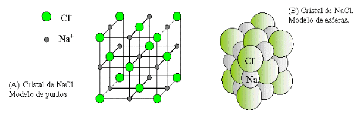
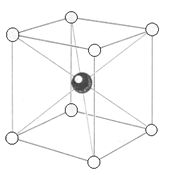
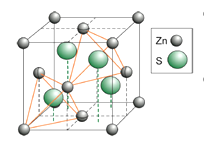
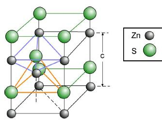
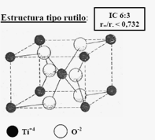
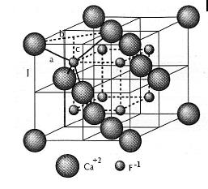
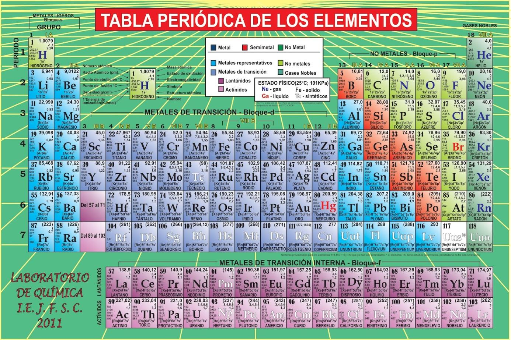

Cada ejercicio muestra solo el enunciado. La resolución aparece con “Ver resolución”, así se puede intentar primero en papel y comparar después.
Marcar lo hecho
La casilla “Hecho” pinta el número en el índice y suma al progreso. Se guarda en este navegador; no se comparte ni se sincroniza con otros dispositivos.
Moverse rápido
Las pestañas de arriba cambian de coloquio. Dentro de cada uno, el índice numerado salta a cualquier ejercicio y el buscador filtra por palabra.
Constantes y criterios usados
Magnitud
Valor usado
Constante de Planck,
J·s erg·s
Velocidad de la luz,
m/s
Carga elemental y electronvoltio
C uee; 1 eV J
Producto
J·m eV·Å (con los valores redondeados de arriba)
Número de Avogadro,
mol-1
Masa del electrón y del protón
kg; kg
Constante de Rydberg del hidrógeno,
cm-1
Radio de Bohr,
Å
Energía de ionización del H
eV kJ/mol
Factor de Born–Landé,
kJ·Å/mol
Equivalencias
1 cal J; 1 eV/partícula kJ/mol; 1 D C·m
Datos de tabla. Los problemas del Coloquio 3 que piden datos del suplemento se resolvieron con valores de tabla habituales, listados uno por uno en cada resolución. El Suplemento numérico de la cátedra está ahora incluido completo en la página. Algunos de sus valores difieren un poco de los usados, así que al rehacer una cuenta con ellos el resultado puede cambiar en las últimas cifras; el procedimiento es el mismo.
Enunciados con errores de tipeo o datos faltantes. Están señalados con un recuadro “Atención” y se resuelven con la interpretación más razonable, que se explica en el lugar.
Resoluciones de la cátedra. Los problemas 1 a 5 del Coloquio 4 y la guía resuelta del Coloquio 5 ya venían resueltos en los PDF. Acá se reproducen ordenados, con las observaciones necesarias cuando la resolución original tiene algo para revisar.
Cifras. Los resultados numéricos fueron recalculados con las constantes de la tabla y se dan con tres o cuatro cifras significativas.
Coloquio 1 · Tema 1
Fundamentos de la estructura atómica
Modelos atómicos, cuantización de la energía, espectro del hidrógeno, teoría de Bohr y efecto fotoeléctrico.
Comparar los modelos atómicos de Thomson y Rutherford. ¿Qué predicciones incorrectas hizo Thomson que fueron corregidas por Rutherford?
Thomson (1904). El átomo es una esfera de carga positiva repartida de manera uniforme en todo su volumen (≈ 10-8 cm), con los electrones incrustados como pasas en un budín. La masa y la carga positiva están diluidas.
Rutherford (1911). Toda la carga positiva y casi toda la masa están en un núcleo diminuto (≈ 10-12 cm). Los electrones giran alrededor, y el átomo es en su mayor parte espacio vacío.
Qué predecía mal Thomson. Con la carga positiva diluida, el campo eléctrico dentro del átomo es débil. Las partículas α que atraviesan una lámina de oro deberían desviarse apenas unos grados. Geiger y Marsden observaron que la mayoría pasa casi sin desviarse, pero alrededor de 1 de cada 8000 rebota con ángulos mayores a 90°. Ese rebote solo se explica si la partícula α encuentra una carga positiva muy concentrada y con mucha masa: el núcleo.
Thomson
Rutherford
Carga positiva
Distribuida en todo el átomo
Concentrada en el núcleo
Masa
Repartida
Casi toda en el núcleo
Electrones
Incrustados, casi quietos
Giran alrededor del núcleo
Dispersión de α
Solo ángulos pequeños
Ángulos pequeños y, a veces, rebotes
Pregunta2
Describir cuáles fueron las fallas de los modelos atómicos subsiguientes y cómo fueron corregidas por los nuevos modelos.
Rutherford. Un electrón que gira está acelerado y, según el electromagnetismo clásico, debería irradiar energía de forma continua y caer en espiral al núcleo en unos 10-8 s. Además emitiría un espectro continuo, y los átomos emiten líneas discretas. El modelo no explica ni la estabilidad del átomo ni los espectros de líneas.
Bohr (1913) lo corrige con postulados: el electrón solo puede estar en ciertas órbitas estacionarias donde no irradia (), y solo emite o absorbe al saltar entre ellas (). Reproduce la fórmula de Rydberg y la energía de ionización del hidrógeno.
Fallas de Bohr. Solo funciona para especies de un electrón (H, He+, Li2+). No explica la estructura fina de las líneas, sus intensidades, el efecto Zeeman ni el enlace químico. Mezcla mecánica clásica con reglas cuánticas sin justificarlas y supone órbitas definidas, lo que contradice el principio de incertidumbre.
Sommerfeld agrega órbitas elípticas y un segundo número cuántico, con correcciones relativistas. Explica parte de la estructura fina, pero sigue siendo un modelo de órbitas.
Mecánica cuántica (De Broglie, Heisenberg, Schrödinger, 1924–1926). Reemplaza la órbita por el orbital: una función de onda cuyo cuadrado da la probabilidad de encontrar al electrón. Los números cuánticos aparecen como consecuencia matemática y el modelo se extiende a átomos con muchos electrones.
Pregunta3
¿Qué describe la teoría de Planck?
Describe cómo la materia emite y absorbe energía radiante. Planck la propuso en 1900 para explicar el espectro de emisión del cuerpo negro, que la física clásica no podía reproducir (la “catástrofe ultravioleta”).
La idea central es que la energía no se intercambia de forma continua, sino en paquetes llamados cuantos. Un oscilador de frecuencia solo puede ganar o perder múltiplos enteros de :
La energía de cada cuanto es proporcional a la frecuencia: a mayor frecuencia (menor longitud de onda), cuantos más energéticos.
Pregunta4
¿Cómo se describe la radiación electromagnética en la teoría corpuscular?
Einstein (1905) extendió la idea de Planck a la radiación misma: la luz está formada por partículas, los fotones, que viajan a la velocidad . Cada fotón lleva una energía y un momento lineal definidos:
La intensidad de la luz es el número de fotones que llegan por unidad de tiempo y de área; la frecuencia fija la energía de cada uno. Esto explica el efecto fotoeléctrico: un electrón absorbe un fotón entero, y solo sale del metal si supera la función trabajo, sin importar cuán intensa sea la luz.
Pregunta5
¿Qué es la dualidad onda-partícula?
Es el principio según el cual la radiación y la materia muestran comportamiento de onda (interferencia, difracción) o de partícula (choques, efecto fotoeléctrico) según el experimento. Ninguna de las dos descripciones alcanza por sí sola.
De Broglie (1924) propuso que toda partícula con momento tiene una onda asociada:
Para objetos macroscópicos es tan pequeña que no se detecta. Para electrones es del orden de las distancias atómicas, y por eso el comportamiento ondulatorio es decisivo en el átomo.
Pregunta6
¿Qué experimento demostró la naturaleza ondulatoria de los electrones?
El experimento de Davisson y Germer (1927): un haz de electrones dirigido sobre un cristal de níquel produce máximos y mínimos de intensidad, es decir, un patrón de difracción igual al de los rayos X. La longitud de onda medida con la ley de Bragg coincidió con .
El mismo año G. P. Thomson obtuvo anillos de difracción haciendo pasar electrones por láminas metálicas delgadas. La difracción es un fenómeno exclusivo de las ondas, así que ambos resultados confirmaron la hipótesis de De Broglie.
Pregunta7
¿Qué son las series espectrales del hidrógeno?
Son grupos de líneas del espectro de emisión del hidrógeno que comparten el mismo nivel de llegada . Todas responden a la fórmula de Rydberg:
Serie
Región
Lyman
1
2, 3, 4…
Ultravioleta
Balmer
2
3, 4, 5…
Visible y UV cercano
Paschen
3
4, 5, 6…
Infrarrojo cercano
Brackett
4
5, 6, 7…
Infrarrojo
Pfund
5
6, 7, 8…
Infrarrojo lejano
Dentro de cada serie las líneas se van juntando hasta un límite (), llamado cabeza de serie.
Pregunta8
¿Qué representa un término espectral?
Es cada uno de los dos sumandos de la fórmula de Rydberg:
El número de onda de cualquier línea es la diferencia entre dos términos (principio de combinación de Ritz). Físicamente, cada término es la energía de un nivel expresada en cm-1 y con signo cambiado: . Por eso una línea corresponde a la diferencia de energía entre dos niveles.
Pregunta9
¿Cuáles son los postulados básicos de la teoría de Bohr?
Órbitas estacionarias. El electrón gira en órbitas circulares alrededor del núcleo, sostenido por la atracción de Coulomb. En ciertas órbitas no emite energía, aunque esté acelerado.
Cuantización del momento angular. Solo están permitidas las órbitas en las que , con
Condición de frecuencia. El átomo emite o absorbe un fotón solo cuando el electrón salta entre dos órbitas permitidas: .
De ahí salen el radio y la energía de cada órbita para una especie de un electrón:
Pregunta10
¿Qué es la constante de Rydberg?
Es la constante de proporcionalidad de la fórmula que da los números de onda de las líneas del hidrógeno. Experimentalmente vale .
Bohr la dedujo a partir de constantes fundamentales (en unidades cgs):
Ese valor supone un núcleo de masa infinita. Como el núcleo también se mueve, se reemplaza por la masa reducida , y resulta . Por eso cambia levemente de un isótopo o de un ion hidrogenoide a otro.
Multiplicada por da la energía de ionización del hidrógeno: eV.
Pregunta11
¿Por qué [la teoría de Bohr] no puede explicar los espectros de átomos con más de un electrón, como el helio?
Porque el modelo solo considera la atracción entre un electrón y el núcleo. Con dos o más electrones aparecen las repulsiones entre ellos, y cada electrón apantalla parte de la carga nuclear que sienten los demás.
Las consecuencias son tres. La energía deja de depender solo de y pasa a depender también de (los subniveles s, p, d ya no están degenerados). El problema de tres cuerpos no tiene solución exacta con órbitas. Y el modelo no incluye el espín ni el principio de exclusión, que son necesarios para explicar por qué el helio tiene dos sistemas de líneas (singletes y tripletes).
Pregunta12
¿Qué es la mecánica cuántica?
Es la teoría que describe el comportamiento de la materia y la radiación a escala atómica. Sus bases son la cuantización de la energía (Planck), la dualidad onda-partícula (De Broglie) y el principio de incertidumbre (Heisenberg).
El estado de un sistema se describe con una función de onda , que se obtiene resolviendo la ecuación de Schrödinger . El cuadrado da la probabilidad de encontrar la partícula en cada punto. En lugar de trayectorias definidas hay distribuciones de probabilidad, y las energías permitidas aparecen cuantizadas de forma natural.
Pregunta13
¿Qué es un espectro continuo?
Es un espectro que contiene todas las longitudes de onda de un intervalo, sin interrupciones. Lo emiten los sólidos, líquidos y gases densos incandescentes (el filamento de una lámpara, el Sol): el arco iris es un espectro continuo en el visible.
En los átomos aparece también más allá del límite de cada serie. Cuando el electrón recibe más energía que la de ionización queda libre, y su energía cinética puede tomar cualquier valor: la absorción o emisión ya no está cuantizada. Por eso después de la cabeza de serie las líneas dan paso a un continuo.
Problemas
Radiación electromagnética
Problema1
Determinar la frecuencia de la luz (en s-1) de las siguientes longitudes de onda: a) 1,0 Å; b) 5000 Å; c) 4,4 µ; d) 89 m.
Se usa con en metros (1 Å m; 1 µ m).
Caso
(m)
(s-1)
a) 1,0 Å
b) 5000 Å
c) 4,4 µ
d) 89 m
Problema2
Determinar la longitud de onda, en las unidades indicadas, para la luz de las siguientes frecuencias: a) 55 megaciclos (λ en m); b) 1000 ciclos (λ en cm); c) 7,5 s-1 (λ en Å).
Se usa . Un ciclo por segundo es 1 Hz, y 1 megaciclo Hz.
a) m
b) m cm
c) m Å
Problema3
Determinar a qué región del espectro electromagnético pertenecen [las radiaciones de los problemas 1 y 2].
Radiación
Región
1 a)
1,0 Å
Rayos X
1 b)
5000 Å (500 nm)
Visible (verde)
1 c)
4,4 µm
Infrarrojo
1 d)
89 m
Ondas de radio (onda corta, 3,4 MHz)
2 a)
5,45 m
Ondas de radio (VHF: televisión y FM)
2 b)
300 km
Ondas de radio de muy baja frecuencia
2 c)
40 000 km
Ondas de radio de frecuencia extremadamente baja
Referencia rápida de límites: rayos γ < 0,1 Å; rayos X 0,1–100 Å; ultravioleta 10–400 nm; visible 400–700 nm; infrarrojo 0,7 µm–1 mm; microondas 1 mm–30 cm; radio > 30 cm.
Problema4
Calcular la energía de un fotón con una longitud de onda de 500 nm usando la ecuación de Planck: , donde J·s y m/s.
Resultado
J por fotón, que equivale a 2,48 eV o 239 kJ/mol.
Problema5
Se conoce, a partir de las experiencias de bombardeo con rayos α, que el átomo y el núcleo atómico presentan diámetros del orden de δA = 10-8 cm y δN = 10-12 cm respectivamente. a) Calcular las densidades del átomo y del núcleo del hidrógeno. b) Conociendo que la densidad del gas hidrógeno (H2) a 0 °C y 1 atm es de 9×10-5 g/cm³, extraer conclusiones sobre la concepción que el modelo de Rutherford propone para la materia y del estado de agregación gaseoso. Datos: masa del protón 1,0076 UMA (1 UMA = 1,68×10-24 g).
a) Densidades
Masa del átomo (prácticamente la del protón): g.
Volúmenes, tomando esferas de radio :
b) Conclusiones
El núcleo es veces más chico en diámetro, o sea veces más chico en volumen, y tiene casi toda la masa. Su densidad es de unas 3 millones de toneladas por cm³. El átomo de Rutherford es casi todo espacio vacío.
La densidad del gas es veces menor que la del átomo aislado. En un gas a 0 °C y 1 atm las moléculas ocupan del orden de una parte en 104 del volumen total: están muy separadas entre sí.
La materia es vacío en dos escalas: dentro del átomo (núcleo frente a átomo) y, en el estado gaseoso, entre las moléculas.
Problema6
Demostrar que es correcta la suposición de considerar despreciables las fuerzas gravitatorias frente a las de Coulomb cuando se efectúa la deducción para hallar r y v en la teoría de Bohr. M = masa del protón ≈ 2000 me, con me = 9,1×10-28 g; para n = 1, r = 0,53 Å; e = 4,8×10-10 uee.
Se comparan las dos fuerzas a la misma distancia, en unidades cgs ( dina·cm²/g²; g; cm).
Resultado
La atracción eléctrica es unas veces mayor que la gravitatoria. El cociente no depende de , así que despreciar la gravedad es válido en cualquier órbita.
Problema7
Aplicando la fórmula de Rydberg para el átomo de hidrógeno (R = RH), calcular las primeras tres transiciones de las series de Lyman, Balmer y Paschen: a) λ en Å, cm y µ; b) número de onda en cm-1; c) frecuencia ν en Hz; d) energía en erg, eV y unidades atómicas (e²/a0).
Para cada transición :
con cm-1 y cm/s. En unidades atómicas ( eV) la energía es simplemente .
Serie
Transición
(cm-1)
λ (Å)
λ (cm)
λ (µ)
ν (Hz)
E (erg)
E (eV)
E (u.a.)
Lyman
2 → 1
82 258
1215,7
0,1216
10,21
0,3750
Lyman
3 → 1
97 492
1025,7
0,1026
12,10
0,4444
Lyman
4 → 1
102 823
972,5
0,0973
12,76
0,4688
Balmer
3 → 2
15 233
6564,7
0,6565
1,890
0,0694
Balmer
4 → 2
20 565
4862,7
0,4863
2,552
0,0938
Balmer
5 → 2
23 032
4341,7
0,4342
2,858
0,1050
Paschen
4 → 3
5331,6
18 756
1,876
0,662
0,0243
Paschen
5 → 3
7799,3
12 822
1,282
0,968
0,0356
Paschen
6 → 3
9139,8
10 941
1,094
1,134
0,0417
Nota
Las longitudes de onda salen en el vacío. En tablas suele figurar Hα = 6562,8 Å porque se mide en aire.
Problema8
La línea más intensa del espectro del átomo de sodio tiene una longitud de onda de 589 nm. Calcular el correspondiente número de onda y la energía de la transición implicada en electronvoltios por fotón y en kJ/mol.
Por fotón: eV
Por mol: J/mol
Resultado
cm-1; eV por fotón kJ/mol.
Problema9
Si en un tubo de H electrones de energía 12,2 eV chocan con los átomos, ¿cuáles serán las longitudes de onda de las líneas emitidas?
Primero se ve hasta qué nivel puede excitarse el átomo. La energía de cada nivel respecto del fundamental es eV:
2
3
4
desde (eV)
10,20
12,09
12,75
Con 12,2 eV alcanza para llegar a pero no a . Desde el electrón puede volver de tres maneras:
Transición
Serie
λ
3 → 1
Lyman
1026 Å
3 → 2
Balmer (Hα)
6565 Å
2 → 1
Lyman
1216 Å
Resultado
Se emiten tres líneas: 1026 Å y 1216 Å (ultravioleta) y 6565 Å (rojo).
Problema10
Un haz de electrones acelerado a través de 4,64 eV en un tubo que contiene vapor de mercurio es absorbido parcialmente por dicho vapor. A consecuencia de la absorción se producen cambios electrónicos dentro de un átomo de mercurio que emite luz. Si toda la energía de un electrón se convirtiera en luz, ¿cuál sería la longitud de onda de la luz emitida?
Toda la energía del electrón pasa a un fotón: eV J.
Resultado
Å (267 nm), en el ultravioleta.
Problema11
El cobre exhibe una línea de espectro de 3274 Å. Calcular el cambio de energía experimentado por los electrones responsables de esta línea.
Resultado
J erg eV por átomo (366 kJ/mol).
Problema12
El oído humano es sensible a ondas sonoras con frecuencias comprendidas entre 15 Hz y 20 kHz. La velocidad del sonido en el aire es 343 m/s. Calcular las longitudes de onda correspondientes a estas frecuencias.
Vale la misma relación , con la velocidad del sonido en lugar de .
15 Hz: m
20 kHz: m cm
Espectros
Problema13
Calcular en Å, para el átomo de H, la longitud de onda: a) más corta de la serie de Lyman; b) más larga de la serie de Lyman.
En Lyman . La línea más corta es la de mayor energía (, límite de la serie) y la más larga es la de menor energía ().
a) cm-1, entonces cm Å
b) cm-1, entonces cm Å
Problema14
Aplicando la fórmula de Rydberg para el átomo de hidrógeno (R = RH), calcular las primeras tres transiciones de las series de Lyman, Balmer y Paschen: a) λ en Å, cm y µ; b) número de onda en cm-1; c) frecuencia en Hz; d) energía en erg, eV y unidades atómicas.
La consigna es idéntica a la del problema 7. La tabla completa con las nueve transiciones está ahí.
Problema15
Calcular la longitud de onda de la segunda línea de la serie de Paschen para el hidrógeno.
Paschen: . La segunda línea parte de .
Resultado
cm Å µm (infrarrojo cercano).
Problema16
Si un electrón está en el estado n = 2 en un átomo de H, ¿cuánta será la energía necesaria para ionizar el átomo?
La energía del nivel es eV. Ionizar es llevar el electrón a , donde .
Resultado
eV J por átomo (328 kJ/mol). Es la cuarta parte de la energía de ionización desde el estado fundamental.
Problema17
En una transición desde un estado n a un estado excitado distante 10,19 eV del estado de base del H se emite un fotón de λ = 4890 Å. Calcular los números cuánticos que caracterizan el estado inicial y el final.
Estado final. Un nivel a 10,19 eV del fundamental cumple , de donde y .
Estado inicial. La energía del fotón es eV. El estado de partida está entonces a eV del fundamental:
Resultado
La transición es (segunda línea de Balmer, Hβ).
Nota
El valor exacto de Hβ es 4861 Å; con el dato redondeado del enunciado da 3,95, que se toma como 4 porque debe ser entero.
Problema18
¿Cuántos fotones de longitudes de onda distintas pueden ser emitidos por el átomo de H si el electrón está inicialmente en un estado n = 5 y finalmente en el estado de base?
El electrón puede bajar directamente o en etapas, pasando por cualquier nivel intermedio. Cada par de niveles da una línea distinta, así que se cuentan las combinaciones de 5 niveles tomados de a 2:
10 líneas distintas (4 de Lyman, 3 de Balmer, 2 de Paschen y 1 de Brackett). Un átomo individual emite como máximo 4 fotones en una misma cascada.
Problema19
Calcular el potencial normal de ionización del hidrógeno en erg, eV y kcal/mol.
Es la energía para llevar el electrón de a , que corresponde al límite de la serie de Lyman ():
En eV: eV
Por mol: kJ/mol kcal/mol
Resultado
erg eV kcal/mol.
Problema20
Las líneas de la serie de Lyman proceden de transiciones en que el electrón excitado cae en el nivel n = 1. Calcular el número cuántico para el estado inicial de la línea cuyo número de onda es 97 492,2 cm-1.
Resultado
. Es la segunda línea de Lyman (3 → 1, 1026 Å).
Problema21
Justificar el hecho de que la serie de Lyman presenta límite o cabeza de serie en el ultravioleta y la de Balmer, en cambio, presenta dicho límite en zona visible del espectro.
El límite de una serie corresponde a , es decir . La energía en juego es la que separa el nivel de llegada del continuo.
Lyman (): , Å, eV. El nivel 1 está muy por debajo de todos los demás, así que hasta la línea menos energética (2 → 1, 1216 Å, 10,2 eV) cae en el ultravioleta lejano.
Balmer (): , Å, eV. Los saltos hacia valen entre 1,89 y 3,40 eV, que es justo el rango de energía de la luz visible y el borde del violeta.
La razón de fondo es que la energía va como : el nivel 1 está cuatro veces más abajo que el nivel 2.
Atención
En rigor el límite de Balmer (3647 Å) queda apenas pasado el violeta, en el ultravioleta cercano. Lo que cae en el visible son las primeras líneas de la serie (6565, 4863, 4342 y 4103 Å), que se van apretando hacia ese límite. Conviene decirlo así en el coloquio.
Efecto fotoeléctrico
Problema22
La longitud de onda crítica para producir el efecto fotoeléctrico en el tungsteno es de 2,6×10³ Å. a) ¿Cuál es la energía de un cuanto para esta longitud de onda en ergios y en eV? b) ¿Qué longitud de onda sería necesaria para producir fotoelectrones a partir de tungsteno con una energía cinética doble que la poseída por los producidos con 2,2×10³ Å?
Ecuación de Einstein: , donde es la función trabajo.
a) Energía del cuanto umbral
b) Longitud de onda para duplicar la energía cinética
Fotón de 2200 Å: eV
Energía cinética con 2200 Å: eV
Energía cinética pedida: eV
Fotón necesario: eV
Resultado
a) erg eV. b) Å.
Problema23
La frecuencia de umbral del sodio (ν0) es 5,6×1014 Hz. a) ¿Cuál es la función de trabajo del sodio? b) La superficie de sodio se expone a una radiación de frecuencia 8,6×1014 Hz. ¿Cuál es la energía cinética máxima que tienen los electrones que escapan de ese metal?
a) J eV
b) J eV
Problema24
El potencial de frenado que evita que los electrones fluyan en una fotocelda es 3,2 eV. Calcular la energía cinética máxima de los fotoelectrones dentro de la fotocelda.
El potencial de frenado es el que detiene justo a los electrones más rápidos, de modo que .
Resultado
eV J.
Nota
El enunciado da el potencial “en eV”. El potencial se mide en voltios (3,2 V); la energía correspondiente es 3,2 eV.
Problema25
La frecuencia de entrada [umbral] del calcio es 6,5×1014 Hz. a) ¿Cuál es la función de trabajo del calcio? b) Un electronvoltio (eV) es el trabajo que se necesita para transferir un electrón a través de una diferencia de potencial de un voltio (1 eV = 1,6×10-19 J). Expresar la función de trabajo del calcio en eV.
a) J
b) eV
Problema26
La función de trabajo del potasio es 2,2 eV. a) ¿Cuál es la función de trabajo de este metal expresada en julios? b) ¿Cuál es la frecuencia de umbral para el potasio?
a) J
b) Hz (corresponde a nm)
Problema27
La máxima energía de fotoelectrones para el Al es de 2,3 eV para radiación de 200 nm y de 0,90 eV para radiación de 261 nm. Utilizar estos datos para calcular la constante de Planck y la función de trabajo del Al.
Se plantea la ecuación de Einstein para las dos radiaciones y se restan, con lo que desaparece :
Hz
Hz
eV J
Función trabajo, con ese valor de :
Resultado
J·s (3 % por debajo del valor aceptado) y eV.
Problema28
La frecuencia umbral para la emisión fotoeléctrica del cobre es 1,1×1015 Hz. ¿Cuál será la energía máxima (en electronvoltios) de los fotoelectrones emitidos cuando luz de frecuencia 1,5×1015 Hz incide sobre una superficie de cobre?
Resultado
eV.
Problema27 bis
Si la longitud de onda se aumenta en un experimento de efecto fotoeléctrico de 3000 a 3010 Å, ¿en cuánto aumenta el potencial de corte?
El potencial de corte cumple . Al cambiar solo :
Resultado
El potencial de corte disminuye 13,7 mV.
Atención
La consigna pregunta cuánto “aumenta”, pero al aumentar λ los fotones tienen menos energía y el potencial de corte baja. Este problema figura en la guía con el número 27 repetido.
Problema29
El rango de energías cinéticas de los electrones varía entre 0 y 4,0×10-19 J cuando la luz que incide tiene una frecuencia de 1×1015 Hz. a) ¿Cuál es el potencial de corte para esta luz? b) ¿Cuál es la longitud de onda de corte para este material?
a) V
b) J eV
Resultado
V y nm.
Problema30
La frecuencia umbral del potasio en el efecto fotoeléctrico es 4,5×1014 Hz. Determinar la velocidad máxima de los electrones emitidos cuando se hace incidir luz de frecuencia 6×1014 Hz sobre dicho metal.
Problema31
La energía cinética máxima de los electrones producidos por luz de 5,0×1014 Hz es 0,17 eV. Calcular la función trabajo de este metal.
Energía del fotón: J eV.
Resultado
eV J.
Problema32
Cuando una superficie metálica se ilumina con luz de longitud de onda λ1, el potencial de corte de los fotoelectrones es 3,5 V. Cuando la misma superficie se ilumina con luz de longitud de onda λ2 = 2λ1, el potencial de corte es 0,8 V. ¿Cuál es la función trabajo de este material?
Llamando (energía del primer fotón, en eV), el segundo fotón tiene la mitad:
Restando: , entonces eV. Reemplazando en la primera: .
Resultado
eV. De paso, Å.
Problema33
La función de trabajo del K es 2,26 eV. ¿Cuál es el potencial de corte para fotoelectrones eyectados de un cátodo de K por luz ultravioleta de 207 nm?
Energía del fotón: eV.
Resultado
V.
Problema34
Se hace incidir luz monocromática sobre una superficie de Zn (función trabajo = 3,74 eV). La máxima energía cinética de los fotoelectrones emitidos es 0,8 eV. ¿Cuál es la longitud de onda de la radiación incidente?
Resultado
nm (ultravioleta).
Problema35
El potencial de detención para el efecto fotoeléctrico con luz monocromática incidente sobre Na es 1,85 V si λ = 3000 Å y 0,82 V si λ = 4000 Å. Determinar: a) el valor de la constante de Planck; b) la función de trabajo del Na; c) la longitud de onda umbral para el Na.
Frecuencias: Hz y Hz.
a) Constante de Planck
b) Función de trabajo
c) Longitud de onda umbral
Resultado
J·s; eV; Å.
Problema36
Cuando luz de longitud de onda 300 nm incide sobre el potasio se emiten electrones cuya energía cinética máxima es 1,91 eV. a) ¿Cuál es la energía de los fotones incidentes? b) ¿Cuál es la función de trabajo del K? c) ¿Cuál es el potencial de corte?
a) eV J
b) eV
c) V
Otros
Problema37
Se ha determinado que las moléculas de yodo gaseoso se disocian en átomos separados a consecuencia de la absorción de luz de longitudes de onda menores de 4995 Å. Si cada cuanto se absorbe por una molécula de I2, ¿cuál es la energía mínima, en kcal/mol, necesaria para disociar el I2 en este proceso fotoquímico?
La energía mínima es la del fotón de 4995 Å, multiplicada por el número de Avogadro porque cada molécula absorbe un cuanto.
Resultado
kJ/mol kcal/mol.
Problema38
Calcular la longitud de onda máxima de un fotón que pueda producir la reacción N2(g) → 2 N(g), ΔE = +225 kcal/mol.
Energía por molécula:
Resultado
nm (1270 Å), en el ultravioleta lejano. Fotones de mayor longitud de onda no alcanzan para romper el triple enlace.
Problema39
La reacción fotoquímica NO2(g) + hν → NO(g) + O es una de las fuentes de átomos de oxígeno (y por tanto de ozono) más importantes en la atmósfera terrestre. La energía de disociación es 306 kJ/mol. Encontrar la longitud de onda de un fotón capaz de producir dicha reacción.
Resultado
nm. Es luz del ultravioleta cercano y borde del violeta, que sí llega a la baja atmósfera.
Coloquio 2 · Tema 2
Concepción moderna del átomo
Incertidumbre, ondas de materia, ecuación de Schrödinger, números cuánticos, configuraciones electrónicas y carga nuclear efectiva.
¿Cuál es la expresión matemática del principio de incertidumbre?
es la incertidumbre en la posición y la incertidumbre en el momento lineal en la misma dirección. Existe una relación equivalente para energía y tiempo: .
Nota
Algunos textos escriben el límite como o simplemente . Cambia el factor numérico, no el orden de magnitud ni la conclusión.
Pregunta2
¿Cómo afecta este principio a nuestra comprensión de la posición y el momento de una partícula?
Establece que posición y momento no pueden conocerse a la vez con precisión arbitraria: cuanto mejor se fija una, peor queda definida la otra. No es una limitación de los instrumentos, es una propiedad de la naturaleza que surge del carácter ondulatorio de la materia.
La consecuencia es que el concepto clásico de trayectoria deja de tener sentido a escala atómica. Para definir una trayectoria hacen falta posición y velocidad en cada instante, y eso es justamente lo que el principio prohíbe. En su lugar se habla de la probabilidad de encontrar la partícula en una región.
Pregunta3
Explicar la relación entre el principio de incertidumbre y los electrones en los átomos.
Un electrón en un átomo está confinado en una región de ≈ 1 Å. Con m la incertidumbre en su velocidad resulta del orden de m/s, comparable a la velocidad misma del electrón (ver problema 2). No se puede, entonces, hablar de una órbita definida.
Las órbitas de Bohr (radio y velocidad exactos a la vez) son incompatibles con el principio.
La descripción correcta es el orbital: una función de onda cuyo cuadrado da la densidad de probabilidad electrónica.
También explica por qué el electrón no cae al núcleo: confinarlo en una región tan pequeña exigiría un momento, y por lo tanto una energía cinética, enorme.
Pregunta4
¿Cuál es la ecuación que relaciona la longitud de onda con la masa y la velocidad de una partícula?
La relación de De Broglie:
Si se conoce la energía cinética en lugar de la velocidad (régimen no relativista): .
Pregunta5
¿Cómo confirmó el experimento de difracción de electrones la hipótesis de De Broglie?
Davisson y Germer (1927) dirigieron un haz de electrones de energía conocida sobre un cristal de níquel y midieron la intensidad reflejada en función del ángulo. Encontraron máximos y mínimos, es decir, un patrón de difracción.
Los planos del cristal actúan como red de difracción. Aplicando la ley de Bragg, , calcularon la longitud de onda a partir del ángulo del máximo. Para electrones de 54 eV obtuvieron 1,65 Å; la relación de De Broglie predice 1,67 Å. La coincidencia confirmó la hipótesis de forma cuantitativa. G. P. Thomson llegó al mismo resultado con láminas metálicas delgadas.
Pregunta6
¿Qué implicaciones tiene la naturaleza ondulatoria de las partículas para la estructura atómica?
Cuantización. Un electrón ligado al núcleo se comporta como una onda estacionaria. Solo ciertas ondas “entran” en el átomo, y cada una tiene una energía definida. La cuantización deja de ser un postulado y pasa a ser una consecuencia (ver problema 5).
Orbitales en lugar de órbitas. El electrón se describe con una función de onda extendida en el espacio.
Nodos. Como toda onda estacionaria, la función de onda tiene regiones donde vale cero. La cantidad de nodos crece con la energía.
Enlace químico. Las ondas de dos átomos pueden interferir de forma constructiva (orbital enlazante) o destructiva (antienlazante).
Pregunta7
¿Qué postulados son fundamentales en la teoría cuántica?
El estado de un sistema queda descripto por completo por una función de onda .
es la probabilidad de encontrar la partícula en el elemento de volumen . Por eso debe ser finita, continua, univaluada y normalizable.
A cada magnitud observable le corresponde un operador. Los valores que se pueden medir son los valores propios de ese operador.
La función de onda de los estados estacionarios se obtiene de la ecuación de Schrödinger .
La energía se intercambia en cuantos, (Planck), y toda partícula tiene una onda asociada, (De Broglie).
Pregunta8
Explicar cómo el modelo cuántico de Bohr se diferencia de los modelos anteriores de la estructura atómica.
Thomson y Rutherford son modelos clásicos: admiten cualquier valor de energía para el electrón. Bohr mantiene el núcleo de Rutherford pero introduce la cuantización:
Rutherford
Bohr
Órbitas
Cualquier radio
Solo las que cumplen
Energía
Continua
Niveles discretos, eV
Estabilidad
El electrón irradia y cae
En una órbita estacionaria no irradia
Espectro
Debería ser continuo
Líneas:
Bohr fue el primer modelo que aplicó la idea de cuanto a la estructura del átomo y que calculó un espectro a partir de constantes fundamentales.
Pregunta9
¿Qué significa cuantización de energía?
Que un sistema solo puede tener ciertos valores de energía, separados entre sí, y no cualquier valor intermedio. El paso de un estado a otro ocurre absorbiendo o emitiendo exactamente la diferencia, .
En el átomo de hidrógeno los valores permitidos son eV. Entre eV y eV, por ejemplo, no existe ningún estado.
Pregunta10
¿Qué es la ecuación de ondas de Schrödinger? Escribirla y explicar cada término.
Es la ecuación fundamental de la mecánica cuántica: sus soluciones son las funciones de onda y las energías permitidas de un sistema. Para estados estacionarios:
: función de onda del electrón.
: operador laplaciano. El término representa la energía cinética.
: masa del electrón (o la masa reducida del sistema).
: energía total del estado.
: energía potencial. En el átomo de hidrógeno, .
: operador hamiltoniano (energía cinética más potencial).
Pregunta11
¿Qué significa que una función de onda sea normalizable?
Que la integral de su cuadrado sobre todo el espacio es finita y puede hacerse igual a 1 multiplicando por una constante:
El sentido físico es que la probabilidad de encontrar al electrón en algún lugar del espacio es 1. Para que eso sea posible debe tender a cero en el infinito.
Pregunta12
Describir las soluciones principales de la ecuación de Schrödinger para el átomo de hidrógeno.
En coordenadas esféricas la función de onda se separa en una parte radial y una angular:
depende de y . Da el tamaño del orbital y tiene nodos radiales.
depende de y . Da la forma y la orientación, y tiene nodos angulares.
La energía depende solo de : eV.
Orbital
Forma de la función (con )
1s
1
0
2s
2
0
2pz
2
1
3s
3
0
Pregunta13
¿Qué es un orbital atómico? ¿Cómo se representa matemáticamente?
Es una función de onda de un electrón en un átomo, , solución de la ecuación de Schrödinger. Queda identificada por los tres números cuánticos , y , y puede alojar como máximo dos electrones de espín opuesto.
Matemáticamente es el producto . Gráficamente se representa con una superficie límite que encierra, por ejemplo, el 90 % de la probabilidad, o con gráficos de , y en función de .
Pregunta14
¿Cómo se relacionan las funciones de probabilidad con la distribución electrónica en un átomo?
es la densidad de probabilidad: probabilidad por unidad de volumen en un punto. Es la “nube electrónica”.
es la distribución radial: probabilidad de encontrar al electrón en una cáscara esférica entre y , a cualquier ángulo.
La diferencia importa. Para el 1s, es máxima en el núcleo, pero la distribución radial vale cero ahí (el volumen de la cáscara es nulo) y tiene su máximo en Å, que coincide con el radio de la primera órbita de Bohr.
Pregunta15
¿Cuál es la diferencia entre un nodo radial y un nodo angular?
En un nodo la función de onda vale cero y la probabilidad de encontrar al electrón es nula.
Nodo radial
Nodo angular
Dónde se anula
La parte radial
La parte angular
Forma
Superficie esférica
Plano (o cono) que pasa por el núcleo
Cantidad
El total es siempre . Ejemplos: 2s tiene 1 radial y 0 angulares; 2p tiene 0 radiales y 1 angular; 3p tiene 1 y 1; 3d tiene 0 y 2.
Pregunta16
Explicar el significado de cada uno de los cuatro números cuánticos: n, l, ml, ms.
Número
Nombre
Valores
Qué determina
Principal
1, 2, 3…
Nivel de energía y tamaño del orbital
Secundario o azimutal
0 a
Forma del orbital y subnivel (0 = s, 1 = p, 2 = d, 3 = f). Módulo del momento angular orbital
Magnético
a
Orientación del orbital en el espacio
De espín
,
Sentido del momento angular intrínseco del electrón
Los tres primeros surgen de resolver la ecuación de Schrödinger e identifican al orbital. El cuarto se agrega para describir al electrón.
Pregunta17
¿Qué restricciones existen entre los números cuánticos? ¿Cómo se relacionan con los orbitales atómicos?
es un entero positivo.
va de 0 a : en el nivel hay subniveles.
va de a : cada subnivel tiene orbitales.
solo puede ser o .
Nivel
Subniveles
Orbitales ()
Electrones ()
1s
1
2
2s, 2p
1 + 3 = 4
8
3s, 3p, 3d
1 + 3 + 5 = 9
18
4s, 4p, 4d, 4f
1 + 3 + 5 + 7 = 16
32
Cada terna permitida es un orbital. Combinaciones como 1p, 2d o 3f no existen porque violan .
Pregunta18
Describir cómo los números cuánticos determinan las propiedades magnéticas de los electrones.
Un electrón genera momento magnético por dos vías: su movimiento orbital (ligado a y ) y su espín (ligado a ).
Dos electrones en el mismo orbital tienen opuestos y sus momentos de espín se cancelan. Una especie con todos los electrones apareados es diamagnética: un campo magnético la repele débilmente.
Si hay electrones desapareados queda un momento neto y la especie es paramagnética: el campo la atrae.
Con electrones desapareados, el momento magnético de espín es
En presencia de un campo externo, además, los orbitales con distinto dejan de tener la misma energía. Ese desdoblamiento de las líneas espectrales es el efecto Zeeman.
Pregunta19
Derivar la expresión para la energía de los electrones en el átomo de hidrógeno.
Se puede obtener con el modelo de Bohr; la ecuación de Schrödinger da el mismo resultado. En unidades cgs, para carga nuclear :
1. Equilibrio de fuerzas (atracción de Coulomb = fuerza centrípeta):
2. Cuantización del momento angular: , de donde .
3. Radio. Reemplazando en (1):
4. Energía total = cinética + potencial:
5. Reemplazando el radio:
Pregunta20
¿Por qué los niveles de energía en el átomo de hidrógeno están cuantizados?
Porque el electrón está ligado al núcleo y su función de onda debe cumplir condiciones de contorno: ser finita, continua, univaluada y anularse en el infinito. La ecuación de Schrödinger solo tiene soluciones que cumplen todo eso para ciertos valores de energía.
Es la misma razón por la que una cuerda fija en sus extremos vibra solo en ciertas frecuencias. En el lenguaje de De Broglie, la onda del electrón debe cerrar sobre sí misma: . Un electrón libre () no tiene esa restricción y su energía es continua.
Pregunta21
¿Cómo se relaciona la energía del electrón con el número cuántico principal n?
La energía es negativa (electrón ligado) e inversamente proporcional a .
Al crecer la energía aumenta, se hace menos negativa, y tiende a cero en (átomo ionizado).
Los niveles se van acercando: de a 2 hay 10,2 eV; de 2 a 3, solo 1,89 eV.
En el hidrógeno la energía depende únicamente de : todos los subniveles de un mismo nivel están degenerados.
Pregunta22
¿Qué diferencias fundamentales existen entre átomos de un solo electrón y átomos multielectrónicos?
Un electrón (H, He+, Li2+)
Varios electrones
Interacciones
Solo núcleo–electrón
Además, repulsión electrón–electrón
Ecuación de Schrödinger
Solución exacta
Solo soluciones aproximadas
Energía del orbital
Depende de
Depende de y de
Orden
2s = 2p; 3s = 3p = 3d
2s < 2p; 3s < 3p < 3d
Carga que siente el electrón
(apantallamiento)
Además, con más de un electrón entran en juego el principio de exclusión de Pauli y la regla de Hund.
Pregunta23
¿Qué es el apantallamiento y cómo afecta a los electrones en átomos multielectrónicos?
Es la reducción de la atracción nuclear que siente un electrón por la repulsión de los demás, sobre todo los que están más cerca del núcleo. El electrón “ve” una carga nuclear efectiva
donde es la constante de pantalla, que se estima con las reglas de Slater.
Los electrones internos apantallan mucho (0,85 a 1,00 cada uno); los del mismo nivel, poco (0,35).
Los electrones s penetran más hacia el núcleo que los p, y estos más que los d y f. Por eso, para un mismo , sienten mayor y tienen menor energía.
Un mayor implica menor radio, mayor energía de ionización y mayor electronegatividad.
Pregunta24
¿Cómo cambia la energía de los orbitales s, p, d y f en átomos multielectrónicos?
Se rompe la degeneración: para un mismo la energía aumenta con , o sea . La causa es la penetración: un electrón s pasa más tiempo cerca del núcleo y está menos apantallado.
El efecto es tan grande que niveles distintos se cruzan. El orden de llenado sigue la regla de Madelung (primero el menor ; a igual , el menor ):
Por eso el 4s se llena antes que el 3d.
Pregunta25
¿Cómo se distribuyen los electrones en los elementos de acuerdo con la tabla periódica?
La tabla refleja el orden de llenado de los subniveles:
Período = número cuántico principal del nivel más externo ocupado.
Bloque = subnivel que se está llenando.
Bloque
Grupos
Subnivel en llenado
Capacidad
s
1 y 2
2
p
13 a 18
6
d
3 a 12
10
f
Lantánidos y actínidos
14
Los elementos de un mismo grupo tienen la misma configuración de valencia, por ejemplo en los alcalinos y en los halógenos.
Pregunta26
¿Qué patrones de propiedades atómicas están relacionados con la configuración electrónica?
Radio atómico: disminuye en un período (crece ) y aumenta en un grupo (crece ).
Energía de ionización: aumenta en un período y disminuye en un grupo. Las capas llenas y semillenas (, , ) dan valores más altos de lo esperado.
Afinidad electrónica: en general aumenta hacia la derecha; es máxima en los halógenos, a los que les falta un electrón para completar la capa.
Electronegatividad: aumenta hacia arriba y hacia la derecha.
Estados de oxidación y valencia: dependen del número de electrones de valencia.
Magnetismo: depende del número de electrones desapareados.
Carácter metálico: aumenta hacia abajo y hacia la izquierda.
Pregunta27
Explicar cómo se utilizan los números cuánticos para predecir la ubicación de un elemento en la tabla periódica.
Se miran los números cuánticos del último electrón (el electrón diferenciador):
El mayor de la configuración da el período.
El valor de da el bloque: 0 → s, 1 → p, 2 → d, 3 → f.
El número de electrones de valencia da el grupo. En el bloque s es el número de electrones . En el bloque p es 10 + electrones + . En el bloque d es la suma de electrones + .
Ejemplo: el último electrón del fósforo tiene , ; su configuración es [Ne]3s23p3. Período 3, bloque p, grupo 10 + 5 = 15.
Pregunta28
¿Por qué no es posible que dos electrones en un átomo tengan los mismos cuatro números cuánticos?
Lo prohíbe el principio de exclusión de Pauli. Su origen es que los electrones son partículas indistinguibles de espín ½ (fermiones), y la función de onda total de un sistema de fermiones debe ser antisimétrica: cambia de signo al intercambiar dos de ellos. Si dos electrones tuvieran los cuatro números iguales, la función sería idéntica a sí misma con signo cambiado, y eso solo ocurre si vale cero. Ese estado no existe.
En la práctica: un orbital admite como máximo dos electrones, con espines opuestos.
Pregunta29
Dar un ejemplo de cómo se aplica el principio de exclusión de Pauli en un átomo específico.
Helio, 1s². Los dos electrones comparten , , , así que deben diferir en el espín:
Electrón
1
1
0
0
2
1
0
0
En el litio (Z = 3) ya no queda ninguna combinación libre con . El tercer electrón tiene que ir al 2s: 1s²2s¹. Así el principio explica la estructura de capas y la capacidad de cada nivel.
Pregunta30
Explicar el principio de Aufbau para la construcción de la configuración electrónica.
“Aufbau” significa construcción. La configuración del estado fundamental se obtiene agregando los electrones de a uno en los orbitales de menor energía disponibles, respetando el principio de Pauli y la regla de Hund.
El orden de energía lo da la regla de Madelung: se llena primero el subnivel de menor y, a igual suma, el de menor .
Excepciones. Los subniveles d semillenos y llenos son especialmente estables: Cr es [Ar]3d54s1 y Cu es [Ar]3d104s1.
Iones. Al formar un catión de un metal de transición salen primero los electrones y después los : Fe es [Ar]3d64s2 y Fe2+ es [Ar]3d6.
Pregunta31
¿Qué establece la regla de Hund sobre la ocupación de los orbitales?
En un conjunto de orbitales de igual energía, los electrones se ubican de modo de tener el máximo número de espines paralelos: ocupan primero cada orbital con un electrón, todos con el mismo espín, y recién después se aparean.
La razón es energética. Electrones en orbitales distintos están más lejos entre sí (menos repulsión), y los espines paralelos se estabilizan por la energía de intercambio.
Ejemplo: el nitrógeno, 2p³, tiene un electrón en cada orbital 2p y tres electrones desapareados.
Pregunta32
¿Cómo se determinan las configuraciones electrónicas en átomos usando estos principios?
Contar los electrones: para el átomo neutro, restando la carga en cationes o sumándola en aniones.
Ordenar los subniveles según Madelung.
Llenarlos en ese orden sin superar la capacidad de cada uno (s 2, p 6, d 10, f 14), que es lo que impone Pauli.
Dentro del último subnivel, distribuir según Hund para saber cuántos electrones quedan desapareados.
Revisar las excepciones (Cr, Cu, Mo, Ag, Au…) y, en cationes de transición, quitar primero los electrones .
Ejemplo, Fe (Z = 26): 1s² 2s² 2p⁶ 3s² 3p⁶ 4s² 3d⁶ = [Ar]3d64s2. En el 3d hay un orbital con dos electrones y cuatro con uno: 4 electrones desapareados.
Pregunta33
¿Cómo se organiza la tabla periódica moderna?
Los elementos están ordenados por número atómico creciente (ley de Moseley), no por masa atómica.
7 períodos (filas): cada uno empieza al ocuparse un nuevo nivel .
18 grupos (columnas): reúnen elementos con la misma configuración de valencia y propiedades químicas parecidas.
4 bloques (s, p, d, f) según el subnivel en llenado.
Elementos representativos: bloques s y p. Metales de transición: bloque d. Transición interna: bloque f.
Los metales quedan a la izquierda y al centro, los no metales arriba a la derecha y los metaloides sobre la diagonal que los separa.
Pregunta34
¿Qué tendencias periódicas se pueden observar en términos de tamaño atómico, electronegatividad y energía de ionización?
Propiedad
En un período (→)
En un grupo (↓)
Causa
Tamaño atómico
Disminuye
Aumenta
→ sube con el mismo ; ↓ se agregan capas
Energía de ionización
Aumenta
Disminuye
→ el electrón está más atraído; ↓ está más lejos y más apantallado
Electronegatividad
Aumenta
Disminuye
Sigue a y al inverso del radio
Las tres responden al mismo factor: la carga nuclear efectiva y la distancia del electrón externo al núcleo. El flúor es el elemento más electronegativo, el helio el de mayor energía de ionización y el cesio (o francio) el de mayor radio entre los comunes.
Pregunta35
¿Cómo se relacionan las configuraciones electrónicas con las propiedades químicas de los elementos?
El comportamiento químico depende de los electrones de valencia: cuántos son y con qué fuerza están retenidos.
Gases nobles (): capa completa, muy poca reactividad.
Alcalinos (): pierden con facilidad un electrón, forman M+ y son reductores fuertes.
Halógenos (): ganan un electrón, forman X- y son oxidantes.
Metales de transición (subnivel d incompleto): varios estados de oxidación, compuestos coloreados, paramagnetismo y formación de complejos.
Elementos del mismo grupo comparten configuración de valencia y por eso tienen química similar.
Problemas
Incertidumbre y ondas de materia
Problema1
Un electrón tiene una velocidad de 2,0×10⁶ m/s, con una incertidumbre de 0,01×10⁶ m/s. ¿Cuál es la incertidumbre mínima en la posición del electrón, de acuerdo con el principio de incertidumbre de Heisenberg?
Resultado
m Å, unas cincuenta veces el tamaño de un átomo.
Nota
Si la cátedra usa , el resultado es el doble: m.
Problema2
Demostrar con un ejemplo que el principio de incertidumbre no tiene significación en el mundo macroscópico y solo se aplica a escala atómica. Para ello obtener la indeterminación en la velocidad: a) de un cuerpo de masa m = 1 g, si se determina su posición con la exactitud de 1 Å; b) de un electrón de masa m = 9,1×10-28 g, para el que se mide su posición con la precisión de 1 Å. Comentar los resultados.
En unidades cgs, con Å cm y :
a) cm/s
b) cm/s m/s
Comentario. Para el cuerpo de 1 g la incertidumbre es de cm/s, imposible de detectar: se pueden conocer posición y velocidad a la vez, y la mecánica clásica vale. Para el electrón la incertidumbre es del orden de la velocidad que tiene en el átomo ( cm/s en la primera órbita de Bohr). Fijar su posición dentro del átomo impide conocer su velocidad, y la idea de órbita pierde sentido.
Problema3
Utilizando el principio de De Broglie, calcular la longitud de onda de un electrón con una velocidad de 2,0×10⁶ m/s y masa 9,11×10-31 kg.
Resultado
Å, del orden de las distancias interatómicas.
Problema4
¿Qué valor de longitud de onda tendrá la onda asociada a un electrón acelerado a una diferencia de potencial correspondiente a una energía de 100 eV, si se supone que toda esa energía es transformada en energía cinética del electrón?
eV J. Como , el momento es :
Resultado
Å. La velocidad correspondiente es m/s. Sirve la regla práctica .
Problema5
Utilizando la ecuación de Planck y la de Einstein (la que relaciona la variación de masa con la energía): a) llegar a formular la relación de De Broglie para un fotón; b) haciendo una extensión para el electrón mediante el concepto de “onda asociada” y el concepto de “onda estacionaria”, deducir el tercer postulado de Bohr.
a) Relación para el fotón
Igualando la energía de Planck con la de Einstein:
b) Extensión al electrón
De Broglie propone que la relación vale para cualquier partícula, cambiando por su velocidad: .
Para que la onda del electrón sea estacionaria en una órbita circular, debe cerrar sobre sí misma: la circunferencia tiene que contener un número entero de longitudes de onda. Si no, la onda interfiere destructivamente consigo misma y se anula.
Resultado
Se obtiene la condición de cuantización del momento angular de Bohr, que deja de ser un postulado arbitrario.
Problema6
Conociendo que el valor del radio de la primera órbita de Bohr es 5,2×10-9 cm y utilizando el concepto de onda asociada, demostrar que cuando el electrón se halla girando en la primera órbita permitida se halla en estado estacionario.
Hay que verificar que la longitud de la órbita contiene un número entero de longitudes de onda.
Longitud de la órbita: cm.
Velocidad del electrón en la primera órbita (de Bohr, ):
Longitud de onda asociada:
Cociente:
Resultado
La órbita contiene exactamente una longitud de onda (): la onda cierra sobre sí misma, es estacionaria y el electrón no irradia. La pequeña diferencia viene del redondeo del radio (el valor preciso es cm, que da un cociente de 1,00).
Problema7
Encontrar la longitud de onda de De Broglie asociada a un electrón cuya velocidad es 10⁷ m/s.
Resultado
Å.
Problema8
Calcular la longitud de onda asociada a un protón de energía cinética 1 MeV.
J. Es mucho menor que la energía en reposo del protón (938 MeV), así que vale la fórmula no relativista.
Resultado
Å, del orden del tamaño de un núcleo.
Problema9
Calcular la longitud de onda de De Broglie asociada a: a) un electrón con 15 keV de energía cinética; b) un protón con 15 keV de energía cinética; c) una molécula de SF6 a una velocidad de 1 m/s; d) un objeto de 1 kg a una velocidad de 1 m/s.
Para a) y b), J y . Para c) y d), .
Caso
Masa (kg)
Cálculo
λ
a) electrón, 15 keV
m Å
b) protón, 15 keV
m
c) SF6, 1 m/s
m Å
d) 1 kg, 1 m/s
1
m
A igual energía, la partícula más pesada tiene menor longitud de onda. Para el objeto de 1 kg la onda es unas veces más chica que un núcleo: no hay forma de observarla.
Nota
A 15 keV el electrón ya va al 24 % de la velocidad de la luz. Con la corrección relativista la longitud de onda baja apenas, a 0,0994 Å.
Problema10
¿Se puede calcular la masa de un fotón a partir de De Broglie?
El fotón no tiene masa en reposo, así que no se puede calcular una masa en ese sentido. Lo que sí da la relación de De Broglie es su momento lineal, .
A partir de ahí se puede definir una masa equivalente (o relativista), asociada a su energía:
Para un fotón de 500 nm resulta kg, unas 200 000 veces menos que la masa del electrón. Es la masa que corresponde a la energía del fotón según , no la masa de una partícula en reposo.
Problema11
Hallar la longitud de onda asociada a las siguientes partículas: a) un electrón cuya velocidad es de 0,5 c; b) una pelota de tenis de 50 g que se mueve con una velocidad de 400 m/s; c) comparar y analizar los resultados obtenidos.
a) Electrón a 0,5 c
m/s.
Nota
A esa velocidad la masa aumenta por relatividad en un factor . Con esa corrección, m.
b) Pelota de tenis
c) Comparación
La onda del electrón (≈ 0,05 Å) es comparable a las distancias dentro de un átomo y se puede medir por difracción en cristales. La de la pelota es veces menor: no existe ninguna rendija o red capaz de difractarla. La dualidad es universal, pero solo tiene consecuencias observables para partículas de masa muy pequeña.
Configuración electrónica
Problema12
¿Cuáles son las configuraciones electrónicas generales del nivel de valencia en estado basal para los grupos periódicos siguientes? a) Gases nobles; b) halógenos; c) pnictógenos (familia del nitrógeno); d) grupo IIB (12). El “nivel” u “orbital de valencia” son los orbitales s y p más externos ocupados en un átomo. Estado basal significa de mínima energía.
Grupo
Configuración de valencia
Ejemplo
a) Gases nobles (18)
(He: )
Ar: 3s²3p⁶
b) Halógenos (17)
Cl: 3s²3p⁵
c) Pnictógenos (15)
P: 3s²3p³
d) Grupo 12 (IIB)
Zn: 3d¹⁰4s²
Con la definición del enunciado (solo s y p externos), el nivel de valencia del grupo 12 es ; el subnivel está completo y no participa.
Problema13
Las funciones orbitales 2s y 2p son soluciones de la ecuación de Schrödinger para el átomo de hidrógeno. Para estos orbitales: a) ¿Cuáles son los valores adecuados de los números cuánticos? b) Representar la función de onda radial R(r) vs. r para ambos orbitales e indicar si están presentes nodos. c) Representar la función de distribución de la probabilidad de la densidad radial 4πr²R²(r) vs. r. d) ¿Cuántos máximos y mínimos presenta la representación del orbital 2s? e) ¿Cuál es su significado? f) Representar la función de onda angular.
a) Números cuánticos
Orbital
2s
2
0
0
2p
2
1
, 0, (tres orbitales)
b) Función radial
2s2p
Función radial R(r). La 2s arranca en un máximo, cruza el cero en r = 2a0 (nodo radial) y cambia de signo. La 2p vale cero en el núcleo y no tiene nodos radiales.
La 2s tiene un nodo radial en (). La 2p no tiene nodos radiales (); el cero en es el del plano nodal angular que pasa por el núcleo.
c) Distribución radial
2s2p
Distribución radial de probabilidad r2R2. La 2s tiene dos máximos (0,76 a0 y 5,24 a0) separados por un mínimo nulo en 2a0. La 2p tiene un único máximo en 4a0.
d) Máximos y mínimos del 2s
La distribución radial del 2s tiene dos máximos, uno pequeño en y uno principal en , y un mínimo de valor cero en (además del cero en el origen). Los máximos salen de derivar , lo que da , con soluciones .
e) Significado
Cada máximo es una distancia a la que es más probable encontrar al electrón. El máximo principal da el “tamaño” del orbital.
El mínimo nulo es el nodo radial: una superficie esférica de radio donde la probabilidad es cero.
El máximo interno muestra la penetración del 2s: hay una probabilidad pequeña pero real de encontrar al electrón muy cerca del núcleo. Por eso en átomos con varios electrones el 2s está menos apantallado y tiene menor energía que el 2p.
f) Función angular
2s: . Es constante, no depende de los ángulos: su representación es una esfera, sin nodos angulares.
2pz: . Su representación polar son dos esferas tangentes en el origen, alineadas sobre el eje z, con signos opuestos (+ arriba, − abajo). El plano xy () es un plano nodal. Los orbitales 2px y 2py tienen la misma forma sobre los otros ejes.
Problema14
a) ¿Cuáles de los siguientes grupos de valores de números cuánticos (n, l, m, ms) son posibles para un electrón? En caso de ser posible, ¿en qué orbital está ubicado? En caso de no serlo, justificar. a.1) (3, 3, −2, −½); a.2) (2, 2, −½, −½); a.3) (2, 0, 0, ½); a.4) (5, 4, −4, ½); a.5) (2, 1, 0, −½). b) Escribir las siguientes series de números cuánticos en orden creciente de energía, para el caso del átomo de hidrógeno y para el de un átomo polielectrónico: b.1) n=7, l=0; b.2) n=5, l=3; b.3) n=7, l=2, m=1; b.4) n=2, l=1, m=0; b.5) n=3, l=1, m=−1; b.6) n=6, l=3. c) ¿Qué valores de n, l, m existen para los orbitales del subnivel 4d?
Átomo polielectrónico. Se ordena por y, a igual suma, por menor :
2p
3p
7s
5f
6f
7d
3
4
7
8
9
9
c) Subnivel 4d
, , . Son 5 orbitales, con capacidad para 10 electrones.
Problema15
Escribir la configuración electrónica para las siguientes especies químicas. Indicar el grupo y el período al que pertenecen. Establecer el número de electrones desapareados. ¿Cuáles de ellas son isoelectrónicas? (Recordar aplicar el principio de constitución para obtener la configuración electrónica de los iones.) a) Al3+; b) Nb3+; c) Ni2+; d) Au; e) Mo; f) Bi; g) Cl-; h) Ca2+; i) N3+; j) Fe; k) K+; l) Bi; m) Mg2+; n) P3+; o) I-; p) Fr+.
El grupo y el período son los del elemento. En los cationes de metales de transición se quitan primero los electrones .
Especie
Z
e-
Configuración
Grupo
Período
Desapareados
a
Al3+
13
10
1s²2s²2p⁶ = [Ne]
13
3
0
b
Nb3+
41
38
[Kr]4d²
5
5
2
c
Ni2+
28
26
[Ar]3d⁸
10
4
2
d
Au
79
79
[Xe]4f¹⁴5d¹⁰6s¹
11
6
1
e
Mo
42
42
[Kr]4d⁵5s¹
6
5
6
f
Bi
83
83
[Xe]4f¹⁴5d¹⁰6s²6p³
15
6
3
g
Cl-
17
18
[Ne]3s²3p⁶ = [Ar]
17
3
0
h
Ca2+
20
18
[Ar]
2
4
0
i
N3+
7
4
1s²2s²
15
2
0
j
Fe
26
26
[Ar]3d⁶4s²
8
4
4
k
K+
19
18
[Ar]
1
4
0
l
Bi
83
83
[Xe]4f¹⁴5d¹⁰6s²6p³
15
6
3
m
Mg2+
12
10
[Ne]
2
3
0
n
P3+
15
12
[Ne]3s²
15
3
0
o
I-
53
54
[Kr]4d¹⁰5s²5p⁶ = [Xe]
17
5
0
p
Fr+
87
86
[Xe]4f¹⁴5d¹⁰6s²6p⁶ = [Rn]
1
7
0
Isoelectrónicas:
Al3+ y Mg2+ (10 electrones, configuración del Ne).
Cl-, Ca2+ y K+ (18 electrones, configuración del Ar).
Detalles para tener en cuenta:
Nb es [Kr]4d⁴5s¹ y Mo es [Kr]4d⁵5s¹: excepciones al orden de llenado, igual que Cr. Au es 5d¹⁰6s¹, igual que Cu y Ag.
Ni es [Ar]3d⁸4s²; el Ni2+ pierde los dos 4s y queda 3d⁸, no 3d⁶4s².
El Bi figura dos veces en la lista (f y l).
Carga nuclear efectiva
Problema15 bis
Calcular cómo varía la carga nuclear efectiva con que es atraído el electrón más externo para la serie de los elementos del cuarto período, desde K hasta Kr. Hacer un gráfico de la carga nuclear efectiva versus número atómico. Explicar las observaciones realizadas.
Se aplican las reglas de Slater al electrón más externo (4s hasta el Zn, 4p desde el Ga). Agrupando como (1s)(2s2p)(3s3p)(3d)(4s4p):
cada otro electrón del mismo grupo 4s4p aporta 0,35;
cada electrón del nivel (3s, 3p y 3d) aporta 0,85;
cada electrón de niveles más internos ( y 2, diez en total) aporta 1,00.
Ejemplo, Fe: [Ar]3d⁶4s². , entonces .
Elemento
Z
Configuración externa
K
19
4s¹
16,80
2,20
Ca
20
4s²
17,15
2,85
Sc
21
3d¹4s²
18,00
3,00
Ti
22
3d²4s²
18,85
3,15
V
23
3d³4s²
19,70
3,30
Cr
24
3d⁵4s¹
21,05
2,95
Mn
25
3d⁵4s²
21,40
3,60
Fe
26
3d⁶4s²
22,25
3,75
Co
27
3d⁷4s²
23,10
3,90
Ni
28
3d⁸4s²
23,95
4,05
Cu
29
3d¹⁰4s¹
25,30
3,70
Zn
30
3d¹⁰4s²
25,65
4,35
Ga
31
3d¹⁰4s²4p¹
26,00
5,00
Ge
32
4s²4p²
26,35
5,65
As
33
4s²4p³
26,70
6,30
Se
34
4s²4p⁴
27,05
6,95
Br
35
4s²4p⁵
27,40
7,60
Kr
36
4s²4p⁶
27,75
8,25
Carga nuclear efectiva sobre el electrón más externo (4s o 4p), cuarto período. Bloque s: sube 0,65 por elemento; bloque d: sube solo 0,15; bloque p: vuelve a subir 0,65. Cr y Cu caen porque su configuración es 3d54s1 y 3d104s1.
Observaciones.
Bloques s y p (K–Ca y Ga–Kr). El electrón que se agrega entra en el mismo nivel y apantalla solo 0,35, mientras sube 1. crece 0,65 por elemento. Por eso el radio baja con rapidez y la energía de ionización sube.
Bloque d (Sc–Zn). El electrón nuevo entra en el 3d, un nivel interno respecto del 4s, y apantalla 0,85. crece solo 0,15 por elemento. Los radios y las energías de ionización de los metales de transición cambian poco a lo largo de la serie.
Cr y Cu. Tienen un solo electrón 4s y uno más en el 3d, que apantalla más. Por eso su cae respecto de la tendencia.
Salto en el Ga. Al terminar el bloque d, el electrón 4p siente el núcleo apantallado por un 3d¹⁰ que no lo cubre del todo. Es la “contracción del bloque d”, que explica por qué el Ga es más chico de lo esperado frente al Al.
Radio atómico y radio iónico
Problema16
a) Las siguientes partículas son isoelectrónicas, es decir, tienen la misma configuración electrónica. Ordenarlas según su radio decreciente: Ne, F-, Na+, O2-, Mg2+. Justificar en función de la carga nuclear efectiva. b) ¿Qué ion tendrá menor radio, Fe2+ o Fe3+? Justificar. c) Relacionar la variación del radio atómico de los elementos del segundo período con la carga nuclear efectiva para los electrones 2s o 2p. Radios (Å): Li 1,23; Be 0,89; B 0,80; C 0,77; N 0,70; O 0,66; F 0,64.
a) Serie isoelectrónica
Todas tienen 10 electrones (1s²2s²2p⁶), así que la constante de pantalla para un electrón externo es la misma: . Lo que cambia es .
Especie
O2-
F-
Ne
Na+
Mg2+
8
9
10
11
12
3,85
4,85
5,85
6,85
7,85
Radio (Å)
1,40
1,33
≈ 1,1
1,02
0,72
Resultado
Radio decreciente: O2- > F- > Ne > Na+ > Mg2+. A igual número de electrones, a mayor carga nuclear efectiva la nube se contrae más.
b) Fe2+ y Fe3+
El Fe3+ es más chico (0,65 Å frente a 0,78 Å). Los dos tienen 26 protones, pero el Fe3+ ([Ar]3d⁵) tiene un electrón menos que el Fe2+ ([Ar]3d⁶): hay menos repulsión entre electrones y menos apantallamiento, cada electrón 3d siente un mayor (6,60 frente a 6,25 por Slater) y la nube se contrae.
c) Segundo período
Para un electrón 2s o 2p, , donde es el número de electrones en el nivel 2.
Elemento
Li
Be
B
C
N
O
F
3
4
5
6
7
8
9
1,70
2,05
2,40
2,75
3,10
3,45
3,80
1,30
1,95
2,60
3,25
3,90
4,55
5,20
Radio (Å)
1,23
0,89
0,80
0,77
0,70
0,66
0,64
De Li a F todos los electrones de valencia están en el mismo nivel (). Cada elemento suma un protón, y el electrón que se agrega apantalla solo 0,35, de modo que sube 0,65 por paso. Al cuadruplicarse , la atracción sobre los electrones externos crece y el radio baja de 1,23 a 0,64 Å. La caída más fuerte es de Li a Be; después las repulsiones entre los electrones 2p frenan la contracción.
Coloquio 3 · Tema 3
Enlace iónico
Propiedades periódicas, radios iónicos y coordinación, energía reticular, ciclo de Born–Haber, reglas de Fajans y solubilidad.
La guía numera las preguntas 1, 2, 4, 5, 6, 7, 8 y 9 (no hay pregunta 3). Se mantiene esa numeración.
Pregunta1
Definir enlace iónico. ¿Cuáles son las características principales? ¿Cómo afecta la diferencia de electronegatividad en la formación de enlaces iónicos? ¿Cómo se diferencia el enlace iónico de otros tipos de enlaces químicos, como el covalente y el metálico? ¿Cuáles son las principales características físicas y químicas de los compuestos iónicos?
Definición. Es la unión que resulta de la atracción electrostática entre iones de carga opuesta, formados por la transferencia de uno o más electrones de un átomo poco electronegativo (un metal) a otro muy electronegativo (un no metal).
Características.
Es no direccional: cada ion atrae a todos los vecinos de signo contrario, en todas las direcciones.
No forma moléculas discretas, forma redes cristalinas. La fórmula indica solo la proporción de iones.
Su fuerza se mide con la energía reticular.
Electronegatividad. Cuanto mayor es la diferencia entre los dos átomos, mayor es el carácter iónico. Como guía: con el enlace es predominantemente iónico (más del 50 %); entre 0,4 y 1,7, covalente polar; por debajo de 0,4, covalente apolar. Ningún enlace es 100 % iónico.
Iónico
Covalente
Metálico
Electrones
Transferidos
Compartidos entre dos átomos
Deslocalizados en toda la red
Entre
Metal + no metal
No metales
Metales
Direccionalidad
No
Sí
No
Unidad
Red de iones
Moléculas (o red covalente)
Red de cationes y “mar” de electrones
Propiedades de los compuestos iónicos.
Sólidos cristalinos, duros y frágiles (un golpe enfrenta cargas iguales y el cristal se parte).
Puntos de fusión y ebullición altos.
No conducen la electricidad en estado sólido; sí fundidos o disueltos.
Muchos son solubles en solventes polares como el agua, e insolubles en solventes apolares.
En solución se disocian en iones y reaccionan rápido (reacciones iónicas).
Pregunta2
Propiedades periódicas: ¿Cuáles son las propiedades periódicas de los elementos? ¿Cómo varía cada una de ellas y por qué? Definir: potencial de ionización, electronegatividad, electroafinidad, radio atómico y radio iónico, carga nuclear efectiva. ¿Cómo varían estas propiedades dentro de un mismo elemento?
Son las propiedades que se repiten de forma regular al recorrer la tabla, porque dependen de la configuración de valencia.
Propiedad
Definición
En un período (→)
En un grupo (↓)
Carga nuclear efectiva
Carga neta que siente un electrón:
Aumenta
Casi constante o crece poco
Radio atómico
Mitad de la distancia entre dos núcleos iguales enlazados
Disminuye
Aumenta
Radio iónico
Radio asignado a un ion en un cristal
Disminuye en series isoelectrónicas
Aumenta
Potencial de ionización
Energía mínima para quitar un electrón a un átomo gaseoso:
Aumenta
Disminuye
Electroafinidad
Energía puesta en juego cuando un átomo gaseoso capta un electrón:
Aumenta (más exotérmica)
Disminuye, con excepciones
Electronegatividad
Capacidad de un átomo para atraer los electrones de un enlace
Aumenta
Disminuye
Por qué. Al avanzar en un período los electrones entran en el mismo nivel y se apantallan poco entre sí, así que crece: el átomo se contrae y retiene con más fuerza sus electrones. Al bajar en un grupo se agregan capas: el electrón externo está más lejos y más apantallado.
Dentro de un mismo elemento.
Las energías de ionización sucesivas siempre aumentan (…), porque se quita un electrón a una especie cada vez más positiva. Hay un salto muy grande cuando se empieza a romper una capa interna completa.
El radio disminuye al aumentar la carga positiva (Fe > Fe2+ > Fe3+) y aumenta al ganar electrones (Cl < Cl-).
La segunda electroafinidad es siempre endotérmica: hay que forzar un electrón sobre un anión.
y la electronegatividad crecen con el estado de oxidación.
Pregunta4
¿Cómo influyen los radios iónicos en la formación y estabilidad de los compuestos iónicos? ¿Qué diferencias hay entre los radios iónicos, los radios monovalentes y los radios cristalinos? ¿Cómo se relaciona la energía reticular con el tamaño de los iones y la carga iónica?
Influencia. Los radios fijan la distancia entre iones , y con ella la energía reticular. El cociente determina cuántos aniones pueden rodear a un catión sin tocarse entre sí, es decir, el número de coordinación y el tipo de red.
Tres conceptos de radio.
Radio iónico: término general. Es la parte de la distancia interiónica que se asigna a cada ion; el experimento solo da la suma.
Radio monovalente (o univalente, de Pauling): el radio que tendría el ion si conservara su configuración electrónica pero interactuara como si tuviera carga ±1. Se calcula suponiendo que es inversamente proporcional a la carga nuclear efectiva, . Sirve para comparar tamaños sin el efecto de la carga.
Radio cristalino: el radio real del ion en el cristal. Para iones de carga es menor que el monovalente, porque la mayor atracción comprime la red: (ver problema 20).
Para iones monovalentes ambos coinciden. Para el Mg2+, por ejemplo, el monovalente es 0,82 Å y el cristalino 0,65 Å.
Energía reticular. Es proporcional al producto de las cargas e inversamente proporcional a la distancia:
Iones más chicos y de mayor carga dan redes más estables. Ejemplos: NaF (−923 kJ/mol) frente a NaI (−704), por el tamaño; NaF frente a MgO (−3791), por la carga.
Pregunta5
Definir: carga iónica, energía reticular, calor de formación, calor de disociación, calor de hidratación, calor de disolución.
Carga iónica: número de cargas elementales que tiene un ion, con su signo. Es igual a los electrones perdidos (catión) o ganados (anión).
Energía reticular (): energía liberada cuando se forma un mol de sólido iónico a partir de sus iones gaseosos separados: . Con este criterio es negativa.
Calor de formación (): variación de entalpía cuando se forma un mol de compuesto a partir de sus elementos en estado estándar.
Calor de disociación (): energía necesaria para romper un mol de enlaces de una molécula gaseosa y dar átomos gaseosos: .
Calor de hidratación (): entalpía liberada cuando un mol de iones gaseosos se rodea de moléculas de agua: . Siempre es exotérmico.
Calor de disolución (): variación de entalpía cuando un mol de sólido se disuelve en una cantidad grande de solvente. Cumple .
Pregunta6
Cristales iónicos y coordinación: ¿Qué factores determinan la formación de un cristal iónico? ¿Cómo se determina la estructura cristalina de un compuesto iónico? ¿Qué es la relación límite de radios? ¿Cómo determina el tipo de coordinación en los cristales iónicos? Explicar cómo la relación de radios afecta la geometría y estabilidad de los cristales iónicos.
Factores.
Balance energético favorable: la energía reticular debe compensar el costo de formar los iones (sublimación, ionización, disociación).
Electroneutralidad: la proporción de iones la fijan las cargas.
Tamaño relativo de los iones, que define el empaquetamiento.
Poca polarización. Si es grande aparece carácter covalente y la estructura cambia (redes en capas, coordinación menor).
Determinación. Experimentalmente, por difracción de rayos X. Teóricamente se predice con la relación de radios.
Relación límite de radios. Es el valor mínimo de para el cual el catión todavía toca a todos los aniones que lo rodean, mientras estos se tocan entre sí. Por debajo de ese valor los aniones quedarían en contacto y el catión “suelto”: la repulsión entre aniones desestabiliza la red y el cristal adopta una coordinación menor.
Coordinación
Geometría
Ejemplo
0,155 – 0,225
3
Triangular
B2O3
0,225 – 0,414
4
Tetraédrica
ZnS
0,414 – 0,732
6
Octaédrica
NaCl
0,732 – 1,000
8
Cúbica
CsCl
1,000
12
Compacta
Metales
Cuanto más grande es el catión respecto del anión, más vecinos admite. Una coordinación mayor da más atracciones (mayor constante de Madelung), así que el cristal toma la más alta que la geometría permite. La deducción de los límites está en el problema 15.
Pregunta7
Energía reticular y ecuaciones: ¿Qué es la energía reticular? ¿Cómo se determina a partir de un ciclo de Born–Haber? ¿Y cómo se calcula mediante la ecuación de Born–Landé? ¿En qué situaciones es más útil la ecuación de Kapustinskii comparada con la de Born–Landé?
Qué es. La energía liberada al formarse un mol de cristal a partir de los iones gaseosos. No se puede medir de forma directa.
Born–Haber. Es una aplicación de la ley de Hess. La formación del sólido desde los elementos se descompone en etapas medibles, y se despeja:
Da el valor “experimental”.
Born–Landé. Es un cálculo teórico con un modelo puramente electrostático (iones como esferas rígidas con carga puntual):
es la constante de Madelung (depende de la geometría de la red), la distancia entre iones vecinos y el exponente de Born (mide la repulsión entre las nubes electrónicas; depende de la configuración de los iones).
Kapustinskii. No necesita conocer la estructura:
es el número de iones por fórmula. Es más útil cuando no se conoce la estructura cristalina o la constante de Madelung, para compuestos hipotéticos, y para iones poliatómicos (se usa un radio termoquímico). También permite el camino inverso: estimar radios a partir de energías reticulares.
Pregunta8
Polarizabilidad y regla de Fajans: Explicar la polarizabilidad de un ion y cómo se relaciona con la regla de Fajans. ¿Qué características de un ion tienden a aumentar su polarizabilidad?
Polarizabilidad es la facilidad con que la nube electrónica de un ion se deforma bajo el campo eléctrico de un ion vecino. Poder polarizante es la capacidad de un ion, en general el catión, de producir esa deformación.
Cuando el catión deforma la nube del anión, parte de la densidad electrónica queda entre los dos núcleos: el enlace adquiere carácter covalente.
Reglas de Fajans. El carácter covalente aumenta cuando:
el catión es pequeño y de carga alta (gran densidad de carga, );
el anión es grande y de carga alta (nube difusa, poco retenida);
el catión no tiene configuración de gas noble. Los cationes con capa o incompleta (Ag+, Cu+, Hg2+, Pb2+) polarizan más que uno de gas noble del mismo tamaño y carga, porque los electrones d apantallan mal al núcleo.
Aumentan la polarizabilidad de un ion: el tamaño grande, la carga negativa alta, y tener electrones externos poco retenidos. Orden típico: I- > Br- > Cl- > F-, y S2- > O2-.
Consecuencias del carácter covalente: menor punto de fusión, menor solubilidad en agua, color más intenso y una energía reticular experimental mayor que la calculada con el modelo iónico.
Pregunta9
Solubilidad y reacciones de hidrólisis: ¿Cómo se relaciona la energía de hidratación con la solubilidad de un compuesto iónico? Describir una reacción de hidrólisis típica y cómo se determina si un compuesto es soluble en agua.
Solubilidad. Disolver un sólido iónico equivale a romper la red (cuesta ) e hidratar los iones (libera ):
Si la hidratación compensa la energía reticular, la disolución es favorable. Las dos magnitudes crecen con la carga y disminuyen con el tamaño, pero no de la misma forma: depende de y la hidratación de y por separado. Por eso las sales de iones de tamaños muy distintos suelen ser solubles y las de iones de tamaño parecido, poco solubles.
El criterio riguroso es . La entropía importa: iones pequeños y muy cargados ordenan mucho el agua y hacen menos favorable la disolución.
Hidrólisis. Es la reacción de un ion con el agua. Un catión pequeño y de carga alta polariza los enlaces O–H de las moléculas de agua que lo rodean y libera protones:
La solución queda ácida. Los aniones de ácidos débiles hacen lo contrario: .
Cómo saber si es soluble. En la práctica, con las reglas de solubilidad y con el producto de solubilidad . Para estimarlo, comparando con en un ciclo termodinámico.
Problemas
Cuando la consigna pide datos del suplemento numérico se usan valores de tabla habituales, listados en cada resolución. Los valores de la cátedra están en el Suplemento numérico.
Potencial de ionización
Problema1
Determinar la configuración electrónica más probable de los elementos que tienen las siguientes energías de ionización en kJ/mol: a) I1 = 900, I2 = 1800, I3 = 14 800, I4 = 21 000. b) I1 = 786, I2 = 1577, I3 = 3232, I4 = 4355, I5 = 16 091, I6 = 19 784.
Se busca el salto grande entre energías sucesivas: indica que se terminaron los electrones de valencia y se empieza a romper una capa interna.
a)
Cociente
Valor
2,0
8,2
1,4
El salto está entre e : hay 2 electrones de valencia, configuración . Por los valores se trata del berilio, 1s²2s².
b)
Cociente
Valor
2,0
2,0
1,3
3,7
1,2
El salto está entre e : 4 electrones de valencia, configuración . Los valores corresponden al silicio, [Ne]3s²3p².
Problema2
Ordenar según la primera energía de ionización los elementos siguientes: As, Sn, Br, Sr. Justificar la respuesta.
Resultado
Sr < Sn < As < Br (549 < 709 < 947 < 1140 kJ/mol).
Sr y Sn están en el período 5: sus electrones externos están en , más lejos del núcleo y más apantallados que los del período 4. Tienen las energías más bajas.
Entre ellos, Sr (grupo 2) está a la izquierda de Sn (grupo 14) y tiene menor .
As y Br están en el período 4. El Br (grupo 17) está más a la derecha que el As (grupo 15), con mayor y menor radio.
Problema3
De la siguiente serie isoelectrónica Si4+, P5+, S6+: ¿Qué ion posee mayor energía de ionización? ¿Cuál será el ion de mayor tamaño?
Los tres tienen 10 electrones (configuración del Ne), así que el apantallamiento es el mismo y lo único que cambia es la carga nuclear: Si 14, P 15, S 16.
Mayor energía de ionización: S6+. Tiene la mayor sobre los mismos electrones.
Mayor tamaño: Si4+. Tiene la menor carga nuclear y su nube está menos contraída.
Problema4
Indicar el elemento del tercer período con la mayor tercera energía de ionización.
Resultado
El magnesio ( kJ/mol).
La tercera ionización parte del ion M2+. En el Mg2+ ya no quedan electrones de valencia: su configuración es 1s²2s²2p⁶, la del neón, y el tercer electrón hay que sacarlo de esa capa interna completa. En el resto de los elementos del período (Al en adelante) el tercer electrón todavía es de valencia (3s o 3p), y en el Na la capa interna ya se rompió en y su es algo menor (6910 kJ/mol) porque tiene un protón menos.
Problema5
Dadas las siguientes configuraciones electrónicas: a) 1s²2s²2p³; b) 1s²2s²2p⁶3s¹; c) 1s²2s²2p⁵; d) 1s²2s²2p⁶; e) 1s²2s²2p⁶3s². ¿Cuál tiene el mayor potencial de ionización?
Resultado
La d), 1s²2s²2p⁶ (neón, 2081 kJ/mol).
Es una capa completa con la mayor carga nuclear efectiva del período 2. Las configuraciones a) N y c) F están en el mismo período con menor . Las b) Na y e) Mg tienen su electrón externo en , lejos del núcleo y bien apantallado: son las más bajas.
Orden completo: Na (496) < Mg (738) < N (1402) < F (1681) < Ne (2081).
Problema6
Explicar los siguientes valores de la primera energía de ionización (en kJ/mol): Li = 520, Be = 899, B = 801, C = 1086, N = 1402, O = 1314, F = 1681, Ne = 2081.
Primera energía de ionización, Li a Ne. Las dos caídas (Be→B y N→O) rompen la tendencia general creciente.
Tendencia general. Aumenta de Li a Ne. Todos los electrones de valencia están en y crece de 1,30 a 5,85, así que el electrón externo está cada vez más cerca y más atraído.
Primera irregularidad, Be > B. El electrón que pierde el B es un 2p, y el que pierde el Be es un 2s. El 2p penetra menos y está apantallado por el par 2s², de modo que tiene mayor energía y sale con más facilidad. Además el Be tiene el subnivel 2s completo.
Segunda irregularidad, N > O. El N tiene 2p³: un electrón en cada orbital, con espines paralelos (subnivel semilleno, estabilizado por intercambio). En el O (2p⁴) el cuarto electrón debe aparearse en un orbital ya ocupado; la repulsión entre los dos electrones del mismo orbital facilita su salida.
Extremos. El Li tiene el valor más bajo: pierde su único electrón 2s y queda con configuración de He. El Ne tiene el más alto: capa completa y máxima .
Problema7
Las energías de ionización sucesivas de un elemento del segundo período son 519, 7290 y 11 800 kJ/mol. a) ¿De qué elemento se trata? b) Calcular el valor de la constante de pantalla de su electrón más externo para cada uno de los siguientes casos: A (átomo neutro), A+, A2+ y A3+. Explicar los valores obtenidos.
a) Elemento
Hay solo tres energías y el salto enorme está entre la primera y la segunda (). El elemento tiene un único electrón de valencia y tres electrones en total: es el litio, 1s²2s¹.
b) Constantes de pantalla (reglas de Slater)
Especie
Configuración
Electrón más externo
Li
1s²2s¹
2s
1,30
Li+
1s²
1s
2,70
Li2+
1s¹
1s
0
3,00
Li3+
sin electrones
—
—
—
Explicación.
En el Li el electrón 2s está apantallado por los dos electrones 1s, que están por debajo: cada uno tapa 0,85 de carga. Siente apenas 1,30 y sale con solo 519 kJ/mol.
En el Li+ el electrón externo es un 1s. Lo apantalla solo su compañero del mismo orbital (0,30). Siente casi toda la carga nuclear y además está en : de ahí el salto a 7290 kJ/mol.
En el Li2+ queda un solo electrón, sin nadie que lo apantalle: . Es una especie hidrogenoide.
El Li3+ es el núcleo desnudo. No tiene electrones, así que no hay constante de pantalla que calcular.
Verificación con los datos
Con eV (1 eV = 96,49 kJ/mol):
eV, entonces y . Coincide con Slater (1,70).
eV, entonces y . Exacto.
: como quedan dos electrones que se reacomodan, se calcula por diferencia de energías totales. eV y eV. eV kJ/mol, frente a 7290 del enunciado.
Problema8
Indicar justificadamente y mediante un diagrama (potencial–carga nuclear) la variación detallada de los segundos potenciales de ionización de los elementos del segundo período: Li, Be, B, C, N, O, F, Ne. ¿Existe alguna variación importante en una de ellas?
Segundas energías de ionización del segundo período (valores de tabla). La curva repite la forma de I1 corrida un elemento hacia la derecha.
El segundo potencial corresponde a . Lo que importa es la configuración del ion M+, que es la del elemento anterior:
Elemento
Li
Be
B
C
N
O
F
Ne
Ion M+
1s²
2s¹
2s²
2s²2p¹
2p²
2p³
2p⁴
2p⁵
Isoelectrónico con
He
Li
Be
B
C
N
O
F
(kJ/mol)
7298
1757
2427
2353
2856
3388
3374
3952
Variación importante: el litio. Su segundo potencial es unas cuatro veces mayor que el de los demás. El Li+ tiene configuración de helio: el electrón hay que arrancarlo de la capa 1s completa, muy cerca del núcleo y casi sin apantallar.
Resto de la serie. Desde el Be los valores crecen con la carga nuclear, y la curva tiene la misma forma que la de corrida un lugar hacia la derecha:
B > C. El B+ (2s²) pierde un electrón 2s de un subnivel completo; el C+ (2s²2p¹) pierde un 2p, más fácil. Es la misma irregularidad que Be > B en .
O > F. El O+ tiene 2p³ semilleno; el F+ (2p⁴) pierde un electrón apareado. Es la misma irregularidad que N > O en .
Electroafinidad
Problema9
Teniendo en cuenta la variación en la electroafinidad [gráfico de electroafinidad en función del número atómico], explicar: a) la gran disminución en la electroafinidad entre el Li y el Be, a pesar del aumento en la carga nuclear; b) la disminución de la electroafinidad entre el C y el N.
Electroafinidad (energía liberada al captar un electrón) en el segundo período. Be, N y Ne quedan en cero o por debajo: su anión no es estable.
a) De Li a Be
Li (2s¹): el electrón que llega completa el orbital 2s. Se libera energía (60 kJ/mol).
Be (2s²): el subnivel 2s está lleno. El electrón extra tiene que ir a un orbital 2p, de mayor energía y bien apantallado por el par 2s². El aumento de carga nuclear no alcanza a compensarlo: el anión Be- no es estable y la electroafinidad cae a cero o menos.
b) De C a N
C (2p²): el electrón entra en el tercer orbital 2p, que está vacío, y se llega a la configuración 2p³ semillena. Se liberan 122 kJ/mol.
N (2p³): los tres orbitales 2p ya tienen un electrón. El que llega debe aparearse con uno de ellos, y la repulsión entre los dos electrones en un orbital tan compacto anula la ganancia. Además se pierde la estabilidad del subnivel semilleno. La electroafinidad del N es prácticamente nula.
En los dos casos la causa es la misma: el átomo de partida tiene un subnivel lleno (Be) o semilleno (N), y agregarle un electrón rompe esa situación favorable. Lo mismo pasa con los gases nobles.
Problema10
Calcular la afinidad electrónica del cloro a partir de los datos del suplemento numérico. Energía reticular del cloruro de sodio: −769,0 kJ/mol.
Ciclo de Born–Haber del NaCl:
Etapa
Proceso
ΔH (kJ/mol)
Sublimación del Na
+107,3
Ionización del Na
+495,8
Disociación del Cl2
+121,7
Afinidad electrónica
Energía reticular
−769,0
Formación
−411,2
Resultado
kJ/mol (se liberan 367 kJ por mol).
Nota
El resultado depende de los datos del suplemento. Con la energía reticular más aceptada hoy para el NaCl (−787 kJ/mol) sale −349 kJ/mol, que es el valor de tabla de la afinidad electrónica del cloro.
Problema11
a) Escribir un ciclo termodinámico para la síntesis de Na2O(s) a partir de sus elementos constituyentes en sus estados estándar. b) Usando los datos termoquímicos y el valor de energía reticular determinada anteriormente, calcular el valor de la segunda afinidad electrónica del oxígeno, sabiendo que E1 del oxígeno = −141,0 kJ/mol.
a) Ciclo
Etapa
Proceso
ΔH (kJ/mol)
Sublimación de 2 Na
Ionización de 2 Na
Disociación del O2
Primera afinidad
−141,0
Segunda afinidad
Energía reticular
Formación
−414,2
b) Segunda afinidad electrónica
Con kJ/mol:
Resultado
kJ/mol.
Es positiva: hay que entregar energía para meter un segundo electrón en el O-, porque el anión lo repele. El ion O2- no es estable aislado; existe en los óxidos porque la energía reticular lo compensa de sobra.
Atención
La consigna remite a una energía reticular “determinada anteriormente” que no figura en la guía. Se usó −2481 kJ/mol, valor de tabla para el Na2O. Con otro dato basta reemplazarlo en . Los valores publicados de van de +744 a +800 kJ/mol.
Problema12
De entre los siguientes pares de átomos determinar cuál tiene mayor afinidad electrónica: a) Br, I; b) Li, F; c) Cl, Ar.
a) Br (325 kJ/mol frente a 295 del I). Mismo grupo; el Br es más chico y el electrón que llega queda más cerca del núcleo.
b) F (328 frente a 60 del Li). Mismo período; el F tiene mucha más y con un electrón completa su capa (2p⁶).
c) Cl (349, la más alta de la tabla). El Ar tiene la capa completa: el electrón extra tendría que ir al 4s, y su afinidad es nula o negativa.
Problema13
Sabiendo que los valores de energía reticular pueden ser útiles para muchos propósitos, entre ellos el cálculo de afinidades protónicas, determinar la afinidad protónica del amoníaco (PNH3) utilizando un ciclo de Born–Haber para el NH4Cl. (Ver Bell–Lott, página 59.)
La afinidad protónica es la energía liberada en . Se arma un ciclo para la reacción .
Entalpía de esa reacción, con los calores de formación:
Mismo proceso por etapas:
Etapa
Proceso
ΔH (kJ/mol)
Disociación del HCl
+431,6
Ionización del H
+1312,0
Afinidad del Cl
−349,0
Protonación
Energía reticular
Resultado
kJ/mol ≈ 207 kcal/mol.
Nota
El resultado es tan bueno como la energía reticular del NH4Cl que se use; en tablas aparece entre −650 y −710 kJ/mol según el método. Conviene usar el valor del libro de la cátedra. La afinidad protónica medida en fase gaseosa es 854 kJ/mol.
Radio iónico y coordinación
Problema14
Determinar las relaciones límite entre el radio del catión y el radio del anión necesarias para definir los tipos de coordinación que puede adoptar un cristal iónico. Analizar cómo estas relaciones afectan la estructura cristalina y explicar los factores que influyen en la estabilidad de cada tipo de coordinación.
Coordinación
Geometría
Límite inferior de
Intervalo de estabilidad
Red típica
2
Lineal
0
0 – 0,155
—
3
Triangular
0,155
0,155 – 0,225
—
4
Tetraédrica
0,225
0,225 – 0,414
Blenda, wurtzita
6
Octaédrica
0,414
0,414 – 0,732
NaCl, rutilo
8
Cúbica
0,732
0,732 – 1,000
CsCl, fluorita
12
Cubooctaédrica
1,000
1,000
Empaquetamientos compactos
Cada límite es la situación en la que el catión toca a todos los aniones y, a la vez, los aniones se tocan entre sí. La deducción geométrica está en el problema 15.
Efecto sobre la estructura.
Por encima del límite, el catión separa a los aniones: sigue habiendo contacto catión–anión y la estructura es estable.
Por debajo, los aniones se tocan y el catión queda holgado en el hueco: aumenta la repulsión anión–anión y se pierde atracción. El cristal pasa a la coordinación inmediata inferior.
A igualdad de condiciones se adopta la coordinación más alta posible, porque da más interacciones atractivas (la constante de Madelung crece: 1,638 en la blenda, 1,748 en el NaCl, 1,763 en el CsCl).
Otros factores de estabilidad.
Las diferencias de energía entre estructuras son chicas (NaCl y CsCl difieren en menos del 1 % en la constante de Madelung). Por eso la regla falla en alrededor de un tercio de los casos.
Los iones no son esferas rígidas: el radio depende de la coordinación.
La polarización (carácter covalente) favorece coordinaciones bajas y direccionales, como la tetraédrica en ZnS o AgI.
Presión y temperatura: a alta presión se favorece la coordinación mayor.
Problema15
Dibujando las construcciones geométricas convenientes, hallar el valor de la relación rc/ra para los índices de coordinación: a) 3; b) 4; c) 6; d) 8.
En todos los casos se plantea la condición límite: los aniones (radio ) se tocan entre sí y el catión (radio ) toca a todos.
a) Coordinación 3, triangular
Los tres aniones forman un triángulo equilátero de lado con el catión en el centro. La distancia del centro a un vértice es :
b) Coordinación 4, tetraédrica
El tetraedro se inscribe en un cubo de arista : los aniones ocupan cuatro vértices alternados y el catión el centro. Los aniones se tocan sobre la diagonal de una cara, y catión y anión sobre media diagonal del cubo:
c) Coordinación 6, octaédrica
Se mira el plano ecuatorial del octaedro: cuatro aniones en los vértices de un cuadrado de lado y el catión en el centro. La diagonal del cuadrado pasa por anión–catión–anión:
d) Coordinación 8, cúbica
Ocho aniones en los vértices de un cubo de arista y el catión en el centro. El contacto catión–anión está sobre la diagonal del cubo:
Determinar el tipo de red en que teóricamente cristalizan los bromuros y yoduros de potasio, rubidio y cesio. Datos: r(Br-) = 1,95 Å; r(I-) = 2,16 Å; r(K+) = 1,33 Å; r(Rb+) = 1,48 Å; r(Cs+) = 1,69 Å. Utilizando las reglas de Slater, calcular el efecto de pantalla para cada uno de ellos y explicar si existiera similitud.
Tipo de red
Compuesto
Coordinación predicha
Red predicha
Red real
KBr
1,33/1,95 = 0,682
6
NaCl
NaCl
KI
1,33/2,16 = 0,616
6
NaCl
NaCl
RbBr
1,48/1,95 = 0,759
8
CsCl
NaCl
RbI
1,48/2,16 = 0,685
6
NaCl
NaCl
CsBr
1,69/1,95 = 0,867
8
CsCl
CsCl
CsI
1,69/2,16 = 0,782
8
CsCl
CsCl
La predicción acierta en cinco de los seis. El RbBr queda apenas por encima del límite de 0,732 y en la realidad cristaliza como NaCl: cerca del límite las dos estructuras tienen energías casi iguales.
Efecto de pantalla (Slater) sobre un electrón externo
Ion
Configuración
K+ (Z = 19)
[Ar]
7,75
Rb+ (Z = 37)
[Kr]
9,25
Cs+ (Z = 55)
[Xe]
9,25
Br- (Z = 35)
[Kr]
27,75
7,25
I- (Z = 53)
[Xe]
45,75
7,25
Similitudes
Los iones isoelectrónicos tienen la misma constante de pantalla: Rb+ y Br- (27,75), Cs+ e I- (45,75). Solo difieren en , y por eso el catión es más chico que el anión.
Los dos aniones tienen el mismo (7,25), y Rb+ y Cs+ también (9,25): al pasar de la configuración de Kr a la de Xe se agregan 18 protones y exactamente 18 unidades de pantalla.
Según Pauling el radio es inversamente proporcional a . Para un par isoelectrónico eso da , que coincide con los cocientes de RbBr (0,76) y CsI (0,78). Los dos pares isoelectrónicos tienen prácticamente la misma relación de radios y caen en la misma zona de coordinación.
Problema17
Determinar, teóricamente, el tipo de red en que cristalizarán el CsBr, CsI, CsCl, KBr, KI y KCl, a partir de los radios de los siguientes iones: r(Cs+) = 1,7 Å; r(K+) = 1,3 Å; r(Cl-) = 1,8 Å; r(I-) = 2,2 Å.
Atención
El enunciado no da el radio del Br-. Se usa 1,95 Å, el dato del problema 16.
Compuesto
Intervalo
Coordinación
Red
CsCl
1,7/1,8 = 0,94
0,732 – 1
8
CsCl (cúbica centrada)
CsBr
1,7/1,95 = 0,87
0,732 – 1
8
CsCl
CsI
1,7/2,2 = 0,77
0,732 – 1
8
CsCl
KCl
1,3/1,8 = 0,72
0,414 – 0,732
6
NaCl (cúbica centrada en las caras)
KBr
1,3/1,95 = 0,67
0,414 – 0,732
6
NaCl
KI
1,3/2,2 = 0,59
0,414 – 0,732
6
NaCl
Resultado
Los tres haluros de cesio cristalizan en red tipo CsCl (coordinación 8:8) y los tres de potasio en red tipo NaCl (coordinación 6:6). Coincide con lo observado.
Problema18
Sabiendo que la estructura cristalina del sólido iónico LiI es de tipo cúbico y que la distancia Li–I en dicha estructura es de 3×10-10 m, calcular los radios iónicos correspondientes.
El LiI tiene red tipo NaCl. El Li+ es tan chico frente al I- que no llega a separar a los aniones: se puede suponer que los aniones están en contacto entre sí (método de Landé).
En la red tipo NaCl, catión y anión están sobre la arista ( Å es media arista) y los aniones vecinos sobre la diagonal de la cara. La distancia entre dos aniones es , y si se tocan vale :
Resultado
Å y Å.
Nota
El valor del yoduro es muy bueno (tabla: 2,16–2,20 Å). El del litio es un máximo: es el tamaño del hueco, y el catión real (0,76 Å) entra holgado. Coincide con que está por debajo del límite octaédrico de 0,414.
Problema19
Se sabe que para iones monovalentes con estructura electrónica de gas noble se cumple, según Pauling, que sus radios son inversamente proporcionales a sus cargas efectivas. Según esto: a) hallar las fórmulas que dan el radio del catión y del anión en función de la distancia interiónica (d); b) hallar el valor del radio del ion fluoruro (F-) y del ion Na+, sabiendo que para los iones con estructura de neón la constante de pantalla tiene el valor S = 4,52 y que la distancia interiónica para el NaF es d = 2,30 Å.
a) Fórmulas
Para dos iones isoelectrónicos la constante de proporcionalidad es la misma:
Dividiendo las dos primeras, . Combinando con la suma:
b) NaF
Cargas efectivas: y . Suma: 10,96.
Resultado
Å y Å. Son los valores clásicos de Pauling (0,95 y 1,36 Å).
Problema20
Utilizando la expresión de la energía potencial total para un par de iones de un cristal cuyos aniones posean (−Ze) cargas y sus cationes (+Ze) cargas, hallar la expresión que da la relación existente entre el radio cristalino y el radio monovalente (o de Pauling), ya que se sabe que la fórmula de Pauling se aplica para iones monovalentes.
Energía potencial de un par de iones de carga a distancia (atracción de Coulomb más repulsión de Born):
Condición de equilibrio: en .
Caso monovalente. Si los mismos iones (misma configuración, mismo y ) interactuaran con carga unitaria, :
Cociente:
Resultado
. Para coinciden; para el radio cristalino es menor.
Ejemplo, Mg2+: radio monovalente 0,82 Å, (configuración de Ne). Å.
Problema21
Dados los radios iónicos de Li+ (76 pm) y F- (133 pm), determinar el tipo de coordinación más probable en un cristal de LiF.
El valor cae entre 0,414 y 0,732.
Resultado
Coordinación 6 (octaédrica) para ambos iones: red tipo NaCl, que es la estructura real del LiF.
Cálculo de energía reticular
Problema22
Utilizando el ciclo de Born–Haber, calcular la energía reticular del cloruro de sodio (NaCl) con los datos correspondientes del suplemento numérico.
Etapa
Proceso
ΔH (kJ/mol)
Sublimación
+107,3
Ionización
+495,8
Disociación
+121,7
Afinidad electrónica
−348,6
Energía reticular
Formación
−411,2
Resultado
kJ/mol.
Nota
El problema 10 da −769 kJ/mol como dato. La diferencia viene de los valores de tabla que se usen, sobre todo la afinidad electrónica del cloro.
Problema23
Determinar la energía reticular aproximada para el cristal de NaCl utilizando la ecuación de Kapustinskii y comparar con el resultado de la ecuación de Born–Landé. Discutir las diferencias.
Kapustinskii
Datos: iones por fórmula, , Å.
Born–Landé
Datos: (red NaCl), Å, (promedio de Na+, 7, y Cl-, 9). Con kJ·Å/mol:
Comparación
Método
(kJ/mol)
Diferencia con Born–Haber
Born–Haber (experimental)
−787
—
Born–Landé
−753
4 %
Kapustinskii
−746
5 %
Las dos ecuaciones dan casi lo mismo. Kapustinskii es en el fondo Born–Landé con una constante de Madelung “promedio” (0,874 por ion) y una repulsión estándar, y por eso no requiere conocer la red.
Born–Landé usa la constante de Madelung y la distancia reales del cristal, así que es algo más precisa.
Ambas quedan un 4–5 % por debajo del valor experimental porque el modelo considera solo esferas rígidas con carga puntual. No incluye las fuerzas de dispersión (London) entre iones ni el pequeño aporte covalente.
Que el acuerdo sea tan bueno indica que el NaCl es un compuesto esencialmente iónico.
Problema24
Estimar, mediante la fórmula de Born–Landé, la energía reticular para la sustancia ficticia NaCl2. Suponer una red tipo rutilo (el valor de la constante de Madelung, A, para dicho tipo de red es 2,408) y una distancia Na–Cl de 2,53 Å. El factor de Landé (n) para el par cloruro–sodio vale 8,0. La permitividad del vacío ε0 es 8,854×10-12 C²m-1J-1.
En el NaCl2 los iones serían Na2+ y Cl-: , .
Resultado
kJ/mol.
Es casi el triple que la del NaCl (−787 kJ/mol), por la doble carga del catión y la menor distancia. El problema 25 muestra que aun así no alcanza.
Problema25
Considerar la reacción hipotética Na(s) + Cl2(g) → NaCl2(s), donde el producto obtenido contiene iones Na2+ y Cl-. Calcular la entalpía de formación para el dicloruro de sodio y determinar si será estable; fundamentar la respuesta y analizar los factores que deben tenerse en cuenta en la estabilidad del compuesto.
Etapa
Proceso
ΔH (kJ/mol)
Sublimación
+107,3
Primera ionización
+495,8
Segunda ionización
+4562
Disociación
+243,4
Afinidad electrónica
Energía reticular
−2314
Resultado
kJ/mol. El compuesto no es estable: su formación es fuertemente endotérmica, mientras que la del NaCl libera 411 kJ/mol.
Factores.
El término decisivo es la segunda energía de ionización del sodio (4562 kJ/mol), unas nueve veces la primera. El segundo electrón sale de la capa 2p⁶ completa, con configuración de neón.
La energía reticular sí aumenta al pasar a Na2+ (de −787 a −2314), pero esa ganancia de unos 1500 kJ no cubre los 4562 kJ del segundo electrón.
La entropía no cambia la conclusión: en la formación se consume un gas, de modo que y es todavía más desfavorable.
Si llegara a formarse, se descompondría de inmediato: libera unos 2800 kJ/mol.
Regla general: un elemento no supera el estado de oxidación que corresponde a su número de electrones de valencia, porque romper la capa interna cuesta más de lo que la red puede devolver.
Problema26
Calcular mediante un ciclo de Born–Haber la energía reticular del KBr, utilizando datos del suplemento numérico. Comparar este valor con la energía reticular obtenida mediante la fórmula de Born–Landé. El bromuro potásico cristaliza en una red similar a la del cloruro de sodio [el valor de la constante de Madelung (A) para dicho tipo de red es 1,74756].
Born–Haber
El bromo es líquido en estado estándar, así que se agrega su vaporización.
Etapa
Proceso
ΔH (kJ/mol)
Sublimación
+89,2
Ionización
+418,8
Vaporización
Disociación
Afinidad electrónica
−324,6
Formación
−393,8
Born–Landé
Datos: ; Å (distancia K–Br en el cristal); (promedio de K+, 9, y Br-, 10).
Comparación
Resultado
Born–Haber: −689 kJ/mol. Born–Landé: −658 kJ/mol. La diferencia es de 31 kJ/mol (4,5 %).
El valor teórico es algo menor en módulo porque el modelo no incluye las fuerzas de dispersión, que pesan más cuando los iones son grandes y polarizables como el Br-. Una diferencia tan chica confirma que el KBr es esencialmente iónico.
Problema27
Calcular el valor de la energía reticular por la ecuación de Born–Landé de las siguientes moléculas: CaS; SeCl; ZnO; CoF2; BaCl2; CsI; RbBr; HgS.
Atención
“SeCl” no es un compuesto iónico conocido; parece un error de tipeo. Se resuelve como SrCl2. La guía tampoco da estructuras, distancias ni exponentes de Born: se usan los de tabla, indicados abajo. Con los datos del suplemento de la cátedra el procedimiento es el mismo.
Exponentes de Born por configuración del ion: He 5; Ne 7; Ar y Cu+ 9; Kr y Ag+ 10; Xe y Au+ 12. Se promedian los del catión y el anión.
Compuesto
Red supuesta
(Å)
(kJ/mol)
CaS
NaCl
1,748
4
2,84
9
−3040
SrCl2
Fluorita
2,519
2
3,02
9,5
−2074
ZnO
Wurtzita
1,641
4
1,98
8
−4030
CoF2
Rutilo
2,408
2
2,04
8
−2870
BaCl2
Fluorita
2,519
2
3,17
10,5
−1998
CsI
CsCl
1,763
1
3,95
12
−568
RbBr
NaCl
1,748
1
3,43
10
−637
HgS
Blenda
1,638
4
2,53
10,5
−3255
Ejemplo desarrollado, CaS: kJ/mol.
Lectura de los resultados.
Los compuestos de iones divalentes (CaS, ZnO, HgS) tienen energías del orden de 3000–4000 kJ/mol; los de iones monovalentes (CsI, RbBr), de 600. Manda el producto de cargas.
A igual carga gana la menor distancia: ZnO > CaS; RbBr > CsI.
En ZnO y, sobre todo, HgS el valor experimental (Born–Haber) es bastante mayor que el calculado (HgS ≈ −3570 kJ/mol). Son cationes d¹⁰ muy polarizantes y el enlace tiene un fuerte aporte covalente, que el modelo iónico no contempla.
Problema28
A partir de los siguientes datos, plantear un ciclo de Born–Haber para la formación de las siguientes moléculas y determinar el valor de la energía reticular. (Grupos 1 a 10: CdCl2, MgO, ZnO, PbS, CoS, KBr, ZnCl2, CaS, CdO y NaI, con los datos de sublimación, ionización, disociación, afinidad electrónica y formación de la tabla de la guía.)
En todos los casos el ciclo es el mismo. La formación desde los elementos es igual a la suma de las etapas de formación de los iones gaseosos más la energía reticular:
Cuidado con la estequiometría de los datos:
se usa entero en CdCl2 y ZnCl2 (hacen falta 2 Cl), y la afinidad del Cl se multiplica por 2.
(488 kJ) se usa la mitad, 244 kJ, porque cada fórmula lleva un solo O.
En KBr y NaI se usa la mitad de la vaporización o sublimación del halógeno y la mitad de su disociación.
Para O y S la tabla ya da la suma de las dos afinidades (), que es positiva.
Grupo
Compuesto
Suma de etapas (kJ)
(kJ/mol)
1
CdCl2
102 + 2490 + 236 + 2(−342) = 2144
−396
−2540
2
MgO
132 + 2170 + 244 + 598 = 3144
−612
−3756
3
ZnO
116 + 2680 + 244 + 598 = 3638
−342
−3980
4
PbS
178 + 2160 + 264 + 246 = 2848
−98
−2946
5
CoS
382 + 2400 + 264 + 246 = 3292
−88
−3380
6
KBr
78 + 410 + 9 + 93 − 322 = 268
−384
−652
7
ZnCl2
116 + 2680 + 236 + 2(−342) = 2348
−412
−2760
8
CaS
158 + 1700 + 264 + 246 = 2368
−492
−2860
9
CdO
102 + 2490 + 244 + 598 = 3434
−254
−3688
10
NaI
98 + 486 + 19 + 72 − 288 = 387
−278
−665
Ejemplo desarrollado, grupo 6 (KBr):
Etapa
Proceso
ΔH (kJ)
Sublimación
+78
Ionización
+410
Vaporización
+9
Disociación
+93
Afinidad
−322
Reticular
Nota
En la guía el oxígeno figura como “O2(s)”; es O2(g).
Polarizabilidad y regla de Fajans
Problema29
Considerar los compuestos AgCl y NaCl. Basándose en la regla de Fajans, explicar cuál de los dos tiene más carácter covalente y por qué.
Resultado
El AgCl tiene más carácter covalente.
Los dos cationes tienen la misma carga (+1) y tamaños parecidos (Na+ 1,02 Å; Ag+ 1,15 Å), y el anión es el mismo. La diferencia está en la configuración electrónica del catión:
Na+: [Ne], configuración de gas noble. Los electrones 2s²2p⁶ apantallan bien al núcleo; el poder polarizante es bajo.
Ag+: [Kr]4d¹⁰, configuración de pseudo gas noble. Los diez electrones d apantallan mal la carga nuclear, de modo que el catión presenta hacia afuera una carga efectiva alta y deforma con fuerza la nube del Cl-. Además el propio Ag+ es polarizable.
Evidencias: el AgCl es insoluble en agua () y el NaCl muy soluble; el AgCl funde a 455 °C y el NaCl a 801 °C; la energía reticular experimental del AgCl supera a la teórica en alrededor de un 7 % (ver problema 31).
Problema30
Utilizando las reglas de Fajans, predecir si el cloruro de aluminio (AlCl3) tendrá características más covalentes o iónicas. Justificar la respuesta según el tamaño de los iones y su carga.
Resultado
Predominan las características covalentes.
Catión. El Al3+ es muy pequeño (0,54 Å) y tiene carga +3. Su densidad de carga es altísima, así que su poder polarizante es muy grande.
Anión. El Cl- es grande (1,81 Å) y su nube electrónica se deforma con facilidad.
Las dos primeras reglas de Fajans se cumplen a la vez: catión chico y muy cargado, anión grande. La nube del cloruro se desplaza hacia el aluminio y el enlace resulta covalente polar.
Evidencias: el AlCl3 sublima a 180 °C, en fase vapor y en solventes apolares existe como moléculas Al2Cl6, fundido casi no conduce la electricidad y se hidroliza con violencia en agua. En cambio el AlF3 es iónico (recién sublima a 1290 °C): el F- es chico y casi no se polariza.
Problema31
Según las reglas de Fajans, explicar en cada caso las diferencias encontradas entre la energía reticular teórica (calculada según la ecuación de Born–Landé) y la energía reticular experimental. MgBr2: −Uexp = 575, −Uteor = 513 kcal/mol. AgCl: −Uexp = 219, −Uteor = 203 kcal/mol. MgI2: −Uexp = 549, −Uteor = 47 kcal/mol.
Atención
El valor teórico del MgI2 figura como “47” kcal/mol, que no puede ser correcto: falta una cifra. Lo razonable es un valor cercano a 475 kcal/mol, y con ese supuesto se analiza.
Cristal
Diferencia
%
MgBr2
575
513
62
11 %
AgCl
219
203
16
7 %
MgI2
549
≈ 475
≈ 74
≈ 13 %
La ecuación de Born–Landé supone iones esféricos y un enlace 100 % iónico. Cuando el valor experimental es mayor, la diferencia es la estabilización adicional por carácter covalente (polarización), que el modelo no cuenta.
MgBr2. El Mg2+ es chico (0,72 Å) y divalente: muy polarizante. El Br- es grande y polarizable. Hay un aporte covalente apreciable.
MgI2. Mismo catión con un anión todavía más grande y polarizable. La diferencia es la mayor de las tres, como predice la segunda regla de Fajans.
AgCl. El catión es monovalente y no muy chico, así que las dos primeras reglas no predicen gran polarización. La diferencia aparece por la tercera: el Ag+ tiene configuración d¹⁰ y polariza mucho más que un catión de gas noble de igual tamaño (compárese con el NaCl, donde la diferencia es de 1–2 %).
Orden de carácter covalente según la discrepancia: MgI2 > MgBr2 > AgCl.
Problema32
Explicar cómo la polarizabilidad afecta la solubilidad de un compuesto iónico en agua, considerando un ejemplo práctico como el fluoruro de litio (LiF) y el fluoruro de cesio (CsF).
Regla general. Cuanto mayor es la polarización mutua de los iones, mayor es el carácter covalente del enlace y menor la solubilidad en agua. El agua disuelve bien los iones separados, no las uniones con densidad electrónica compartida. El caso típico son los haluros de plata: AgF soluble, AgCl, AgBr y AgI cada vez más insolubles a medida que el anión es más polarizable.
LiF y CsF.
LiF
CsF
Radio del catión (Å)
0,76
1,67
Poder polarizante del catión
Alto
Muy bajo
Energía reticular (kJ/mol)
−1037
−740
Solubilidad en agua a 25 °C
0,13 g/100 mL
≈ 370 g/100 mL
El Li+ es el catión alcalino más polarizante y el Cs+ el menos. En esa dirección va la diferencia de solubilidad.
Pero el F- es el anión menos polarizable que existe, así que el carácter covalente del LiF es pequeño. La causa principal de su baja solubilidad es otra: los dos iones son muy chicos, la distancia Li–F es corta (2,01 Å) y la energía reticular es muy alta. La hidratación, aunque grande, apenas la iguala.
En el CsF el catión es mucho más grande que el anión: la red es débil y la hidratación del F- alcanza de sobra.
En resumen: en los fluoruros alcalinos manda el tamaño de los iones (energía reticular frente a hidratación). La polarización se vuelve el factor decisivo cuando el anión es grande y blando, como en LiI o en los haluros de plata.
Solubilidad e hidrólisis
Problema33
Discutir cómo la energía de hidratación afecta la solubilidad de los compuestos iónicos. ¿Por qué el sulfato de bario (BaSO4) es insoluble en agua mientras que el cloruro de bario (BaCl2) es altamente soluble?
Para que una sal se disuelva, la energía liberada al hidratar los iones tiene que compensar la que cuesta separar la red:
La hidratación es mayor cuanto más chico y más cargado es el ion. La energía reticular también, pero depende de la suma de los radios, no de cada uno.
BaSO4.
Los dos iones son divalentes: la energía reticular es muy alta (≈ −2470 kJ/mol), porque va con .
Los dos son grandes (Ba2+ 1,35 Å; SO42- ≈ 2,5 Å) y de tamaño parecido: empaquetan bien y tienen densidad de carga baja, así que su hidratación es pobre para la carga que llevan.
La hidratación no llega a compensar la red, y además los iones divalentes ordenan el agua (entropía desfavorable). Resultado: .
BaCl2.
El anión es monovalente: , y la energía reticular baja a ≈ −2050 kJ/mol, repartida entre tres iones.
El Cl- es más chico que el sulfato y se hidrata bien; el Ba2+ aporta la misma hidratación que antes.
La hidratación compensa la red ( kJ/mol) y la disolución libera tres iones por fórmula (entropía favorable). Solubilidad: 36 g/100 mL.
Regla práctica: las sales de catión grande con anión grande de igual carga (BaSO4, CsClO4) son poco solubles; las de iones de tamaño o carga muy distintos suelen ser solubles.
Problema34
Calcular la energía de hidratación de los haluros de plata a partir de un ciclo de Born–Haber. Analizar cómo inciden las respectivas energías en la solubilidad de dichos haluros.
Ciclo de disolución:
( es negativa; es lo que cuesta separar la red.)
Haluro
(kJ/mol)
(kJ/mol)
(kJ/mol)
a 25 °C
AgF
−967
−22,5
−990
Muy soluble (≈ 180 g/100 mL)
AgCl
−915
+65,5
−850
AgBr
−904
+84,4
−820
AgI
−889
+112,2
−777
Análisis.
De F- a I- el anión crece y la hidratación cae mucho: 213 kJ/mol menos exotérmica.
En el mismo recorrido la energía reticular casi no baja: solo 78 kJ/mol. En un compuesto puramente iónico debería caer mucho más al aumentar la distancia (en los haluros de sodio cae unos 220 kJ/mol).
La red se mantiene fuerte por el carácter covalente creciente del enlace Ag–X: el Ag+ (d¹⁰) polariza cada vez más al anión a medida que este es más grande y blando (Fajans).
Como la hidratación disminuye y la red no, la disolución se vuelve cada vez más endotérmica y la solubilidad baja: AgF > AgCl > AgBr > AgI.
Solo en el AgF la hidratación supera a la energía reticular: el F- es pequeño, se hidrata muy bien y casi no se polariza.
Problema35
Analizar la solubilidad de los compuestos iónicos en términos de energía reticular y energía de hidratación. Tomar como ejemplos el fluoruro de litio (LiF) y el yoduro de potasio (KI). Explicar por qué uno es iónico.
LiF
KI
Energía reticular (kJ/mol)
−1037
−649
Hidratación de los iones (kJ/mol)
−1032
−629
(kJ/mol)
+5
+20
Solubilidad a 25 °C
0,13 g/100 mL
148 g/100 mL
Lo que muestran los números. En los dos casos la hidratación compensa casi por completo la energía reticular, y los dos calores de disolución son levemente endotérmicos. El del KI es incluso más desfavorable, y sin embargo el KI es mil veces más soluble. La entalpía sola no alcanza: decide la energía libre, .
LiF. Li+ y F- son muy chicos y tienen alta densidad de carga. Al disolverse ordenan fuertemente las moléculas de agua a su alrededor, y esa pérdida de entropía supera a la ganancia por desarmar el cristal: . Con ligeramente positivo y negativo, kJ/mol. Poco soluble.
KI. K+ e I- son grandes, con baja densidad de carga. Casi no ordenan el agua, y desarmar la red produce un aumento neto de entropía. El término supera al pequeño positivo y . Muy soluble (y la solución se enfría al prepararla).
Sobre el carácter iónico. Los dos son compuestos iónicos. En el LiF el catión es muy polarizante, pero el F- prácticamente no se deforma. En el KI el anión es muy polarizable, pero el K+ (grande, carga +1, gas noble) casi no polariza. En ninguno se cumplen las condiciones de Fajans para un carácter covalente importante. La baja solubilidad del LiF no se debe a covalencia sino al tamaño muy pequeño de sus dos iones, que da una red muy fuerte y una hidratación muy ordenada.
Nota
La consigna pide explicar “por qué uno es iónico”; por contexto se interpreta como por qué uno de los dos es poco soluble.
Coloquio 4 · Tema 4
Enlace covalente
Orbitales moleculares de moléculas diatómicas, enlace-valencia, hibridación, geometría molecular, polaridad y fuerzas intermoleculares.
Los problemas 1 a 5 venían resueltos en la guía. Se reproduce esa resolución, ordenada y con algunas observaciones.
Problema1
Obtener las formas de las funciones orbitales moleculares aproximadas de enlace y antienlace para la especie H2+. a) Determinar los factores de normalización en su expresión rigurosa y luego su forma aproximada, suponiendo solapamiento nulo. b) Hallar las energías correspondientes a ambos orbitales moleculares, caracterizando el resultado en un diagrama de energía, suponiendo solapamiento nulo. c) Consecuencias que se derivan para las energías relativas de los orbitales Ψ1s y Ψ*1s en el caso de que el solapamiento no sea nulo. Indicar que Ψ* está desestabilizado más de lo que Ψ está estabilizado si el solapamiento es distinto de cero.
Por combinación lineal de los orbitales atómicos 1s de los dos núcleos (A y B):
a) Factores de normalización
Se impone :
Las dos primeras integrales valen 1, porque los orbitales atómicos están normalizados. La tercera es la integral de solapamiento, . Entonces :
Si se supone solapamiento nulo ():
Molécula
H2
H2+
Li2
C2
(orbitales 1s)
0,68
0,47
0,01
Nota
Para el H2+ la aproximación es grosera (). Es aceptable cuando no pasa de 0,2. Datos de Díaz Peña y Roig Muntaner, “Química Física”.
b) Energías con solapamiento nulo
De la ecuación de Schrödinger , multiplicando por e integrando, con normalizada: .
Para :
Se definen dos integrales:
Integral de Coulomb, . Es la energía del electrón en un orbital atómico 1s bajo la acción de los núcleos.
Integral de intercambio o resonancia, . Es la energía de interacción entre los dos orbitales: la estabilidad adicional que aporta el enlace. Es negativa.
Diagrama de energía con S = 0. El orbital enlazante baja β respecto del orbital atómico y el antienlazante sube lo mismo; la separación total es 2β. El único electrón ocupa el σ1s: orden de enlace ½.
Con el desdoblamiento es simétrico. Un electrón en el orbital antienlazante cancelaría exactamente el efecto de uno en el enlazante.
c) Solapamiento distinto de cero
Con las constantes de normalización rigurosas las energías resultan:
Como , se cumple . El denominador agranda el término antienlazante y achica el enlazante. Respecto del orbital atómico:
Resultado
El orbital antienlazante se desestabiliza más de lo que se estabiliza el enlazante. Por eso llenar los dos (como en He2) no da efecto nulo sino una repulsión neta.
Problema2
Se sabe que la molécula de O2 presenta un momento magnético que corresponde a dos electrones desapareados, resultando de ese modo incorrecta la formulación para dicha molécula con el esquema clásico de Lewis (O=O), si bien es cierto que desde el punto de vista energético no presenta objeción importante. a) ¿Qué fórmula se le puede atribuir, que dé cuenta del carácter paramagnético de la molécula? b) Interpretación de la misma mediante el CLOA. Identificar las estructuras que corresponden con los llamados estados de singlete y triplete.
b) Interpretación por orbitales moleculares (CLOA)
Cada oxígeno es 1s²2s²2p⁴. Los orbitales 1s son internos, prácticamente no solapan () y quedan como orbitales atómicos (capas K). Solo se combinan los orbitales de valencia: 12 electrones.
Los dos últimos electrones entran en los orbitales π*2p, que tienen la misma energía. Por la regla de Hund ocupan uno cada uno, con espines paralelos.
Orden de enlace: . Coincide con el doble enlace de Lewis, y por eso la energía no presentaba objeción.
Hay dos electrones desapareados: la molécula es paramagnética, con MB. Fue uno de los primeros éxitos de la teoría de orbitales moleculares.
a) Fórmula
Usando la idea de enlace de tres electrones (Pauling), la molécula se formula con un enlace σ y dos enlaces de tres electrones:
Cada enlace de tres electrones (dos enlazantes π y uno antienlazante π*) equivale a medio enlace y aporta un electrón desapareado. En total: 1 enlace σ + 2 semienlaces π = orden 2, con dos electrones desapareados.
Singlete y triplete
La multiplicidad es , donde es el espín total.
Triplete (estado fundamental): los dos electrones π* están en orbitales distintos con espines paralelos. , multiplicidad 3. Es la estructura con enlaces de tres electrones, paramagnética.
Singlete (estado excitado): los dos electrones π* tienen espines opuestos. , multiplicidad 1. Corresponde a la fórmula clásica O=O, diamagnética. Está 94 kJ/mol (22,5 kcal/mol) por encima del triplete.
Especies relacionadas
Especie
O22- (peróxido)
O2- (superóxido)
O2
O2+
Electrones en π*
4
3
2
1
Orden de enlace
Longitud de enlace (Å)
1,49
1,26
1,207
1,123
Energía de disociación
—
—
5,08 eV (118 kcal/mol)
6,48 eV
El O2+ es más estable que el O2: al ionizar se quita un electrón antienlazante y el orden de enlace sube.
Nota
La resolución original dice que los electrones desapareados ocupan orbitales “σ*”; son los π*2p. Para el superóxido la guía da 1,26 Å; en tablas actuales figura 1,33 Å.
Problema3
Describir mediante el método del OM las moléculas: a) H2; b) Li2; c) Na2. Mediante esta descriptiva justificar la secuencia energética: D(H2) >> D(Li2) >> D(Na2).
En los tres casos cada átomo aporta un electrón y la molécula tiene dos electrones en un orbital : orden de enlace , sin electrones desapareados (diamagnéticas).
H₂: (σ1s)².Li₂: KK (σ2s)².Na₂: KK LL (σ3s)².
Molécula
Configuración
Orden de enlace
Distancia (Å)
Energía de disociación
H2
1
0,74
104,2 kcal/mol
Li2
1
2,67
25 kcal/mol
Na2
1
3,08
17 kcal/mol
Justificación de la secuencia. El orden de enlace es el mismo, así que la diferencia está en la calidad del solapamiento:
En el H2 el enlace se forma con orbitales 1s, pequeños y sin capas internas: los núcleos se acercan a 0,74 Å y el par enlazante siente directamente a los dos núcleos.
En el Li2 el orbital 2s es mucho más difuso, y los electrones de valencia están apantallados por los pares 1s² internos, lo que reduce la atracción entre los núcleos y el par de enlace. Además aparece la repulsión entre las capas internas llenas de los dos átomos, que en el H2 no existe. El enlace es más largo y unas cuatro veces más débil.
En el Na2 el orbital 3s es todavía más grande y hay dos capas internas (K y L): más apantallamiento, más repulsión entre capas internas, menor solapamiento.
Como , resulta . La tendencia sigue en todo el grupo: ver problema 8.
Problema4
Obtener la expresión hamiltoniana de la ecuación de Schrödinger a partir de su forma clásica. Además, expresar la ecuación de Schrödinger: a) en función de ħ = h/2π; b) en función del primer radio de Bohr, r0 = h²/(4π²me²); c) en función de ħ y r0.
Forma hamiltoniana
Se parte de
Se usa la masa reducida en lugar de y se multiplica todo por :
El operador hamiltoniano es la suma del operador de energía cinética y el de energía potencial.
a) En función de ħ
Como , se tiene :
b) En función de r0
De sale , y entonces :
c) En función de ħ y r0
Con se puede eliminar la carga: . Para el átomo de hidrógeno, :
Nota
La resolución de la cátedra llega en el inciso c) a la misma expresión del inciso b), , que resulta de reemplazar en la forma con ħ.
Problema5
Para la molécula de nitrógeno se tiene, de acuerdo con la representación clásica (por pares electrónicos de Lewis), una estructura N≡N. Sabiendo que a partir de observaciones espectroscópicas los orbitales moleculares se clasifican en orden creciente de energía como sigue: σ1s < σ*1s < σ2s < σ*2s < σ2px < π2py = π2pz < π*2py = π*2pz < σ*2px, describir la molécula de N2 de acuerdo con el método, consignando además los diagramas esquemáticos de las energías de los distintos orbitales, y dibujar un esquema donde se indique la superposición de los orbitales atómicos del nitrógeno.
Cada nitrógeno es 1s²2s²2p³: aporta 5 electrones de valencia. Los 1s no participan (capas K). Se ubican 10 electrones:
Diagrama de energía del N₂. Todos los orbitales enlazantes de la capa de valencia están llenos y los antienlazantes π*2p y σ*2p, vacíos.
Orden de enlace: . El efecto enlazante del se cancela con el antienlazante ; quedan como enlace neto los seis electrones de , y .
Tipo de enlaces: uno σ y dos π. La teoría de Lewis da el triple enlace pero no distingue entre los tres pares.
Magnetismo: no hay electrones desapareados; es diamagnética.
Propiedades: tres enlaces netos es el máximo posible para una molécula A2 del segundo período. De ahí su estabilidad excepcional: energía de enlace de 225,8 kcal/mol (945 kJ/mol) y distancia de solo 1,10 Å.
Superposición de orbitales atómicos. Relleno y contorno punteado indican signos opuestos de la función de onda. En el enlace σ la densidad queda sobre el eje internuclear; en el π, por encima y por debajo, con un plano nodal que contiene al eje.
Superposición de orbitales. Tomando x como eje internuclear, los orbitales 2px de cada átomo se superponen de frente y forman el enlace σ. Los 2py se superponen lateralmente y forman un enlace π; los 2pz, el otro, en un plano perpendicular. Las dos nubes π juntas dan una distribución cilíndrica de carga alrededor del eje N–N.
Nota
En el N2 real el orbital σ2p queda apenas por encima de los π2p (por la mezcla 2s–2p), y así está dibujado el diagrama. Con el orden que da el enunciado (σ2p por debajo) la configuración se llena igual: mismo orden de enlace y mismo magnetismo.
Problema6
Para la molécula de nitrógeno se tiene, de acuerdo con la representación clásica de Lewis, una estructura N≡N. [Mismo enunciado que el problema 5.] Describir la molécula de N2 de acuerdo con el método, consignando los diagramas de energía y un esquema de la superposición de los orbitales atómicos del nitrógeno.
La consigna repite la del problema 5: la configuración, el diagrama, el orden de enlace 3 y el esquema de superposición están ahí.
Problema7
a) Comprobar, utilizando orbitales moleculares, que no es posible la existencia de la molécula de He2 (dibujar además los esquemas de energía). b) Explicar asimismo que es posible lograr una molécula He2* formada por átomos de He excitados. c) Explicar la existencia de la molécula He2+. d) Determinar en cada caso el orden de enlace y dar un orden de la estabilidad de cada especie molecular. e) Determinar, en cada caso, el número de electrones desapareados.
a) He2
Cada He aporta 1s². Los cuatro electrones llenan el orbital enlazante y el antienlazante:
He₂: enlazante y antienlazante llenos. No hay enlace neto.He₂⁺: un solo electrón antienlazante. Orden de enlace ½.
No hay enlace neto. Más aún: como el antienlazante desestabiliza más de lo que el enlazante estabiliza (ver problema 1), el resultado es una repulsión. La molécula no existe; dos átomos de He solo se atraen por fuerzas de dispersión muy débiles.
b) He2*
Si uno de los átomos está excitado (1s¹2s¹), el electrón promovido va a parar a un orbital molecular enlazante del nivel 2:
Ahora hay tres electrones enlazantes y uno antienlazante: existe un enlace neto. La molécula excitada se observa en descargas eléctricas en helio. Cuando emite y vuelve al estado fundamental, se disocia.
c) He2+
Dos electrones enlazantes y uno antienlazante: enlace de tres electrones. El ion existe, con distancia de 1,08 Å y energía de disociación de unas 57 kcal/mol (238 kJ/mol).
d) y e) Resumen
Especie
Orden de enlace
Electrones desapareados
Magnetismo
He2
0
0
No existe
He2+
0,5
1
Paramagnético
He2*
1
2 (estado triplete)
Paramagnético
Resultado
Estabilidad del enlace: He2* > He2+ > He2.
Nota
El He2* también puede tener sus dos electrones desapareados con espines opuestos (estado singlete, sin momento magnético neto). El estado excitado de menor energía es el triplete.
Problema8
a) Describir mediante el método del OM las siguientes moléculas covalentes diatómicas: H2, Li2, Na2, K2, Rb2, Cs2. b) Determinar en cada caso el orden de enlace. c) Establecer si las moléculas son diamagnéticas o paramagnéticas. d) Buscar en la bibliografía la distancia de enlace de cada una de ellas. Justificar este valor según la descriptiva dada. ¿Cómo varía la distancia de enlace a medida que descendemos en el grupo? e) Buscar en la bibliografía la energía de enlace y la energía de disociación. Justificar estos valores. ¿Se observa alguna tendencia?
Todas tienen un electrón por átomo. El diagrama es el del problema 3 con el orbital que corresponda.
Molécula
Configuración
Orden de enlace
Magnetismo
Distancia (Å)
Energía de disociación
H2
1
Diamagnética
0,74
436 kJ/mol (104,2 kcal)
Li2
1
Diamagnética
2,67
105 kJ/mol (25 kcal)
Na2
1
Diamagnética
3,08
72 kJ/mol (17,3 kcal)
K2
1
Diamagnética
3,92
49 kJ/mol (11,8 kcal)
Rb2
1
Diamagnética
4,21
45 kJ/mol (10,8 kcal)
Cs2
1
Diamagnética
4,65
43,5 kJ/mol (10,4 kcal)
La energía de enlace es la misma magnitud con signo cambiado (energía liberada al formarse el enlace).
b) y c) En todas el orden de enlace es y los dos electrones están apareados en el : son diamagnéticas.
d) Distancia. Aumenta de forma regular al bajar en el grupo. El orbital que forma el enlace es cada vez más grande, y las capas internas, cada vez más numerosas, mantienen separados a los núcleos.
e) Energía. Disminuye en el mismo sentido. Orbitales más grandes y difusos solapan peor; el par de enlace queda más lejos de los núcleos y más apantallado por los electrones internos; y crece la repulsión entre las capas internas de los dos átomos. El salto mayor es entre H2 y Li2, porque el hidrógeno no tiene capas internas. Los valores bajos explican por qué los metales alcalinos, en condiciones normales, prefieren el enlace metálico y solo forman moléculas M2 en fase vapor.
Nota
En la tabla de la guía el valor del K2 figura como 17,8 kcal/mol; es un error de tipeo por 11,8.
Problema9
a) Describir mediante el método del OM las siguientes moléculas covalentes diatómicas: Ne2, F2, O2, N2, C2 y Be2. b) Determinar en cada caso el orden de enlace. c) Establecer si las moléculas son diamagnéticas o paramagnéticas. d) Buscar en la bibliografía la distancia de enlace de cada una. ¿Se observa alguna tendencia a lo largo del período? e) Buscar la energía de enlace y la energía de disociación. Justificar estos valores. f) Dibujar un esquema donde se indique la superposición de los orbitales atómicos.
Los orbitales 1s no participan (KK). Se llenan los orbitales de valencia: de Li2 a N2 los están por debajo del ; en O2, F2 y Ne2 el orden se invierte.
Be₂: orden 0.C₂: orden 2, dos enlaces π.N₂: orden 3.O₂: orden 2, dos electrones desapareados.F₂: orden 1.Ne₂: orden 0.
Molécula
Configuración de valencia
Orden de enlace
Magnetismo
Distancia (Å)
(kJ/mol)
Be2
0
—
(2,45)
≈ 10
C2
2
Diamagnética
1,24
602
N2
3
Diamagnética
1,10
945
O2
2
Paramagnética (2 e-)
1,21
498
F2
1
Diamagnética
1,41
159
Ne2
0
—
(3,1)
≈ 0,3
b) Orden de enlace = (electrones enlazantes − antienlazantes)/2. Be2 y Ne2 dan cero: no existen como moléculas con enlace covalente. Solo se detectan, a muy baja temperatura, como pares unidos por fuerzas de Van der Waals (valores entre paréntesis).
c) Magnetismo. Solo el O2 tiene electrones desapareados: dos, en los .
d) y e) Tendencias. La distancia y la energía siguen al orden de enlace, no al número atómico:
Orden de enlace
3 (N2)
2 (C2, O2)
1 (F2)
0 (Be2, Ne2)
Distancia (Å)
1,10
1,24 – 1,21
1,41
No hay enlace
(kJ/mol)
945
602 – 498
159
≈ 0
De Be2 a N2 los electrones que se agregan son enlazantes: el orden sube, el enlace se acorta y se fortalece. De N2 a Ne2 entran en orbitales antienlazantes: el orden baja, el enlace se alarga y se debilita. El máximo está en el N2.
Detalles: el C2 tiene orden 2 con sus dos enlaces de tipo π, sin enlace σ neto. El F2 es más débil de lo esperable para un enlace simple por la repulsión entre los pares no enlazantes de dos átomos muy pequeños.
f) Superposición.
Superposición de orbitales atómicos. Relleno y contorno punteado indican signos opuestos de la función de onda. En el enlace σ la densidad queda sobre el eje internuclear; en el π, por encima y por debajo, con un plano nodal que contiene al eje.
Los 2s se superponen de frente (σ2s y σ*2s). Los 2p que apuntan sobre el eje internuclear también lo hacen de frente (σ2p). Los otros dos pares de orbitales 2p se superponen lateralmente y dan los dos enlaces π, perpendiculares entre sí.
Problema10
a) Describir mediante el método del OM las siguientes moléculas covalentes diatómicas: F2, Cl2, Br2 e I2. b) Determinar en cada caso el orden de enlace. c) Establecer si las moléculas son diamagnéticas o paramagnéticas. d) Buscar en la bibliografía la distancia de enlace. ¿Cómo varía a medida que descendemos en el grupo? e) Buscar la energía de enlace y la energía de disociación. ¿Se observa alguna tendencia? f) Dibujar un esquema donde se indique la superposición de los orbitales atómicos.
Cada halógeno aporta 7 electrones de valencia (). Con 14 electrones, la configuración es la misma para los cuatro:
Cl₂. El diagrama de F₂, Br₂ e I₂ es igual, con n = 2, 4 y 5.
Molécula
Orden de enlace
Magnetismo
Distancia (Å)
(kJ/mol)
F2
2
1
Diamagnética
1,41
159 (38 kcal)
Cl2
3
1
Diamagnética
1,99
243 (58 kcal)
Br2
4
1
Diamagnética
2,28
193 (46 kcal)
I2
5
1
Diamagnética
2,67
151 (36 kcal)
b) y c) Un enlace σ simple en todas. Todos los electrones están apareados: diamagnéticas.
d) Distancia. Aumenta al bajar en el grupo, porque los orbitales que forman el enlace son cada vez más grandes.
e) Energía. De Cl2 a I2 disminuye: a mayor tamaño, peor solapamiento. El F2 es la excepción, con un valor más bajo que el del Cl2 y parecido al del I2. Los átomos de flúor son tan chicos que los tres pares no enlazantes de cada uno (que en términos de OM son los electrones en ) quedan muy cerca y se repelen con fuerza.
f) Superposición. El enlace neto es el σ formado por la superposición frontal de los orbitales (ver el esquema del problema 9). Las superposiciones laterales π existen, pero enlazantes y antienlazantes están llenos y se cancelan.
Problema11
a) Describir mediante el método del OM las siguientes especies: He2, He2* (molécula excitada) y He2+ (ion molécula de helio). b) Determinar en cada caso el orden de enlace. c) Establecer si son diamagnéticas o paramagnéticas. d) Buscar en la bibliografía la distancia de enlace de cada una. e) Buscar la energía de enlace y la energía de disociación. ¿Se observa alguna tendencia? f) Comparar las estabilidades relativas de estas especies con los átomos He y He* (átomo de helio excitado).
Los diagramas y la justificación están en el problema 7.
Especie
Configuración
Orden de enlace
Magnetismo
Distancia (Å)
Energía de disociación
He2
0
—
(≈ 3,0)
Prácticamente nula
He2+
0,5
Paramagnético (1 e-)
1,08
238 kJ/mol (57 kcal)
He2*
1
Paramagnético (2 e-, triplete)
≈ 1,05
≈ 190 kJ/mol
Tendencia. A mayor orden de enlace, menor distancia. He2+ y He2* tienen el mismo “corazón” ; el electrón extra del He2* está en un orbital del nivel 2, grande y difuso, que agrega poco al enlace. Por eso las dos distancias son casi iguales.
f) Comparación con los átomos.
He2 frente a 2 He: no hay estabilización. Dos átomos de helio en estado fundamental no se unen.
He2+ frente a He + He+: el ion molecular es 238 kJ/mol más estable que sus fragmentos. Existe.
**He2* frente a He + He*:** la molécula excitada es más estable que un átomo normal más uno excitado: existe mientras dure la excitación. Pero es muchísimo menos estable que dos átomos en estado fundamental (el He* está unos 1900 kJ/mol por encima del He). Al emitir radiación cae al estado , que es repulsivo, y se disocia. Este tipo de molécula, estable solo en estado excitado, se llama excímero.
Nota
Los valores del He2* son aproximados y dependen del estado excitado que se considere.
Problema12
a) Describir mediante el método del OM las siguientes especies: O2, O2-, O22- y O2* (utilizar el principio de constitución). b) Determinar en cada caso el orden de enlace. c) Establecer si son diamagnéticas o paramagnéticas. d) Buscar en la bibliografía la distancia de enlace. ¿Se observa alguna tendencia? e) Buscar la energía de enlace y la energía de disociación. f) Dibujar un esquema donde se indique la superposición de los orbitales atómicos.
Todas comparten el esqueleto y difieren en la ocupación de los dos orbitales . El diagrama del O2 está en el problema 2.
Especie
Ocupación de
Orden de enlace
Desapareados
Magnetismo
Distancia (Å)
(kJ/mol)
O2 (triplete)
↑ , ↑
2
Paramagnética
1,21
498
O2* (singlete)
↑↓ , —
2
0
Diamagnética
1,22
404
O2- (superóxido)
↑↓ , ↑
1
Paramagnético
1,33
≈ 395
O22- (peróxido)
↑↓ , ↑↓
0
Diamagnético
1,49
≈ 150–210
Principio de constitución. Los electrones adicionales se agregan al orbital de menor energía disponible, que es el , antienlazante. Cada electrón que entra baja el orden de enlace en ½.
**O2*.** Es el oxígeno singlete: los mismos 12 electrones, pero con los dos apareados. No cambia el orden de enlace, pero se pierde la estabilización de Hund: está 94 kJ/mol por encima del estado fundamental. Es diamagnético y mucho más reactivo.
d) y e) Tendencia. De O2 a O22- el orden de enlace baja de 2 a 1, la distancia crece de 1,21 a 1,49 Å y la energía de enlace cae. El peróxido tiene un enlace simple O–O, débil, lo que explica el poder oxidante y la inestabilidad de los peróxidos. En sentido inverso, el O2+ (orden 2,5) tiene 1,12 Å.
f) Superposición. Un enlace σ por superposición frontal de los 2px y enlaces π por superposición lateral de 2py y 2pz, como en el esquema del problema 9. En el O2 cada enlace π está medio cancelado por un electrón antienlazante.
Problema13
a) Describir mediante el método del OM las siguientes moléculas covalentes diatómicas: CO y NO. b) Determinar en cada caso el orden de enlace. c) Establecer si las moléculas son diamagnéticas o paramagnéticas. d) Dibujar un esquema donde se indique la superposición de los orbitales atómicos.
Son moléculas heteronucleares. El diagrama tiene la misma forma que en las homonucleares, pero los orbitales atómicos del átomo más electronegativo (el oxígeno) están a menor energía. En consecuencia los orbitales moleculares enlazantes tienen más carácter del O y los antienlazantes más carácter del C o del N.
CO: 10 electrones de valencia, isoelectrónico con el N₂.NO: 11 electrones. El último queda solo en un π*2p.
Molécula
Electrones de valencia
Configuración
Orden de enlace
Magnetismo
Distancia (Å)
(kJ/mol)
CO
4 + 6 = 10
Diamagnética
1,13
1072
NO
5 + 6 = 11
Paramagnética (1 e-)
1,15
631
CO. Triple enlace (uno σ y dos π), como en el N2. Es el enlace más fuerte que se conoce en una molécula diatómica. El par del orbital ocupado de mayor energía está sobre todo en el carbono; por eso el CO se une a los metales por el C.
NO. El electrón extra es antienlazante: orden 2,5 y un electrón desapareado. Pierde ese electrón con facilidad para dar NO+, que tiene orden 3, es diamagnético e isoelectrónico con el CO y el N2.
d) Superposición. Igual que en el N2: superposición frontal de los 2px (σ) y lateral de los 2py y 2pz (dos π). La diferencia es que la nube electrónica no es simétrica: está desplazada hacia el oxígeno en los orbitales enlazantes.
Enlace-valencia e hibridación
Problema14
Deducir las formas de las funciones de onda que describen las moléculas H2+ y H2 por los métodos de enlace-valencia y del orbital molecular. Comparar los resultados obtenidos. Respuesta de la guía: I) H2+, ambos métodos: σ1s = N(1sA + 1sB). II) H2: a) método EV: N(1sA(1)1sB(2) + 1sA(2)1sB(1)); b) método OM: N(1sA(1)1sB(2) + 1sA(2)1sB(1) + 1sA(1)1sA(2) + 1sB(1)1sB(2)).
I) H2+ (un electrón)
El electrón puede estar junto al núcleo A o junto al B; las dos situaciones son equivalentes y se combinan.
Orbital molecular: se construye directamente el orbital de un electrón, .
Enlace-valencia: se plantea la resonancia entre las estructuras HA· HB+ y HA+ ·HB, cuyas funciones son y . La combinación es la misma.
Con un solo electrón los dos métodos coinciden.
II) H2 (dos electrones, 1 y 2)
Enlace-valencia (Heitler–London). Se parte de dos átomos separados, cada uno con su electrón: . Como los electrones son indistinguibles, es igual de válida la función con los electrones intercambiados. Se combinan las dos:
Orbital molecular. Se ubican los dos electrones en el mismo orbital molecular y se multiplica:
Comparación
Los dos primeros términos son comunes: un electrón en cada átomo, compartidos (H–H).
El método OM agrega dos términos iónicos: los dos electrones sobre el mismo átomo (H-H+ y H+H-), y les da el mismo peso que a los covalentes.
El método EV simple los ignora por completo.
Ninguno es exacto. EV subestima la probabilidad de que los dos electrones estén cerca del mismo núcleo; OM la exagera (50 % iónico), y por eso describe mal la disociación. La función real está en el medio: con . Mejorando cualquiera de los dos métodos (agregando términos iónicos al EV o interacción de configuraciones al OM) se llega al mismo resultado.
calculada (eV)
Distancia (Å)
Enlace-valencia simple
3,14
0,87
Orbital molecular simple
2,70
0,85
Experimental
4,75
0,74
Problema15
Describir la molécula de BeCl2 mediante las aproximaciones del método enlace-valencia y del OM-CLOA. Comparar los resultados.
Enlace-valencia
Be: 1s²2s². En el estado fundamental no tiene electrones desapareados.
Se promueve un electrón: 2s¹2p¹. Ahora hay dos electrones desapareados.
Los orbitales 2s y 2px se combinan en dos híbridos sp, equivalentes, a 180°.
Cada híbrido sp se superpone de frente con el orbital 3p semilleno de un cloro: dos enlaces σ localizados, de dos centros y dos electrones.
Be en BeCl2 (los pares en naranja son los de enlace con Cl)
Los orbitales 2py y 2pz quedan vacíos.Lineal, 180°.
Orbitales moleculares (CLOA)
Se combinan los orbitales de valencia del Be con combinaciones de los orbitales 3p de los dos cloros que apuntan sobre el eje (z):
Cada una tiene su contraparte antienlazante ( y ). Hay 4 electrones σ (2 del Be y 1 de cada Cl), que llenan los dos orbitales enlazantes: .
Orden de enlace total 2, es decir, 1 por cada unión Be–Cl.
Cada orbital molecular abarca los tres átomos: los enlaces están deslocalizados.
Los orbitales 2px y 2py vacíos del Be pueden aceptar densidad de los pares no enlazantes de los cloros (interacción π), lo que refuerza algo el enlace.
Comparación
Enlace-valencia
Orbital molecular
Geometría
Lineal (híbridos sp a 180°)
Lineal
Enlaces
2 σ localizados Be–Cl
2 orbitales σ deslocalizados Cl–Be–Cl
Orden por enlace
1
1
Magnetismo
Diamagnética
Diamagnética
Necesita hibridación
Sí
No: usa 2s y 2p por separado
Los dos métodos dan la misma geometría, el mismo orden de enlace y la misma densidad electrónica total. La suma y la resta de y reproducen justamente los dos enlaces localizados del método EV. La descripción EV es más intuitiva; la de OM explica mejor los espectros y la energía de cada electrón.
Nota
Esto vale para la molécula aislada, en fase gaseosa. En el sólido el BeCl2 es un polímero en cadena con Be tetraédrico (sp³), porque el berilio completa así su octeto.
Problema16
a) Consignar las combinaciones lineales que representan los híbridos (sp) para un dado nivel cuántico. b) Hallar los factores de normalización respectivos. c) Demostrar que ambos híbridos son ortogonales entre sí.
a) Combinaciones
Con un orbital y un orbital del mismo nivel se forman dos híbridos:
Cada uno tiene un lóbulo grande hacia un lado y uno chico hacia el otro, y apuntan en sentidos opuestos (180°).
b) Normalización
Los orbitales atómicos están normalizados () y son ortogonales entre sí ().
El mismo cálculo para da :
c) Ortogonalidad
Resultado
La integral es cero: los dos híbridos son ortogonales, es decir, independientes entre sí. Cada uno tiene 50 % de carácter s y 50 % de carácter p.
Problema17
La expresión analítica de uno de los híbridos (sp³), para el caso en que su eje de simetría coincida con el eje z, viene dada por Ψ = N(s + k pz). Mediante ello hallar: a) valor del coeficiente de variación (k) (definición del híbrido planteado); b) valor del factor de normalización; c) analizar el rol de los coeficientes de variación y sus cuadrados y, en base a ello, recalcular el valor de k.
a) Coeficiente k
En un híbrido el coeficiente mide cuánto orbital p se mezcla con el s. La contribución de cada orbital a la densidad electrónica es proporcional al cuadrado de su coeficiente, así que la relación de carácter p a carácter s es . Un híbrido sp³ se define como una parte de s y tres de p:
b) Normalización
c) Rol de los coeficientes y de sus cuadrados
Los coeficientes dan la amplitud con que participa cada orbital atómico. Sus cuadrados dan la fracción de cada uno en el híbrido, y deben sumar 1:
Recálculo de k por otro camino. El orbital se reparte por igual entre los cuatro híbridos sp³. La suma de los cuadrados de su coeficiente en los cuatro debe ser 1 (el orbital s se usa una vez, entero):
Resultado
y por los dos caminos.
Problema18
Dada la estructura electrónica del carbono, C: 1s²2s²2p², aclarar la manifiesta tendencia a la tetravalencia del mismo y diagramar con los esquemas de superposición de orbitales las moléculas de los hidrocarburos CH4, C2H4 y C2H2 (metano, eteno y etino, respectivamente), sabiendo que la primera de ellas es una molécula espacial, la segunda plana y la tercera lineal.
Tetravalencia
En el estado fundamental el carbono tiene solo dos electrones desapareados (2p²) y debería ser divalente. Promoviendo un electrón 2s al orbital 2p vacío quedan cuatro:
Estado fundamental
2 electrones desapareados
Estado excitado
4 electrones desapareados
La promoción cuesta unas 96 kcal/mol (400 kJ/mol). Pero permite formar cuatro enlaces en lugar de dos, y cada enlace C–H libera unas 99 kcal/mol (414 kJ/mol). Dos enlaces extra devuelven casi 200 kcal/mol: el balance es muy favorable y el carbono es tetravalente.
Las tres moléculas
CH4
C2H4
C2H2
Hibridación del C
sp³
sp²
sp
Orbitales híbridos
4, a 109,5°
3, a 120°, en un plano
2, a 180°
Orbitales p sin hibridar
0
1
2
Enlaces σ
4 C–H (sp³–1s)
1 C–C (sp²–sp²) y 4 C–H (sp²–1s)
1 C–C (sp–sp) y 2 C–H (sp–1s)
Enlaces π
0
1 (p–p lateral)
2 (p–p laterales, perpendiculares)
Enlace C–C
—
Doble: σ + π
Triple: σ + 2π
Forma
Tetraédrica (espacial)
Plana
Lineal
CH₄: cuatro híbridos sp³ hacia los vértices de un tetraedro.C₂H₄: cada C con tres σ en un plano, a 120°.C₂H₂: cada C con dos σ a 180°.
Superposición de orbitales.
Metano. Cada híbrido sp³ se superpone de frente con el 1s de un hidrógeno: cuatro enlaces σ equivalentes.
Eteno. Los tres híbridos sp² de cada carbono forman el esqueleto σ plano. El orbital p sin hibridar de cada C es perpendicular a ese plano; los dos se superponen lateralmente y forman el enlace π, con densidad por encima y por debajo del plano. Esa superposición lateral exige que los dos grupos CH2 estén en el mismo plano: por eso la molécula es plana y no hay giro libre.
Etino. Los dos híbridos sp de cada C forman el esqueleto σ lineal. Quedan dos orbitales p en cada carbono, perpendiculares entre sí y al eje, que forman dos enlaces π. La nube π resultante tiene simetría cilíndrica.
Problema19
Justificar la geometría de las siguientes moléculas, así como su longitud de enlace y su energía de enlace: C2H6 (ángulo 109,5°; longitud 1,54 Å), C2H4 (120°; 1,34 Å), C2H2 (180°; 1,20 Å).
Molécula
Hibridación
Carácter s
Enlace C–C
Ángulo
Longitud (Å)
Energía C–C (kJ/mol)
C2H6
sp³
25 %
Simple (σ)
109,5°
1,54
347 (83 kcal)
C2H4
sp²
33 %
Doble (σ + π)
120°
1,34
611 (146 kcal)
C2H2
sp
50 %
Triple (σ + 2π)
180°
1,20
837 (200 kcal)
Geometría. La fija la hibridación, que ubica los orbitales híbridos lo más lejos posible entre sí: cuatro sp³ hacia los vértices de un tetraedro (109,5°), tres sp² en un plano (120°), dos sp en línea (180°).
Longitud. Disminuye por dos razones que se suman:
Más enlaces entre los mismos dos átomos significa más densidad electrónica entre los núcleos, que los atrae y acerca.
Aumenta el carácter s del híbrido. Los orbitales s están más cerca del núcleo que los p, así que un híbrido con más carácter s es más corto.
Energía. Aumenta con el orden de enlace: 347 < 611 < 837 kJ/mol. Pero no se duplica ni se triplica. El segundo enlace suma 264 kJ/mol y el tercero 226, menos que los 347 del σ: el solapamiento lateral de un enlace π es menos eficaz que el frontal de un σ. Por eso los enlaces π son más reactivos.
Problema20
Explicar la forma geométrica de la molécula de H2O y justificar por qué el ángulo de enlace es menor de 109°.
El oxígeno (2s²2p⁴) tiene cuatro pares de electrones en su capa de valencia: dos pares de enlace con los hidrógenos y dos pares no enlazantes. Los cuatro pares se orientan hacia los vértices de un tetraedro (hibridación sp³).
H₂O: disposición tetraédrica de los cuatro pares, forma angular de la molécula. Ángulo H–O–H = 104,5°.
Forma. La geometría de la molécula se describe por la posición de los átomos, no de los pares: como dos vértices del tetraedro están ocupados por pares libres, la molécula es angular.
Ángulo. Si los cuatro pares fueran equivalentes el ángulo sería 109,5°. No lo son. Un par no enlazante está atraído por un solo núcleo: su nube es más ancha y ocupa más espacio alrededor del oxígeno que un par de enlace, que está estirado entre dos núcleos. El orden de las repulsiones es:
Los dos pares libres se separan entre sí y empujan a los pares de enlace, cerrando el ángulo H–O–H a 104,5°.
La serie lo confirma: CH4 (sin pares libres) 109,5°; NH3 (uno) 107°; H2O (dos) 104,5°.
Problema21
Indicar el número de pares de electrones enlazantes y no enlazantes en el entorno del átomo central de las siguientes moléculas: H2O, PBr3, BCl3, CO2. Indicar la geometría de las moléculas.
Molécula
Electrones de valencia del átomo central
Pares enlazantes
Pares no enlazantes
Disposición de los pares
Geometría molecular
H2O
6 (O)
2
2
Tetraédrica
Angular (104,5°)
PBr3
5 (P)
3
1
Tetraédrica
Pirámide trigonal (≈ 101°)
BCl3
3 (B)
3
0
Trigonal plana
Trigonal plana (120°)
CO2
4 (C)
4 (dos dobles enlaces)
0
Lineal
Lineal (180°)
H₂OPBr₃BCl₃CO₂
En el CO2 los cuatro pares de enlace forman dos dobles enlaces. Para la geometría cada enlace múltiple cuenta como una sola región de densidad electrónica: hay dos regiones, que se ubican a 180°.
Problema22
De los siguientes compuestos, NCl5 y PCl5, uno de ellos no existe. ¿Cuál es y por qué?
Resultado
No existe el NCl5.
Para formar cinco enlaces covalentes hacen falta cinco orbitales en la capa de valencia.
El nitrógeno es del segundo período: su capa de valencia () solo tiene los orbitales 2s y 2p, cuatro en total. No existen orbitales 2d, y los 3s o 3d están demasiado altos en energía. Su covalencia máxima es 4 (como en el NH4+). Además es un átomo muy chico: cinco cloros no entran a su alrededor.
El fósforo es del tercer período: además de 3s y 3p dispone de orbitales 3d vacíos de energía accesible. Puede promover un electrón (3s¹3p³3d¹), formar cinco híbridos sp³d y dar la bipirámide trigonal del PCl5. También es más grande, y aloja sin problema cinco átomos de cloro.
Con cloro, el nitrógeno llega solo hasta NCl3.
Problema23
Justificar la geometría molecular de las siguientes especies: AsCl3, CO2, H3O+, BF3.
Se cuentan los pares de electrones alrededor del átomo central y se ubican lo más lejos posible entre sí (repulsión de pares de la capa de valencia).
Especie
Pares de enlace (σ)
Pares libres
Hibridación
Geometría
Ángulo
AsCl3
3
1
sp³
Pirámide trigonal
≈ 98,5°
CO2
2
0
sp
Lineal
180°
H3O+
3
1
sp³
Pirámide trigonal
≈ 110°
BF3
3
0
sp²
Trigonal plana
120°
AsCl₃CO₂H₃O⁺BF₃
AsCl3. El As (4s²4p³) tiene 5 electrones de valencia: tres pares de enlace y uno libre. Cuatro pares en disposición tetraédrica; con un vértice ocupado por el par libre, la molécula es piramidal. El par libre cierra el ángulo por debajo de 109,5°.
CO2. El C forma dos dobles enlaces y no tiene pares libres. Dos regiones electrónicas a 180°: lineal. El C usa híbridos sp para los σ y sus dos orbitales p para los π.
H3O+. El O tiene tres pares de enlace y uno libre, igual que el N en el NH3, con el que es isoelectrónico. Pirámide trigonal.
BF3. El B (2s²2p¹) tiene tres electrones de valencia, todos usados en enlaces, y ningún par libre. Tres regiones a 120° en un plano. Le queda un orbital 2p vacío, perpendicular al plano, que lo hace ácido de Lewis.
Problema24
Sean X e Y elementos del sistema periódico, de configuraciones electrónicas 1s²2s²2p⁶3s² y 1s²2s²2p⁵, respectivamente. a) ¿Cuál será la fórmula más probable del compuesto formado entre X e Y? b) ¿Qué tipo de enlace existirá entre X e Y?
X = 1s²2s²2p⁶3s²: 12 electrones, es el magnesio (grupo 2). Tiene dos electrones de valencia que pierde con facilidad para quedar como X2+, con configuración de neón.
Y = 1s²2s²2p⁵: 9 electrones, es el flúor (grupo 17). Le falta un electrón para completar la capa y forma Y-.
a) Para que el compuesto sea neutro hacen falta dos Y- por cada X2+.
Resultado
Fórmula XY2, es decir MgF2.
b) Enlace iónico. X es un metal muy electropositivo y Y el no metal más electronegativo: la diferencia de electronegatividad es , muy por encima de 1,7. Hay transferencia de electrones y atracción electrostática entre los iones en una red cristalina.
Problema25
Utilizando orbitales moleculares híbridos o puros, describir las siguientes especies: 1) BF3; 2) BeCl2; 3) SH2. Consignar en cada caso: tipo de hibridación que presenta el elemento central, tipo de enlaces, ángulos de enlace, y dibujar la distribución espacial (consignando si se trata de una molécula con estructura plana, lineal o espacial).
BF3
BeCl2
SH2
Átomo central
B: 2s²2p¹ → 2s¹2p²
Be: 2s² → 2s¹2p¹
S: 3s²3p⁴
Orbitales que usa
3 híbridos sp²
2 híbridos sp
2 orbitales 3p casi puros
Enlaces
3 σ (sp²–2p)
2 σ (sp–3p)
2 σ (3p–1s)
Pares libres en el átomo central
0
0
2
Ángulo
120°
180°
92°
Estructura
Plana (trigonal)
Lineal
Plana, angular
BF₃: trigonal plana, 120°.BeCl₂: lineal, 180°.SH₂: angular, 92°.
BF3. El boro promueve un electrón y forma tres híbridos sp² coplanares. El orbital 2pz que queda vacío, perpendicular al plano, recibe algo de densidad de los pares libres del flúor (retrodonación π), lo que acorta los enlaces B–F.
BeCl2. El berilio promueve un electrón y forma dos híbridos sp opuestos. Es la molécula en fase gaseosa (ver problema 15).
SH2. El ángulo experimental, 92°, es casi el de dos orbitales p puros, que forman 90° entre sí. El azufre usa directamente sus dos orbitales 3p semillenos, sin hibridar de manera apreciable; el par 3s² y el otro par 3p quedan como pares libres. El agua, en cambio, tiene 104,5°, cerca del ángulo sp³. La diferencia se debe a que el S es más grande y menos electronegativo: los pares de enlace están más lejos del átomo central, se repelen menos, y no compensa energéticamente mezclar el 3s con los 3p.
Las tres moléculas son planas (tres átomos siempre definen un plano; el BF3 tiene sus cuatro átomos coplanares). Ninguna es espacial.
Problema26
Utilizando orbitales moleculares híbridos o puros, describir las siguientes especies: 1) SF6; 2) BeCl2; 3) SH2. Consignar en cada caso: tipo de hibridación del elemento central, tipo de enlaces, ángulos de enlace, y dibujar la distribución espacial (consignando si se trata de una molécula con estructura plana, lineal o espacial).
BeCl2 y SH2 están resueltos en el problema 25: BeCl2 es lineal con híbridos sp (180°) y SH2 es angular con orbitales 3p casi puros (92°).
SF6
El azufre (3s²3p⁴) necesita seis electrones desapareados para formar seis enlaces. Se promueven un electrón 3s y uno 3p a orbitales 3d:
S, estado fundamental
2 electrones desapareados
S en SF6 (los pares en naranja son los de enlace con F)
Seis híbridos equivalentes
SF6
Hibridación
sp³d²
Enlaces
6 σ (sp³d²–2p), equivalentes
Pares libres en el S
0
Ángulos
90° entre enlaces vecinos, 180° entre opuestos
Estructura
Octaédrica: espacial
SF₆: octaedro regular.
El azufre puede hacerlo porque está en el tercer período y dispone de orbitales 3d. El oxígeno, del segundo, no forma OF6. Los seis flúor rodean por completo al azufre, lo que explica la gran inercia química del SF6.
Polaridad e interacciones
Problema27
Sabiendo que los valores para los radios covalentes del hidrógeno y el cloro son H = 0,37 Å y Cl = 0,99 Å, y utilizando la noción de momento dipolar, calcular el tanto por ciento de carácter iónico que presenta la molécula de ácido clorhídrico. Las electronegatividades son H = 2,1 y Cl = 3; el momento dipolar experimental es µ = 1,03 D (según Pauling). b) Comparar el valor hallado con el que se determina a partir de diferencias de electronegatividades.
a) A partir del momento dipolar
Distancia de enlace: suma de los radios covalentes, Å cm.
Momento dipolar si el enlace fuera 100 % iónico (cargas y separadas por ):
Carácter iónico:
Resultado
El enlace H–Cl tiene alrededor de 16 % de carácter iónico y 84 % covalente. Equivale a una carga parcial de 0,16 sobre cada átomo.
b) A partir de la electronegatividad
.
Pauling:
Hannay y Smyth:
Comparación. Los tres valores coinciden razonablemente (16 a 18 %): el enlace es covalente polar. La pequeña diferencia se debe a que las fórmulas de electronegatividad son correlaciones empíricas, y a que la distancia real de enlace (1,27 Å) es algo menor que la suma de radios covalentes. Con la distancia real se obtiene 16,9 % (ver problema 33).
Problema28
¿Qué quiere decir que una molécula es polar? ¿Qué molécula será más polar, el CH4 o el NH3? ¿Y entre el NH3 y el NF3?
Una molécula es polar cuando el centro de las cargas positivas no coincide con el de las negativas, de modo que tiene un momento dipolar neto distinto de cero. Hacen falta dos condiciones: enlaces polares (átomos de distinta electronegatividad) y una geometría en la que los dipolos de enlace no se cancelen. Los pares libres también aportan.
CH4 y NH3. Es más polar el NH3.
CH4: los enlaces C–H son apenas polares y, además, la molécula es un tetraedro regular. Los cuatro dipolos se anulan: .
NH3: pirámide trigonal. Los tres dipolos N–H (hacia el N, que es más electronegativo) se suman, y el par libre del nitrógeno aporta en el mismo sentido. D.
NH3 y NF3. Es más polar el NH3 (1,47 D frente a 0,23 D), aunque el enlace N–F es más polar que el N–H. Las dos son pirámides, pero:
En el NH3 los dipolos de enlace apuntan hacia el nitrógeno, en el mismo sentido que el momento del par libre. Se suman.
En el NF3 el flúor es más electronegativo que el nitrógeno: los dipolos de enlace apuntan hacia los F, en sentido opuesto al del par libre. Se restan y casi se cancelan.
NH₃: dipolos de enlace y par libre en el mismo sentido. µ = 1,47 D.NF₃: dipolos de enlace opuestos al par libre. µ = 0,23 D.
Problema29
Clasificar como covalente puro, covalente polar o iónico el enlace que presentará la unión de los siguientes pares de elementos, explicándolo: a) Li–O; b) Br–I; c) Mg–H; d) O–O; e) Rb–F.
Criterio: diferencia de electronegatividad de Pauling. , covalente puro; entre 0 y ≈ 1,7, covalente polar; mayor que ≈ 1,7, iónico.
Enlace
Electronegatividades
Tipo
a) Li–O
1,0 y 3,5
2,5
Iónico
b) Br–I
2,8 y 2,5
0,3
Covalente, muy poco polar
c) Mg–H
1,2 y 2,1
0,9
Covalente polar
d) O–O
3,5 y 3,5
0
Covalente puro
e) Rb–F
0,8 y 4,0
3,2
Iónico
Li–O y Rb–F: metal alcalino con un no metal muy electronegativo. Hay transferencia de electrones; Li2O y RbF son sólidos iónicos.
Br–I: dos no metales de electronegatividad parecida. Comparten el par, levemente desplazado hacia el Br. En la práctica es casi covalente puro.
Mg–H: el par está desplazado hacia el hidrógeno, que es el más electronegativo (Mgδ+–Hδ−).
O–O: átomos iguales, el par se comparte por igual.
Problema30
Dada la tabla adjunta, ordenar según su polaridad los siguientes enlaces: H–F, Cl–Cl, H–S, H–N, H–Cl, Cl–F, C–O, H–O, H–C. Electronegatividades: F 4,0; O 3,5; Cl 3,0; N 3,0; C 2,5; S 2,5; H 2,1.
La polaridad del enlace crece con la diferencia de electronegatividad.
El Cl–Cl es covalente puro. El H–F es el más polar: con ya supera el 50 % de carácter iónico según Pauling, aunque el HF sigue siendo una molécula covalente.
Problema31
El % de carácter iónico del HCl y del HI es de 17 y 4 respectivamente. ¿Cuál de ellos tendrá un momento dipolar menor?
Resultado
El HI.
El momento dipolar es . El HI tiene una distancia de enlace mayor (1,61 Å frente a 1,27 Å), pero eso no compensa que su carácter iónico sea cuatro veces menor:
HCl: D
HI: D
La causa es la electronegatividad: el yodo (2,5) es mucho menos electronegativo que el cloro (3,0) y casi no desplaza el par compartido con el hidrógeno (2,1).
Problema32
De los siguientes compuestos binarios, ¿cuáles tienen fuerte carácter iónico? NH3, NaBr y BaCl2.
Resultado
NaBr y BaCl2.
Compuesto
Elementos
Carácter
NH3
No metal + no metal
3,0 − 2,1 = 0,9
Covalente polar
NaBr
Metal alcalino + halógeno
2,8 − 0,9 = 1,9
Iónico
BaCl2
Metal alcalinotérreo + halógeno
3,0 − 0,9 = 2,1
Iónico
NaBr y BaCl2 combinan un metal muy electropositivo, de baja energía de ionización, con un halógeno: son sólidos cristalinos de alto punto de fusión que conducen la electricidad fundidos. Sus cationes son grandes y de carga baja, poco polarizantes (Fajans), así que el carácter covalente es mínimo. El NH3 está formado por dos no metales y es un gas molecular.
Problema33
A partir de los datos de momentos dipolares (µ) y distancias interatómicas (d), determinar el porcentaje de carácter iónico de las siguientes moléculas. HF: µ = 1,98 D, d = 0,92 Å. HCl: µ = 1,03 D, d = 1,27 Å. HBr: µ = 0,79 D, d = 1,41 Å. HI: µ = 0,38 D, d = 1,61 Å. Hacer una correlación de diferencia de electronegatividad, momentos dipolares µ, % covalente y % iónico.
Para cada molécula se calcula el momento que tendría si fuera totalmente iónica, en debye, y se compara con el experimental:
Molécula
(Å)
(D)
(D)
% iónico
% covalente
HF
1,9
0,92
4,42
1,98
45
55
HCl
0,9
1,27
6,10
1,03
17
83
HBr
0,7
1,41
6,77
0,79
12
88
HI
0,4
1,61
7,73
0,38
5
95
Correlación.
A mayor diferencia de electronegatividad, mayor momento dipolar y mayor carácter iónico. Las tres magnitudes disminuyen juntas de HF a HI.
El % covalente va en sentido contrario: el HI es casi un enlace covalente puro.
La distancia de enlace crece de HF a HI, lo que por sí solo aumentaría . Sin embargo baja: manda la caída de la carga parcial sobre los átomos (de 0,45 a 0,05 ).
El salto mayor está entre HF y HCl. El flúor es mucho más electronegativo que los demás halógenos, y eso se refleja también en el puente de hidrógeno del HF (ver problema 34).
Problema34
Las gráficas siguientes proporcionan los valores de temperaturas de ebullición de algunos compuestos [hidruros de los grupos 14, 15, 16 y 17]. Tratar de explicar las variaciones que presentan, así como las anomalías.
Grupo 14Grupo 15Grupo 16Grupo 17
Puntos de ebullición de los hidruros de los grupos 14 a 17. Al pasar el cursor por un punto se ve el compuesto y su valor.
Tendencia normal
En el grupo 14 (CH4, SiH4, GeH4, SnH4) el punto de ebullición sube de manera regular al bajar en el grupo. Son moléculas tetraédricas apolares, y la única atracción entre ellas son las fuerzas de dispersión de London, que crecen con el número de electrones y el tamaño (polarizabilidad) de la molécula.
En los grupos 15, 16 y 17 pasa lo mismo desde el tercer período en adelante: PH3 < AsH3 < SbH3; H2S < H2Se < H2Te; HCl < HBr < HI. Estas moléculas son polares y tienen además interacciones dipolo–dipolo, por eso sus curvas están por encima de la del grupo 14.
Anomalías
NH3, H2O y HF hierven a temperaturas mucho más altas de lo que indica la extrapolación de su grupo. Siguiendo la tendencia, el agua debería hervir cerca de −80 °C, y hierve a 100 °C.
La causa es el puente de hidrógeno. N, O y F son muy electronegativos y muy pequeños, y tienen pares libres. El H unido a ellos queda con una carga parcial positiva alta y sin electrones internos que lo apantallen, y es atraído con fuerza por el par libre de una molécula vecina. Es una interacción de 10 a 40 kJ/mol, bastante más fuerte que las de Van der Waals comunes. Para hervir el líquido hay que romperla.
NH3
H2O
HF
Hidrógenos unidos al átomo electronegativo
3
2
1
Pares libres
1
2
3
Puentes por molécula (máximo efectivo)
2
4
2
Punto de ebullición
−33 °C
100 °C
19,5 °C
El agua tiene la mayor anomalía. Con dos H y dos pares libres, cada molécula puede formar cuatro puentes y armar una red tridimensional.
HF. Sus puentes son los más fuertes individualmente (el F es el más electronegativo), pero cada molécula tiene un solo H: forma cadenas en zigzag, no una red.
NH3. Tiene tres H pero un solo par libre, y el N es menos electronegativo: sus puentes son los más débiles.
CH4 no presenta anomalía. El carbono no es lo bastante electronegativo y no tiene pares libres.
A partir del tercer período (P, S, Cl) los átomos son más grandes y menos electronegativos, no forman puentes de hidrógeno apreciables, y las curvas retoman la tendencia normal.
Coloquio 5 · Tema 5
Compuestos complejos
Nomenclatura y formulación, índice de coordinación, enlace-valencia, magnetismo, campo cristalino e isomería en compuestos de coordinación.
¿Cuáles son los nombres sistemáticos de los siguientes iones y compuestos? ¿Cuál es el índice de coordinación de cada uno? Según la teoría de enlace-valencia, ¿qué estructura probable presentaría cada uno, cuál es su momento magnético correspondiente, y qué tipo de estudio se realizaría para elucidar la estructura de cada uno? ¿Presentarían momento dipolar? ¿Los complejos octaédricos son de alto o bajo espín? a) [CoCl2(NH3)4]+; b) [PtCl(NH3)5]Cl3; c) [CrCl3(NH3)3]; d) [Co(NH3)6]Cl3; e) [CoBr2(en)]+; f) [CoCl(NH3)5]Cl2; g) [Fe(CO)5]; h) [CrCl2(H2O)4]Cl; i) Fe(NCS)2+; j) Ag(NH3)2+; k) [Cr(NH3)6][Cr(CN)6]; l) (NH4)3[FeBrCl(SCN)4]; m) [Pt(N2H4)(N2H5)]SO4; n) Li3[Ag(S2O3)2]; o) [V(CN)3(H2O)2(NH3)]; p) [Hg(NH3)2]Cl2.
Cómo se resuelve cada punto
Nombre. Primero el anión y después el catión, como en cualquier sal. Dentro del complejo se nombran los ligandos en orden alfabético (sin contar los prefijos di, tri, tetra…) y al final el metal con su estado de oxidación en números romanos. Si el complejo es un anión, el metal termina en -ato.
Estado de oxidación del metal. Carga del complejo menos la suma de las cargas de los ligandos.
Índice de coordinación (IC). Número de átomos dadores unidos al metal. Un ligando bidentado como la etilendiamina (en) o el oxalato cuenta por dos.
Enlace-valencia. Los ligandos donan pares de electrones a orbitales híbridos vacíos del metal. El tipo de híbrido fija la geometría.
Momento magnético. Con electrones desapareados, MB.
Electrones desapareados
0
1
2
3
4
5
(MB)
0
1,73
2,83
3,87
4,90
5,92
IC
Hibridación
Geometría
2
sp
Lineal
4
sp³
Tetraédrica
4
dsp²
Plano cuadrada
5
dsp³
Bipirámide trigonal
6
d²sp³ (orbitales d internos)
Octaédrica, bajo espín
6
sp³d² (orbitales d externos)
Octaédrica, alto espín
Esquemas de enlace-valencia que aparecen
Las flechas azules son electrones del metal; los pares en naranja, los que donan los ligandos.
Co3+ (d⁶) con ligandos de campo fuerte: a, d, e, f
Los seis electrones se aparean en tres orbitales 3d. Diamagnético. El Pt4+ de b es igual, con 5d, 6s y 6p.
Cr3+ (d³): c, h, k
Sobran dos orbitales 3d sin necesidad de aparear. Tres electrones desapareados. El V3+ de o es igual, con dos.
Fe3+ (d⁵) con ligandos de campo débil: i, l
No se aparea: usa orbitales 4d. Cinco electrones desapareados.
Fe(0) en [Fe(CO)5]: g
Los ocho electrones (3d⁶4s²) se aparean en cuatro orbitales 3d.
Ag+ (4d¹⁰): j, n
Subnivel d completo. Diamagnético. El Hg2+ de p es igual, con 5d, 6s y 6p.
Resultados
Nombre
Metal
IC
Hibridación y geometría
(MB)
Espín
a
Ion tetraaminodiclorocobalto(III)
Co3+, d⁶
6
d²sp³, octaédrica
0
0
Bajo
b
Cloruro de pentaaminocloroplatino(IV)
Pt4+, d⁶
6
d²sp³, octaédrica
0
0
Bajo
c
Triaminotriclorocromo(III)
Cr3+, d³
6
d²sp³, octaédrica
3
3,87
Única configuración
d
Cloruro de hexaaminocobalto(III)
Co3+, d⁶
6
d²sp³, octaédrica
0
0
Bajo
e
Ion dibromobis(etilendiamina)cobalto(III) (ver nota)
Co3+, d⁶
6
d²sp³, octaédrica
0
0
Bajo
f
Cloruro de pentaaminoclorocobalto(III)
Co3+, d⁶
6
d²sp³, octaédrica
0
0
Bajo
g
Pentacarbonilhierro(0)
Fe0, d⁸
5
dsp³, bipirámide trigonal
0
0
No es octaédrico
h
Cloruro de tetraacuodiclorocromo(III)
Cr3+, d³
6
d²sp³, octaédrica
3
3,87
Única configuración
i
Ion isotiocianatohierro(III)
Fe3+, d⁵
6 en solución (ver nota)
sp³d², octaédrica
5
5,92
Alto
j
Ion diaminoplata(I)
Ag+, d¹⁰
2
sp, lineal
0
0
—
k
Hexacianocromato(III) de hexaaminocromo(III)
Cr3+, d³ (los dos)
6 y 6
d²sp³, octaédricas
3 por Cr
3,87 por Cr
Única configuración
l
Bromoclorotetratiocianatoferrato(III) de amonio
Fe3+, d⁵
6
sp³d², octaédrica
5
5,92
Alto
m
Sulfato de hidrazina(hidrazinio)platino (ver nota)
Pt
2
sp, lineal
—
—
—
n
Bis(tiosulfato)argentato(I) de litio
Ag+, d¹⁰
2
sp, lineal
0
0
—
o
Diacuoaminotricianovanadio(III)
V3+, d²
6
d²sp³, octaédrica
2
2,83
Única configuración
p
Cloruro de diaminomercurio(II)
Hg2+, d¹⁰
2
sp, lineal
0
0
—
Sobre alto y bajo espín. Solo tiene sentido preguntarlo en complejos octaédricos d⁴ a d⁷. En d² y d³ los electrones entran sin aparearse en los orbitales 3d inferiores y hay una única distribución. El Co3+ y el Pt4+ (d⁶) son de bajo espín con prácticamente todos los ligandos; el Fe3+ con haluros, tiocianato o agua, que son ligandos de campo débil, es de alto espín.
Momento dipolar
Depende de la simetría con que están ubicados los ligandos. En rigor el momento dipolar se mide en especies neutras (c, g, o); para los iones se indica si la distribución de carga es simétrica o no.
Complejo
Isómeros
¿Momento dipolar?
a, h (MA4B2)
cis y trans
cis sí; trans no (los dos B se oponen)
b, f (MA5B)
uno solo
Sí, sobre el eje M–Cl
c (MA3B3)
fac y mer
Sí en los dos; mayor en el fac
d, k (MA6)
uno solo
No: octaedro regular
e (M(AA)2B2)
cis y trans
cis sí (y es ópticamente activo); trans no
g
uno solo
No: bipirámide trigonal simétrica
i
—
Sí
j, n, p
uno solo
No: lineal y simétrico
l (MA4BC)
cis y trans
Sí en los dos (Br y Cl son distintos); mayor en el cis
o (MA3B2C)
varios
Sí
Estudios para elucidar la estructura
Susceptibilidad magnética (balanza de Gouy). Da el número de electrones desapareados y permite decidir entre d²sp³ y sp³d², o entre plano cuadrado y tetraédrico. Es decisiva en a, b, d, e, f, i y l.
Conductividad molar en solución. Da el número de iones: no electrolitos (c, g, o); dos iones (h, k, y las sales de a y e); tres iones (f, p); cuatro iones (b, d, l, n).
Precipitación con AgNO3. Solo precipitan los cloruros que están fuera de la esfera de coordinación: 3 en b y d, 2 en f y p, 1 en h, ninguno en c.
Momento dipolar y número de isómeros. Distinguen cis de trans y fac de mer (a, c, e, h, l, o).
Espectros. Infrarrojo: modo de unión del SCN- (por N o por S) en i y l; vibraciones del CO en g. Visible-UV: energía del desdoblamiento y color.
Difracción de rayos X. Es el método definitivo para cualquiera de los sólidos: da posiciones atómicas, distancias y ángulos.
Actividad óptica. El isómero cis de e es quiral y se puede resolver en dos enantiómeros.
Notas
Atención
e) Tal como está escrito, [CoBr2(en)]+ tendría índice de coordinación 4 (dos Br y una etilendiamina bidentada), algo muy poco habitual para Co(III). Lo más probable es que falte un subíndice y sea [CoBr2(en)2]+, que es como se resolvió. Con la fórmula literal el nombre sería ion dibromo(etilendiamina)cobalto(III), IC 4.
Atención
m) Con hidrazina (N2H4, neutra) e hidrazinio (N2H5+), y un solo sulfato como contraión, al platino le correspondería estado de oxidación +1, que no es normal. La fórmula parece incompleta: lo usual es Pt(II), plano cuadrado (dsp², diamagnético), con cuatro posiciones ocupadas. Conviene consultarlo con la cátedra.
Nota
i) El Fe(NCS)2+ existe en solución acuosa como [Fe(NCS)(H2O)5]2+, ion pentaacuoisotiocianatohierro(III), de color rojo sangre. Su estudio habitual es espectrofotométrico (banda a 480 nm). El tiocianato se une al Fe3+ por el nitrógeno, por eso “isotiocianato”.
Nota
Nomenclatura. Se usan los nombres de ligandos de la cátedra (amino, acuo, cloro, ciano). Las recomendaciones IUPAC de 2005 los cambian a ammina, acua, cloruro, cianuro: por ejemplo, tetraamminadiclorurocobalto(III).
Problema2
Escribir la fórmula de los siguientes compuestos. ¿Cuál es el índice de coordinación de cada uno? Según la teoría de enlace-valencia, ¿qué estructura probable presentaría cada uno, cuál es su momento magnético, y qué tipo de estudio se realizaría para elucidar la estructura? ¿Presentarían momento dipolar? ¿Los complejos octaédricos son de alto o bajo espín? a) dibromodioxalatocobaltato(III) de bario; b) carbonilotris(trifenilfosfina)níquel(0); c) tetracloroplatinato(II) de tetrakis(piridina)platino(II); d) cloruro de tetraminodiclorocobalto(III); e) hexaisotiocianoplatinato(IV) de amonio; f) sulfato de bis(etilenodiamina)cobre(II); g) diacuodioxalatomanganato(III) de bis(metilamina)plata(I); h) cloruro de (acetilacetonato)tetracuocobalto(II); i) fosfato de triaminocloro(etileno)nitroplatino(IV); j) tetraaminbromocloroplatino(IV); k) ion trioxalatocromato(III); l) ion hidroxotetranitronitrosilosmiato(III); m) ion pentaminacidurocobaltato(III); n) cloruro de pentaacuocromo(III); o) tetrabromocuprato(II); p) tetracianocuprato(II) de potasio; q) bromuro de hexaamincobalto(III); r) cloruro de tetraacuohidroxoclorocromo(III); s) trioxalatocromato(III) de hexaamincobalto(III).
Para escribir la fórmula: se calcula la carga del complejo sumando el estado de oxidación del metal y las cargas de los ligandos, y se agregan los contraiones necesarios para neutralizarla. Cargas de los ligandos que aparecen: Br-, Cl-, OH-, NO2-, N3-, NCS-, CN- y acac- valen −1; oxalato C2O42- vale −2; NH3, H2O, CO, PPh3, piridina (py), etilendiamina (en), metilamina, etileno y NO son neutros.
Fórmula
Metal
IC
Hibridación y geometría
(MB)
Espín
a
Ba3[CoBr2(C2O4)2]2
Co3+, d⁶
6
d²sp³, octaédrica
0
0
Bajo
b
[Ni(CO)(PPh3)3]
Ni0, d¹⁰
4
sp³, tetraédrica
0
0
—
c
[Pt(py)4][PtCl4]
Pt2+, d⁸ (los dos)
4 y 4
dsp², plano cuadradas
0
0
—
d
[CoCl2(NH3)4]Cl
Co3+, d⁶
6
d²sp³, octaédrica
0
0
Bajo
e
(NH4)2[Pt(NCS)6]
Pt4+, d⁶
6
d²sp³, octaédrica
0
0
Bajo
f
[Cu(en)2]SO4
Cu2+, d⁹
4
dsp², plano cuadrada
1
1,73
—
g
[Ag(CH3NH2)2][Mn(C2O4)2(H2O)2]
Mn3+, d⁴; Ag+, d¹⁰
6; 2
sp³d², octaédrica; sp, lineal
4; 0
4,90; 0
Alto
h
[Co(acac)(H2O)4]Cl
Co2+, d⁷
6
sp³d², octaédrica
3
3,87
Alto
i
[PtCl(NO2)(C2H4)(NH3)3]3(PO4)2
Pt4+, d⁶
6
d²sp³, octaédrica
0
0
Bajo
j
[PtBrCl(NH3)4]2+
Pt4+, d⁶
6
d²sp³, octaédrica
0
0
Bajo
k
[Cr(C2O4)3]3-
Cr3+, d³
6
d²sp³, octaédrica
3
3,87
Única configuración
l
[Os(OH)(NO2)4(NO)]2-
Os3+, d⁵
6
d²sp³, octaédrica
1
1,73
Bajo
m
[Co(N3)(NH3)5]2+
Co3+, d⁶
6
d²sp³, octaédrica
0
0
Bajo
n
[Cr(H2O)5]Cl3 (ver nota)
Cr3+, d³
5
—
3
3,87
—
o
[CuBr4]2-
Cu2+, d⁹
4
sp³, tetraédrica
1
1,73
—
p
K2[Cu(CN)4]
Cu2+, d⁹
4
dsp², plano cuadrada
1
1,73
—
q
[Co(NH3)6]Br3
Co3+, d⁶
6
d²sp³, octaédrica
0
0
Bajo
r
[CrCl(OH)(H2O)4]Cl
Cr3+, d³
6
d²sp³, octaédrica
3
3,87
Única configuración
s
[Co(NH3)6][Cr(C2O4)3]
Co3+, d⁶; Cr3+, d³
6 y 6
d²sp³, octaédricas
0; 3
0; 3,87
Bajo (Co)
Cuentas de carga que conviene mirar
a) Complejo: . Con Ba2+ hacen falta 3 cationes por cada 2 aniones.
g) Anión: . Catión [Ag(CH3NH2)2]+: uno de cada uno.
i) Catión: . Con PO43- hacen falta 3 cationes por cada 2 fosfatos. El etileno ocupa una sola posición de coordinación (se une por su enlace π).
l) , tomando el nitrosilo como neutro.
r) Catión: . Un solo cloruro afuera.
Esquemas de enlace-valencia nuevos
Pt2+ (d⁸) plano cuadrado: c
Los ocho electrones se aparean en cuatro orbitales 5d. Diamagnético.
Cu2+ (d⁹) plano cuadrado: f, p
Para liberar un orbital 3d, el electrón desapareado se promueve al 4p.
Cu2+ (d⁹) tetraédrico: o
El electrón desapareado queda en el 3d.
Ni(0) (d¹⁰) tetraédrico: b
Los diez electrones (3d⁸4s²) llenan el 3d.
Mn3+ (d⁴) de alto espín: g
Ligandos de campo débil: no se aparea.
Co2+ (d⁷) de alto espín: h
Tres electrones desapareados.
Momento dipolar e isomería
Complejo
Isómeros
¿Momento dipolar?
a, d, g (anión de Mn)
cis y trans
cis sí; trans no
j
cis y trans
Sí en los dos, porque Br y Cl son distintos; pequeño en el trans
b
uno solo
Sí, pequeño, sobre el eje Ni–CO
c, f, o, p
uno solo
No: simétricos
e, q, s
uno solo
No: octaedros regulares
h, m, r, l, i
uno o varios
Sí: ligandos distintos sin simetría que los cancele
k
dos enantiómeros (Δ y Λ)
No, pero es ópticamente activo
Estudios
Los mismos del problema 1. Los más informativos en cada caso:
Magnetismo: separa alto de bajo espín en g y h; distingue plano cuadrado (diamagnético) de tetraédrico (dos electrones desapareados) en los complejos d⁸ como c. En los de Cu2+ (f, o, p) no sirve para decidir la geometría: hay un electrón desapareado en cualquier caso, y se recurre a rayos X o a espectros.
Conductividad: número de iones por fórmula; por ejemplo 2 en d, 4 en q, 5 en a.
Infrarrojo: unión del NCS- por N (e); nitro frente a nitrito (i, l); frecuencias de CO y NO (b, l).
Actividad óptica: k y el anión de s son quirales.
Rayos X: definitivo en todos.
Notas
Atención
n) “Pentaacuocromo(III)” da un índice de coordinación 5, que no es el habitual del Cr(III). Probablemente falta un ligando en el nombre: cloruro de pentaacuoclorocromo(III), [CrCl(H2O)5]Cl2, o cloruro de hexaacuocromo(III), [Cr(H2O)6]Cl3, los dos octaédricos (d²sp³, 3,87 MB).
Atención
m) El complejo [Co(N3)(NH3)5]2+ es un catión: el nombre correcto termina en “cobalto(III)”, no en “cobaltato”. “Aciduro” es el nombre antiguo del ligando azido, N3-.
Nota
a) El Co(III) es de bajo espín con casi todos los ligandos (la excepción clásica es [CoF6]3-), incluido el oxalato. h) El momento medido en Co2+ octaédrico de alto espín es mayor que 3,87 (entre 4,3 y 5,2 MB) por la contribución orbital. p) El orden de los ligandos en los nombres del enunciado no siempre es alfabético; no cambia la fórmula.
Problema3
Explicar la diferencia entre un ligando de campo débil y un ligando de campo fuerte. ¿Qué criterio puede utilizarse para clasificarlos como tales? Describir los cambios en las propiedades de un compuesto que pueden tener lugar cuando se reemplazan los ligandos de campo débil por ligandos de campo fuerte.
En un complejo octaédrico los ligandos desdoblan los cinco orbitales d del metal en dos grupos: tres de menor energía (t2g) y dos de mayor energía (eg), separados por .
Ligando de campo débil: produce un pequeño, menor que la energía de apareamiento . A los electrones les conviene ocupar los eg antes que aparearse: complejo de alto espín.
Ligando de campo fuerte: produce un grande, mayor que . A los electrones les conviene aparearse en los t2g: complejo de bajo espín.
Campo débil, d⁶: Δ menor que P. Cuatro desapareados.Campo fuerte, d⁶: Δ mayor que P. Ninguno desapareado.
Criterio de clasificación. Es experimental: se mide a partir del espectro de absorción visible-UV de complejos del mismo metal con distintos ligandos. Ordenándolos se obtiene la serie espectroquímica:
Los de la izquierda (haluros, dadores π) son de campo débil; los de la derecha (aceptores π como CN- y CO) son de campo fuerte. El magnetismo sirve como criterio complementario: indica si en un complejo dado superó a .
Cambios al pasar de campo débil a campo fuerte.
Color. Aumenta : el complejo absorbe luz de mayor energía (menor longitud de onda) y el color observado cambia. Por ejemplo, [Ni(H2O)6]2+ es verde y [Ni(NH3)6]2+ azul violáceo.
Magnetismo. En configuraciones d⁴ a d⁷ puede pasar de alto a bajo espín: disminuye el número de electrones desapareados y el momento magnético. [Fe(H2O)6]2+ tiene 4 electrones desapareados; [Fe(CN)6]4- es diamagnético.
Estabilidad. Aumenta la energía de estabilización del campo cristalino; los complejos suelen ser termodinámicamente más estables.
Tamaño. En bajo espín los orbitales eg, que apuntan a los ligandos, se vacían: el radio del metal y las distancias metal–ligando son menores.
Reactividad. Los complejos de bajo espín d⁶ son cinéticamente inertes (intercambian ligandos muy despacio).
Descripción por enlace-valencia. Se pasa de un complejo de orbital externo (sp³d²) a uno de orbital interno (d²sp³).
Problema4
Sugerir una razón por la cual los compuestos de Cu2+ son frecuentemente coloreados pero los compuestos de Cu+ son incoloros. ¿Qué número de oxidación origina compuestos paramagnéticos?
El color de los complejos de metales de transición se debe casi siempre a transiciones d–d: un electrón pasa de un orbital d de menor energía a otro de mayor energía (de t2g a eg) absorbiendo luz visible. Para eso tiene que haber un lugar libre en los orbitales superiores.
Cu²⁺, d⁹: hay un hueco en eg. Transición posible.Cu⁺, d¹⁰: todo lleno. No hay transición d–d.
Cu2+: [Ar]3d⁹. Tiene un hueco en los orbitales eg. Un electrón de los t2g puede saltar, y la energía del salto cae en el visible (absorbe en el rojo-naranja; se ve azul o verde).
Cu+: [Ar]3d¹⁰. El subnivel está completo: no hay ningún orbital d donde promover un electrón. No absorbe en el visible y sus compuestos son incoloros o blancos.
Resultado
Es paramagnético el Cu2+ (estado de oxidación +2): tiene un electrón desapareado, MB. El Cu+, con todos los electrones apareados, es diamagnético.
Nota
Algunos compuestos de Cu(I) tienen color (Cu2O rojo, CuI amarillento) por otro mecanismo: transferencia de carga entre el anión y el metal, no transiciones d–d. Lo mismo pasa con el Zn2+ (d¹⁰), siempre incoloro, frente al resto de la serie.
Problema5
A continuación se muestran los momentos magnéticos experimentales de cuatro complejos de manganeso. Deducir si estos complejos son de alto o de bajo espín. Escribir las configuraciones electrónicas (en función de los grupos de orbitales 3d t2g y eg) que sean concordantes con estos momentos magnéticos observados. Mn(CN)64-: 1,8 MB. Mn(CN)63-: 3,2 MB. Mn(NCS)64-: 6,1 MB. Mn(acac)3: 5,0 MB.
Procedimiento: (1) estado de oxidación y número de electrones d; (2) número de electrones desapareados a partir de ; (3) comparación con las dos distribuciones posibles.
Interpretación. El resultado coincide con la serie espectroquímica. El cianuro es un ligando de campo fuerte () y obliga a aparear los electrones en t2g. El tiocianato unido por N y el acetilacetonato, que coordina por oxígeno, son de campo débil (): los electrones se distribuyen según Hund en los cinco orbitales.
Nota
En el [Mn(CN)6]3- el valor medido (3,2) supera al de solo espín (2,83). La diferencia es la contribución orbital, que aparece cuando el grupo t2g está ocupado de forma asimétrica.
Problema6
Dibujar todos los isómeros posibles del complejo plano cuadrado [PtBrCl(NH3)2] y nombrar cada isómero. ¿Cómo puede utilizarse la existencia de estos isómeros para demostrar que el complejo es plano cuadrado más que tetraédrico? Justificar la respuesta.
Un complejo plano cuadrado MA2BC tiene dos isómeros geométricos, según los dos NH3 estén en vértices vecinos o en vértices opuestos:
cis-diaminobromocloroplatino(II): los dos NH₃ a 90°. Br y Cl también vecinos.trans-diaminobromocloroplatino(II): los dos NH₃ a 180°. Br opuesto a Cl.
Demostración de la geometría.
En un tetraedro los cuatro vértices son equivalentes y todos están a la misma distancia entre sí (109,5°). Cualquier forma de ubicar los ligandos de un complejo MA2BC da la misma molécula: existe un solo compuesto, sin isómeros geométricos. Tampoco hay isómeros ópticos, porque para eso los cuatro ligandos deben ser distintos.
En un cuadrado hay dos tipos de relación entre vértices: adyacentes (90°) y opuestos (180°). Por eso existen las formas cis y trans.
Si en el laboratorio se aíslan dos compuestos de la misma fórmula [PtBrCl(NH3)2], con propiedades distintas (solubilidad, color, momento dipolar, reactividad), la estructura no puede ser tetraédrica y tiene que ser plano cuadrada. Con este razonamiento, contando isómeros, Werner dedujo la geometría plano cuadrada del Pt(II) mucho antes de que existiera la difracción de rayos X.
Es coherente con el enlace-valencia: Pt2+ es d⁸, usa híbridos dsp² y el complejo es diamagnético. Un Pt2+ tetraédrico (sp³) tendría dos electrones desapareados.
Problema7
¿Cuál de los siguientes compuestos de coordinación puede tener isómeros cis y trans? Si existe tal isomería, dibujar las dos estructuras y nombrar el compuesto. [Fe(OH)(H2O)5]2+; [RuBr2(NH3)4]+; [Co(NH3)4(H2O)2]3+.
La isomería cis-trans en un octaedro requiere al menos dos ligandos de un tipo y cuatro de otro (MA4B2): los dos ligandos B pueden quedar en vértices vecinos (cis, a 90°) u opuestos (trans, a 180°).
[Fe(OH)(H2O)5]2+: no tiene
Es del tipo MA5B. Los seis vértices del octaedro son equivalentes, de modo que el único OH- da la misma estructura en cualquier posición. Nombre: ion pentaacuohidroxohierro(III).
[RuBr2(NH3)4]+: sí
Ion cis-tetraaminodibromorutenio(III): Br a 90°.Ion trans-tetraaminodibromorutenio(III): Br a 180°.
[Co(NH3)4(H2O)2]3+: sí
Ion cis-diacuotetraaminocobalto(III): H₂O a 90°.Ion trans-diacuotetraaminocobalto(III): H₂O a 180°.
Resultado
Tienen isómeros cis y trans el [RuBr2(NH3)4]+ y el [Co(NH3)4(H2O)2]3+. En ambos, el isómero cis tiene momento dipolar y el trans no.
Problema8
Los complejos aminados de cobalto tales como Co(NH3)6Cl2 presentan un momento magnético de µ = 3,85 magnetones de Bohr, mientras que el complejo K3Co(NO2)6 presenta un momento magnético µ = 0. ¿Qué configuración espacial y tipo de hibridación se les asignaría a cada complejo mencionado, y a qué tipo de complejos pertenece uno y otro?
Los dos tienen índice de coordinación 6, así que ambos son octaédricos. La diferencia está en qué orbitales d usa el metal.
[Co(NH3)6]Cl2
Cobalto: +2. Co2+ es [Ar]3d⁷.
MB corresponde a electrones desapareados ().
Con 7 electrones y 3 desapareados, los electrones del ion libre no se reacomodaron: ocupan los cinco orbitales 3d (dos pares y tres sueltos). No queda ningún 3d vacío, y los ligandos usan orbitales 4d.
Co2+ en [Co(NH3)6]2+
Tres electrones desapareados
Resultado
Hibridación sp³d², octaédrico. Complejo de orbital externo, de alto espín (o “iónico”, en la terminología de Pauling).
K3[Co(NO2)6]
Cobalto: (tres K+ y seis NO2-). Co3+ es [Ar]3d⁶.
: ningún electrón desapareado. Los seis electrones se aparearon en tres orbitales 3d, y quedaron dos 3d vacíos para la hibridación.
Co3+ en [Co(NO2)6]3-
Ningún electrón desapareado
Resultado
Hibridación d²sp³, octaédrico. Complejo de orbital interno, de bajo espín (o “covalente”, de penetración).
En términos de campo cristalino
[Co(NH3)6]2+
[Co(NO2)6]3-
Ion
Co2+, d⁷
Co3+, d⁶
Configuración
Relación
Espín
Alto
Bajo
El desdoblamiento crece con la carga del metal: el Co3+ es de bajo espín con casi todos los ligandos, y el nitro es además un ligando de campo fuerte. El Co2+, con menor carga, queda de alto espín incluso con amoníaco.
Estos cuatro problemas venían resueltos en un PDF aparte. Se reproduce la resolución original y se señala lo que conviene revisar.
Problema1
De acuerdo con las normas de la comisión de química de la IUPAC, nombrar los siguientes compuestos complejos. Determinar en cada caso: 1) el ion o compuesto complejo (unidad de coordinación); 2) los ligandos (indicando nombre, carga y si es monodentado o polidentado); 3) cuál es el átomo o ion central y cuál es su estado de oxidación; 4) el número de coordinación. a) [Pt(NH3)2]Cl2; b) Mn2(CO)10; c) Li[AlH4]; d) [CoN3(NH3)5]SO4; e) K3[Fe(CN)6]; f) Na3[Ag(S2O3)2]; g) [Co(C2O4)3].
b) Cada manganeso está unido a cinco CO y al otro manganeso por un enlace Mn–Mn: de ahí el índice 6. Como el CO es neutro y la molécula también, el estado de oxidación es 0.
g) Tres oxalatos bidentados ocupan seis posiciones. La carga del anión es .
Prefijos bis, tris. Se usan en lugar de di, tri cuando el nombre del ligando es complejo o ya contiene un prefijo numérico (tiosulfato, oxalato, etilendiamina).
Atención
a) Con la fórmula tal como figura en la guía, con los cloruros fuera del corchete, la respuesta de la cátedra es coherente: índice de coordinación 2. Pero el compuesto real de esa composición, Pt(NH3)2Cl2, es un no electrolito: los dos cloruros están coordinados. Se formula [PtCl2(NH3)2], se llama diaminodicloroplatino(II), y tiene índice de coordinación 4 y geometría plano cuadrada (su isómero cis es el cisplatino). Conviene conocer las dos lecturas.
Nota
En el PDF el nombre de b figura como “decacarbonilmanganeso(0)”; con dos átomos de metal corresponde “dimanganeso”.
Problema2
Escribir la fórmula de los siguientes compuestos: a) cloruro de pentamín(dinitrógeno)rutenio(II); b) nitrato de acuobis(etilenodiamina)tiocianatocobalto(III); c) hexaisocianocromato(III) de sodio; d) pentaclorocuprato(II) de hexaminocobalto(III).
c) “Isociano” indica que el cianuro se une al metal por el nitrógeno: se escribe NC.
d) El catión +3 y el anión −3 se combinan uno a uno.
Atención
b) En el PDF de la cátedra la fórmula figura con un solo nitrato, [Co(SCN)(H2O)(en)2](NO3). Como el catión tiene carga +2, hacen falta dos nitratos.
Problema3
Analizar, desde el punto de vista de la aproximación del enlace-valencia, las estructuras posibles para el complejo Cu(NH3)42+ en base a las configuraciones electrónicas del ion Cu2+. Consignar los principales medios experimentales que ayudan a dirimir la estructura verdadera, señalando cuál o cuáles resultan útiles en este caso concreto.
Ion tetraaminocobre(II). Elemento central: Cu2+. Índice de coordinación: 4. Para IC 4 hay dos geometrías posibles.
El cobre es [Ar]3d¹⁰4s¹ y el Cu2+ es [Ar]3d⁹: cuatro orbitales 3d llenos y uno con un electrón.
Posibilidad 1: tetraédrica
El ion mantiene su configuración 3d⁹. Los cuatro pares de los NH3 entran en cuatro híbridos formados con el 4s y los tres 4p.
Cu2+, híbridos sp³
El electrón desapareado queda en el 3d.Tetraédrica
Posibilidad 2: plano cuadrada
Para usar un orbital 3d en la hibridación hay que vaciarlo: el electrón desapareado se promueve a un orbital 4p. Los ligandos ocupan cuatro híbridos formados con un 3d, el 4s y dos 4p.
Cu2+, híbridos dsp²
El electrón desapareado queda en el 4p.Plano cuadrada
Medios experimentales
Método
Qué informa
¿Sirve acá?
Susceptibilidad magnética
Número de electrones desapareados
No decide. Las dos estructuras tienen un electrón desapareado ( MB; experimental ≈ 1,9)
Difracción de rayos X
Posiciones de los átomos en el cristal
Sí. Es el método definitivo
Isomería
Número de isómeros de complejos sustituidos, como [CuX2(NH3)2]
Sí en principio: cis y trans solo existen en la forma plana
Momento dipolar
Simetría de complejos sustituidos
Complementario
Espectro visible y resonancia paramagnética
Simetría del entorno del electrón desapareado
Sí
Conductividad
Número de iones; confirma que los cuatro NH3 están coordinados
Complementario
Resultado
En este caso el magnetismo no alcanza. La difracción de rayos X muestra que el [Cu(NH3)4]2+ es plano cuadrado.
Nota
En el Ni2+ (d⁸) el magnetismo sí decide: tetraédrico tiene dos electrones desapareados y plano cuadrado ninguno. Por eso este problema elige el cobre, donde no alcanza. En solución acuosa el ion tiene además dos moléculas de agua más alejadas sobre el eje perpendicular (octaedro alargado, efecto Jahn–Teller).
Atención
En el PDF de la cátedra la configuración del cobre neutro figura como [Ar]3d⁹4s² y la de la posibilidad 2 como 3d⁸4s¹. La configuración del Cu es [Ar]3d¹⁰4s¹, y en la posibilidad 2 el electrón promovido va al 4p, como muestra el propio esquema del PDF. La resolución original termina en los dos dibujos, sin la parte de medios experimentales.
Problema4
Dadas las siguientes configuraciones electrónicas en un campo de simetría octaédrica: d¹, d², d³, d⁴, d⁵, d⁶, d⁷, d⁸, d⁹, d¹⁰. a) ¿Cuáles serán solamente configuraciones de espín “alto”? b) ¿Cuáles serán solamente configuraciones de espín “bajo”? c) ¿Cuáles pueden representar ambas configuraciones? Justificar la respuesta.
En un campo octaédrico los orbitales d se desdoblan en t2g (dxy, dxz, dyz, de menor energía) y eg (dx²−y², dz², de mayor energía), separados por . Los electrones se ubican comparando con la energía de apareamiento :
Bajo espín: . Se llenan primero los t2g, apareando.
Alto espín: . Se ocupan los cinco orbitales antes de aparear.
d¹, d² y d³: una sola distribución
Los electrones entran de a uno en los tres t2g, sin aparear y sin tocar los eg. No hay alternativa. Ejemplos: Ti3+, V3+, Cr3+.
d¹d²d³
d⁴, d⁵, d⁶ y d⁷: dos distribuciones
El cuarto electrón tiene que elegir entre aparearse en t2g (cuesta ) o subir a eg (cuesta ). Lo mismo los siguientes.
d⁴ bajo espín: 2 desapareadosd⁴ alto espín: 4 desapareadosd⁵ bajo espín: 1d⁵ alto espín: 5d⁶ bajo espín: 0d⁶ alto espín: 4d⁷ bajo espín: 1d⁷ alto espín: 3
Ejemplos: Cr2+ (d⁴), Fe3+ y Mn2+ (d⁵), Fe2+ y Co3+ (d⁶), Co2+ (d⁷).
d⁸, d⁹ y d¹⁰: una sola distribución
Los t2g ya están llenos con seis electrones y los restantes van obligadamente a los eg. Ejemplos: Ni2+, Cu2+, Zn2+.
d⁸: 2 desapareadosd⁹: 1d¹⁰: 0
Respuesta
Configuración
t2g / eg
Clasificación en la guía de la cátedra
d¹, d², d³
, ,
b) Solo “bajo espín” (todos los electrones en t2g)
d⁴, d⁵, d⁶, d⁷
Dos opciones cada una
c) Ambas, según sea o
d⁸, d⁹, d¹⁰
, ,
a) Solo “alto espín” (eg ocupado)
Nota
Muchos textos dicen directamente que para d¹–d³ y d⁸–d¹⁰ no existe la distinción entre alto y bajo espín, porque hay una única configuración posible. Es la misma idea con otras palabras; en el coloquio conviene usar la clasificación de la cátedra y aclarar esto.
Cátedra Química Inorgánica · 2020
Suplemento numérico
Las tablas de datos de la cátedra, transcriptas del PDF original: constantes, propiedades atómicas, energías, radios, ligandos, solubilidades, constantes de equilibrio y potenciales de oxidación.
14 secciones · 829 calores de formación · 383 equilibrios · 92 diagramas de potenciales
Nota
Los datos se transcribieron tal como figuran en el suplemento, incluso donde un valor parece dudoso. Las pocas correcciones hechas (errores evidentes de tipeo) están señaladas en el lugar.
Constantes físicas generales
Magnitud
Valor
Velocidad de la luz en el vacío
c = 3,0 × 1010 cm/s
Constante de Rydberg para el H
RH = 109 677,6 cm−1
Constante de Rydberg para masa infinita
R∞ = 109 677,6 cm−1así figura; el valor aceptado es 109 737,3 cm−1
Constante de Planck
h = 6,6254 × 10−27 erg·s
Número de Avogadro
N = 6,023 × 1023 moléculas/mol
Constante de los gases
R = 0,082 L·atm/(mol·K) R = 1,9872 × 10−3 kcal/(mol·K) R = 8,3144 J/(mol·K)
Unidad de masa atómica
u = 1,6603 × 10−24 g
Constante de Boltzmann (R/N)
k = 1,38048 × 10−16 erg/(molécula·K)
Faraday
F = 96 500 C/eq-g F = 23,061 kcal/V
Masa del electrón
m = 9,1 × 10−28 g
Masa del protón
M = 1,67 × 10−24 g
Carga del electrón
e = 4,8 × 10−10 u.e.e.
Masa atómica del protio (1H)
1,008123 u.m.a.
Masa atómica del deuterio (2H)
2,014708 u.m.a.
Masa atómica del tritio (3H)
3,01707 u.m.a.
Tabla de transformación de unidades
Joule
Ergio
kcal
Litro·atm
1 joule
1
1 × 107
2,39 × 10−4
9,87 × 10−3a
1 ergio
1 × 10−7
1
2,38 × 10−11
9,87 × 10−10
1 kcal
4184b
4,184 × 1010
1
41,29
1 litro·atm
101,33
101,33 × 107
2,42 × 10−2
1
a En el original figura 9,87 × 10−13. b En el original figura 4,184 (corresponde a kJ). Se corrigieron para que la tabla sea coherente con sus otras celdas.
Factores de conversión
Para transformar
Operación
Electronvoltios → ergios/molécula
multiplicar por 1,60210 × 10−12 erg/(eV·molécula)
Electronvoltios → kcal/mol
multiplicar por 23,052 kcal/(mol·eV)
cm−1 → kcal/mol
multiplicar por 1/350 kcal/(mol·cm−1)
Voltios → unidades c.g.s. electrostáticas de d.d.p.
multiplicar por 1/300
Kilojoules → kilocalorías
multiplicar por 0,239
Potenciales de ionización
Se expresan en kJ/mol.
Primer potencial de ionización. Es la energía que se pone en juego cuando un número de átomos neutros gaseosos igual al número de Avogadro se convierte en igual número de iones gaseosos de carga M+. Ambas especies deben hallarse en el estado de mínima energía compatible con su naturaleza.
Segundo potencial de ionización. Es la energía que se pone en juego cuando los iones resultantes del proceso anterior pierden un electrón. De la misma forma se define el tercero.
M(g) → M+(g) + e−primer potencial
M+(g) → M2+(g) + e−segundo potencial
M2+(g) → M3+(g) + e−tercer potencial
Elemento
I1
I2
I3
I4
Ag
731
2073
3361
(5000)
Al
577,4
1816,6
2744,6
11575
As
1013
1939,7
2702,0
4815,4
Au
890,1
1980
(2900)
(4200)
B
800,6
2427
3660
25025
Ba
502,8
965,1
(3600)
(4700)
Be
899,4
1757,1
14848
21006
Bi
772
1601,9
2451,1
4381,1
Br
1139
1843,2
2480,1
—
C
1089
2342,1
4598,2
6197,2
Ca
589,7
1145
4910
6474
Cd
865
1625,1
3667,0
—
Ce
676
1187,9
1939,7
3541,6
Cl
1250
2284,2
3850,4
5162,8
Co
760
1646
3232
4950
Cr
652,7
1592
2987
4740
Cs
375,7
2420,0
(3400)
(4400)
Cu
745,4
1958
3554
5326
F
1673
3358,2
6045,7
8321,2
Fe
759,3
1561
2975
5290
Ga
578,8
1979
2963
6200
Ge
785
1539,2
3302,2
4410,1
H
1312,0
—
—
—
He
2360
5224,5
—
—
Hg
1003
1799,7
3310,0
6948,0
I
1023
1872,1
—
—
K
418,8
3051,4
4411,0
5877,0
Kr
1350
2371,0
3564,7
—
La
538
1067
1850
4819
Li
513,3
7298,0
11814,8
—
Mg
737,7
1457,7
7732,6
10540
Elemento
I1
I2
I3
I4
Mn
717,4
1509
3248
4940
Mo
685
1558
2621
4480
N
1397
2843,9
4577,0
7473,9
Na
495,8
4562,4
6912,0
9543,0
Ne
2080
3963,3
6176,0
9375,9
Ni
736,7
1753
3393
5300
O
1308
3370,7
5300,7
7468,1
Os
840
(1600)
(2400)
(3900)
P
1052
1887,5
5300,7
—
Pb
712
1443,6
3095,7
4077,1
Pd
805
1875
3177
(4700)
Pt
870
1791
(2800)
(3900)
Rb
403
2632,0
3900,0
5080,0
Rh
720
1744
2997
(4000)
Rn
1037
—
—
—
Ru
711
1617
2747
(4500)
S
999
2258,1
3334,1
4563,5
Sc
631
1235
2389
7089
Se
941
2075,7
2902,7
4139,9
Si
819
1576,8
3228,9
4355,0
Sm
550
1109,8
—
—
Sn
714
1411,8
2958,7
3937,2
Sr
549,5
1064,2
4210
5500
Te
869
2079,6
2953,9
3649,6
Ti
658
1310
2652
4175
Tl
589,3
1971
2878
(4900)
V
650
1414
2828
4507
Xe
1170
2045,8
3100,5
4498,8
Y
616
1181
1980
5963
Zn
903
1726,4
3827,2
—
Zr
660
1267
2218
3313
Los valores entre paréntesis son estimados. Fuente: Cristóbal Valenzuela Calahorro, “Introducción a la Química Inorgánica”, McGraw-Hill, 1999.
Afinidad electrónica
La afinidad electrónica es el cambio de energía que ocurre cuando un número de átomos gaseosos igual al número de Avogadro se transforma en igual número de aniones gaseosos. El proceso puede ocurrir con absorción o con liberación de energía (endotérmico o exotérmico). Ambas especies deben hallarse en el estado de mínima energía compatible con su naturaleza química.
Es la energía que acompaña a la hidratación de un número de Avogadro de iones gaseosos en contacto con un volumen infinito de agua (para no tener efectos térmicos adicionales por diluciones posteriores).
La variación de la energía de hidratación con la carga y el radio viene dada por:
EH = − Z e2 / (2 r) · (1 − 1/D)
donde D es la constante dieléctrica del solvente, r el radio del ion y Ze la carga del ion.
Para iones monopositivos o mononegativos se tienen valores que oscilan entre 16,5 y 61,6 kJ/ion-gramo, y para cationes M3+ mayores que 185 kJ/ion-gramo. Las energías de hidratación dependen en primer lugar de la magnitud de la carga de los iones y, en menor medida, de su tamaño.
M+(g) → M+(aq)S (kJ/mol)
Ag+−468,8
Al3+−4642,3
Ba2+−1289,3
Be2+−2473,9
Br−−343,3
Ca2+−1578,1
Cd2+−1791,6
Cl−−376,7
Co2+−2051,1
Cr2+−1841,8
Cr3+−4382,7
Cu2+−2093,0
F−−506,5
Fe2+−1908,8
Fe3+−4357,6
Ga3+−4667,4
H+−1080,0
Hg2+−1800,0
I−−297,2
In3+−4102,3
K+−314,0
La3+−3265,1
Li+−506,5
Mg2+−1908,8
Mn2+−3507,9
Na+−397,7
Ni2+−2093,0
OH−−364,2
Pb2+−1465,1
Rb+−288,8
S2−−1381,4
Se3+−3934,8
Sr2+−1431,6
Tl+−322,3
Tl3+−4144,1
Y3+−3600,0
Zn2+−2030,2
Energía reticular
La energía reticular se define como la energía puesta en juego para formar un mol de cristal iónico a partir de los iones gaseosos componentes en sus estados de mínima energía. Valores en kJ/mol.
Mn+(g) + Xn−(g) → MX(s)U (kJ/mol)
Haluros
LiF−1025,99
NaF−905,85
KF−808,74
RbF−767,71
CsF−736,32
LiCl−841,80
NaCl−770,22
KCl−704,50
RbCl−678,55
CsCl−641,30
CaCl2−2222,77
LiBr−794,92
NaBr−715,60
KBr−676,04
RbBr−653,43
CsBr−626,23
LiI−737,57
NaI−688,18
KI−638,37
RbI−619,11
CsI−596,09
MgF2−2883,32
CaF2−2583,60
SrF2−2459,28
BaF2−2316,53
MnF2−2699,97
FeF2−2798,76
NiF2−2943,60
CdF2−2770,71
PbF2−2468,48
SrCl2−2098,44
CdI2−2357,14
PbI2−2080,86
CuCl−981,62
CuBr−964,45
CuI−952,73
AgF−952,32
AgCl−895,39
AgBr−882,83
AgI−871,53
TlCl−711,62
TlBr−699,06
TlI−677,82
Óxidos, sulfuros y seleniuros
Li2O−2896,71
Cu2O−3290,20
Ag2O−2988,80
MnO−3884,61
FeO−3922,28
CoO−4031,12
NiO−4039,49
ZnO−4035,30
CdO−3821,82
SnO2−11771,03
PbO2−11842,19
Al2O3−15124,02
Cr2O3−14429,14
Na2S−2189,28
Cu2S−2854,85
MnS−3340,43
ZnS−3541,36
CdS−3352,99
HgS−3520,43
PbS−3059,97
MgS−3257,96
CaS−3021,45
SrS−2877,46
BaS−2745,60
Cu2Se−2884,15
MnSe−3302,75
ZnSe−3537,17
CdSe−3361,36
HgSe−3549,73
PbSe−3093,45
CaSe−2925,18
SrSe−2792,48
BaSe−2666,90
MgO−3935,26
CaO−3525,03
SrO−3310,71
BaO−3126,94
NH4Cl−653,02
NH4Br−632,09
NH4I−594,41
Hidróxidos y azidas
NaOH−891,62
KOH−795,34
KN3−686,50
RbN3−661,39
CsN3−640,46
Energía de enlace
Se define como la energía que se pone en juego cuando se forma un mol de enlaces covalentes a partir de los átomos componentes en estado gaseoso. Se miden como calores de formación, pero a partir de los elementos en estado atómico.
La energía de enlace se tabula en valores medios, en kJ/mol a 25 °C, con la convención termodinámica de signos.
2 M(g) → M–ME (kJ/mol)
H–H−436
H–B−390
H–C (CH2, g)−416
H–C (CH4, g) *−573
H–N−391
H–O−463
H–F−565
H–Si−318
H–P−322
H–S−339
H–Sn−251
H–Cl−432
H–As−245
H–Se−276
H–Br−366
H–Te−239
H–I−299
H–Sb−255
C–C (diamante)−356
C–C (orgánico)−347
C=C−613
C=O (aldehído)−737
B–O−523
O–O−147
O–O (O2)−499
O=O (O2)−404
O–F−188
O–Si−444
O–Cl−203
O–As−310
O–Sb−310
F–F−157
F–Si−540
F–S−297
F–Cl−255
F–Br−255
I–I−151
P≡P−502
C=O (CO2, g)−1071
C≡C−836
C–N−285
C=N−607
C≡N−892
C–O−356
C=O (cetona)−749
C–F−460
C–Si−314
C–S−280
C–Cl−335
C–Br−285
C–I−218
N–N−188
N=N−377
N≡N−945
N–F−234
N–O−209
N=O−607
N=O con un segundo O unido al N (grupo NO2)−879
N–Cl−193
B–Br−368
B–O−272
S–S−347
Br–F−645
Li–Li−105
Na–Na−72
K–K−49
S–S−239
Cl–Cl−242
Cl–Si−359
Cl–P−327
Cl–S−250
Cl–As−306
Cl–Br−218
Br–Br−193
Si–Si−209
P–P−213
Si–Br−306
P–Br−268
* Depende de la hibridación. Algunos enlaces (B–O, S–S, O–O) figuran dos veces con valores distintos en el original; se transcriben los dos.
Calores de formación de átomos gaseosos
Calores de formación de átomos gaseosos a partir de los elementos en estado tipo, a 25 °C. Para los elementos que en su estado tipo a 25 °C son sólidos cristalinos, el cambio térmico viene definido por:
M(s) → M(g)ΔHs (kJ/átomo-gramo)
Ag289,3
Al326,5
Au351,6
B556,7
Be327,8
C715,4
Ca192,6
Cd113,0
Cs78,7
Cu341,2
Ge328,2
Hg61,5
I106,7
K89,2
Li159,1
Mg147,8
Na108,0
P334,0
Pb195,5
Pt510,7
Rb85,8
S275,0
Sb254,5
Si443,7
Sn301,4
Zn130,6
Calores de formación
Los valores han sido tomados a 20 °C y de acuerdo con la convención termodinámica de signos. El calor de formación es el calor que se pone en juego cuando se forma un mol de compuesto a partir de sus elementos, considerados estos en sus estados tipo.
2 Ag(s) + ½ O2(g) → Ag2O(s)ΔHf° = −30,58 kJ/mol
Los compuestos están agrupados por el elemento que encabeza la fórmula, en el orden del original. Valores en kJ/mol.
AgPlata31 entradas
Ag2Osólido−30,58
AgClgas97,24
AgClsólido−127,09
AgNO3sólido−123,19
AgOsólido−25,12
AgHgas283,39
AgBrsólido−99,54
AgClO4sólido−32,44
AgIsólido−62,41
AgFsólido−203,02
AgF·H2Osólido−503,99
AgF·2H2Osólido−800,36
AgF·4H2Osólido−1387,66
AgClO3sólido−23,99
AgIO3sólido−174,56
Ag2Ssólido−31,81
Ag2Ssólido−29,34
AgSO4sólido−713,71
AgN3sólido279,62
AgNO2sólido−44,37
Ag2N2O2sólido58,60
Ag(NH3)2+sol. diluida−111,89
Ag2CO3sólido−506,38
Ag2C2O4sólido−665,99
Ag(CH3CO2)sólido−391,01
Ag2CrO4sólido−737,57
AgCNsólido146,26
Ag2CN2sólido215,58
AgCNOsólido−88,32
AgONCsólido180,84
AgCNSsólido87,91
AlAluminio16 entradas
AlOgas189,63
Al2O3sólido−1670,21
Al2O3·H2Osólido−1971,61
Al(OH)3amorfo−1276,31
AlFgas215,16
AlF3sólido−1301,85
AlBrgas7,53
AlBr3sólido−526,60
AlIgas128,03
AlI3sólido−314,64
AlCl3sólido−695,40
Al2S3sólido−508,79
Al2(CH3)3sólido−54,39
AlNsólido−241,42
Al4C3sólido−129,29
Al(CH3)3líquido−112,55
AsArsénico20 entradas
AsH3gas182,05
AsOgas20,05
As2O5sólido−915,06
As4O6sólido−1313,99
AsHO2sol. diluida−456,27
AsH2O4sol. diluida−899,15
AsH2O3−sol. diluida−712,88
AsH3O3sol. diluida−742,18
AsH3O4sólido−900,83
AsF3líquido−949,38
AsF3gas−913,80
AsCl3gas−299,30
AsCl3líquido−335,72
AsBr3sólido−195,11
AsI3sólido−57,35
As2S3sólido−146,51
As2S2gas−17,66
As2S2sólido−133,53
AsNgas−29,30
NH4H2AsO4sólido−1052,36
AuOro12 entradas
Au2O3sólido80,79
Au(HO)3sólido−418,60
AuClsólido−35,16
AuCl3sólido−118,46
AuCl3·2H2Osólido−701,99
AuCl4−sol. diluida−325,67
AuBrsólido−18,42
AuBr3sólido−54,42
AuBr4−sol. diluida−190,46
AuIsólido0,84
Au2P3sólido−100,88
Au(CN)2−sol. diluida244,46
BBoro27 entradas
B2gas519,06
BOgas−22,19
B2O3sólido−1264,17
BHgas308,93
B2H6gas31,40
B5H9gas62,79
B5H9líquido32,65
B10H14sólido33,49
BO2Hsólido−778,60
BH2O3−sol. diluida−1050,69
BH3O3sólido−1088,36
BH3O3sol. diluida−1067,43
B4O7H2sólido−2829,74
BFgas−72,84
BF3gas−1109,29
BF4−sol. diluida−1527,89
BClgas107,16
BCl3líquido−418,60
BCl3gas−395,58
BBrgas104,65
BBr3líquido−221,02
BBr3gas−186,70
B2S3sólido−238,60
BNgas379,25
B(CH3)3líquido131,44
BH4Lisólido−184,60
BH4Nasólido−183,35
BaBario36 entradas
Bagas−175,64
BaOsólido−558,41
BaO2sólido−629,99
BaO2·H2Osólido−935,57
BaHgas217,67
BaH2sólido−171,21
Ba(HO)2sólido−946,87
Ba(HO)2·8H2Osólido−3346,71
BaFgas−37,67
BaF2sólido−1200,96
BaClgas100,46
BaClsólido−464,65
BaCl2sólido−860,64
BaCl2·H2Osólido−1165,38
BaCl2·2H2Osólido−1462,59
Ba(ClO2)2sólido−662,23
Ba(ClO3)2sólido−760,60
Ba(ClO4)2sólido−807,06
BaBr2sólido−755,15
BaI2sólido−602,78
BaSgas171,63
BaSsólido−443,72
BaSO3sólido−1182,96
BaSO4sólido−1465,94
BaS2O8·4H2Osólido−3092,20
BaS4O6·2H2Osólido−2321,14
BaSeO4sólido−1172,08
Ba(N3)2sólido−33,49
Ba3N2sólido−363,76
Ba(NO2)2sólido−728,36
Ba(NO3)2sólido−992,33
BaNHsólido−225,21
Ba(NH2)2sólido−330,28
Ba3(PO4)2sólido−4177,63
BaCN2sólido−267,07
Ba(CN)2sólido−200,51
BrBromo4 entradas
Br2gas30,73
BrHgas−36,25
BrClgas14,69
BrOHsol. diluida−107,04
CCarbono29 entradas
C2gas982,45
COgas−110,59
CO2gas−393,74
CO2gas594,83
CHsol. diluida−413,12
HCOOHlíquido−409,39
HCOOHgas−362,80
HCOOHsol. diluida−410,23
H2CO3sol. diluida−699,06
HCO3−sol. diluida−691,53
HC2O4−sol. diluida−819,20
CH3OHlíquido−239,02
C2N2gas308,09
CNHgas130,60
CNHlíquido105,49
CH−sol. diluida151,11
CNOHsol. diluida−146,93
CO(NH2)2sólido−333,37
CO(NH2)2sol. diluida−319,39
COSgas−137,30
CS2gas−115,32
CS2líquido87,91
CNS−sol. diluida72,00
CNClgas144,42
CNIgas228,56
CF4gas−680,23
CCl4gas−106,74
CCl4líquido−139,56
COCl2gas−223,11
CaCalcio41 entradas
Cagas192,56
CaOsólido−635,85
CaO2sólido−659,30
CaHgas245,72
CaH2sólido−188,79
Ca(OH)2sólido−987,06
CaFgas−38,93
CaF2sólido−1215,20
CaClgas28,05
CaCl2sólido−795,34
CaOCl2sólido−747,62
CaBr2sólido−675,20
CaI2sólido−534,97
CaSsólido−482,65
CaC2sólido−62,79
CaCO3sólido−1207,24
CaC2O4·H2Osólido−1670,63
Ca(HCO2)2sólido−1354,17
Ca(CH3CO2)2sólido−1486,03
CaCN2sólido−351,62
Ca(CN)2sólido−185,02
CaSiO3sólido−1579,80
Ca2SiO4sólido−2252,07
Ca3SiO5sólido−2881,64
CaCrO4sólido−1411,10
CaSO4 (anh.)sólido−1433,37
CaSO4 (sol.)sólido−1424,37
CaSO4 (sol.)sólido−1419,93
CaSO4·H2Osólido−1575,90
Ca(N3)2sólido317,30
Ca3N2sólido−432,00
CaN2O2·4H2Osólido−1698,26
Ca(NO2)2sólido−746,36
Ca(NO3)2sólido−937,66
Ca3(PO4)2sólido−4128,23
CaHPO4sólido−1821,75
CaHPO4·2H2Osólido−2411,14
Ca(H2PO4)2sólido−3116,06
CaWO4sólido−1643,42
CaO·B2O3sólido−2035,65
CaO·2B2O3sólido−3343,78
CdCadmio21 entradas
Cd2gas213,65
CdOsólido−254,76
CdHgas261,79
Cd(OH)2sólido−557,83
CdF2sólido−690,27
CdClgas19,26
CdCl2sólido−389,30
CdBrgas−50,23
CdBr2sólido−314,58
CdBr2·H2Osólido−1491,56
CdIgas82,05
CdI2sólido−200,93
CdSsólido−144,42
CdSO4sólido−926,36
CdSO4·H2Osólido−1232,78
CdTesólido−101,72
Cd(N3)2sólido451,25
Cd3N2sólido161,58
Cd(NO3)2sólido−451,67
CdCO3sólido−748,04
Cd(CN)2sólido163,25
CeCerio9 entradas
CeO2sólido−975,34
CeO3·2H2Osólido−1628,35
Ce3H8sólido−711,62
CeCl3sólido−1089,62
CeI3sólido−688,18
CeS2sólido−644,23
Ce2S3sólido−1250,36
Ce(SO4)2sólido−2344,16
CeNsólido−327,76
ClCloro14 entradas
ClOgas138,14
ClO2gas103,39
ClO2sol. diluida82,46
ClO3gas154,88
Cl2Ogas76,19
Cl2O7gas265,39
ClHgas−92,51
ClHsol. diluida−167,86
ClOHsol. diluida−116,50
ClHO2sol. diluida−57,26
ClHO3sol. diluida−98,37
ClHO4sol. diluida−131,44
ClOH3O4sólido−385,53
ClFgas−107,58
CoCobalto16 entradas
CoOsólido−231,07
Co3O4sólido−853,94
CoHsólido−17,16
CoH2sólido−42,70
Co(HO)2sólido−541,25
Co(HO)3sólido−730,88
CoF2sólido−657,20
CoF3sólido−774,41
CoCl2sólido−317,30
CoBr2sólido−223,95
CoI2sólido−92,93
CoSsólido−80,79
Co2S3sólido−196,74
CoSO4sólido−860,22
Co(NO2)2sólido−422,37
Co3Csólido39,77
CuCobre32 entradas
CuOgas146,51
CuOsólido−155,30
Cu2Osólido−166,60
CuHgas297,21
Cu(OH)2sólido−444,13
CuFgas184,18
CuF2sólido−531,20
CuF2·2H2Osólido−1149,06
CuClgas133,95
CuClsólido−136,05
CuCl2sólido−218,93
CuBrgas159,07
CuBrsólido−105,07
CuBr2sólido−141,49
CuBr2·4H2Osólido−1326,96
CuIgas259,53
CuIsólido−67,81
CuI2sólido−21,35
CuSsólido−48,56
Cu2Ssólido−79,53
CuSO4sólido−770,22
CuSO4·H2Osólido−1084,17
CuSO4·5H2Osólido−2279,28
Cu2SO4sólido−750,13
CuSesólido−27,63
CuN3sólido253,25
Cu(NO3)2sólido−307,25
CuP2sólido−120,98
CuCO3sólido−595,25
Cu(CHO2)2sólido−747,62
Cu(MoO4)sólido−948,55
Cu(WO4)sólido−1046,50
CrCromo19 entradas
CrOgas272,09
CrO3sólido−610,32
Cr2O3sólido−1128,96
Cr2O72−sol. diluida−1523,70
CrO42−sol. diluida−894,55
Cr(OH)3sólido−1034,36
CrF3sólido−1110,13
CrF2sólido−757,67
CrCl2sólido−395,83
CrCl3sólido−563,44
CrO2Cl2líquido−601,11
CrI2sólido−226,88
CrNsólido−124,74
Cr2Nsólido−97,95
CrO4(NH4)2sólido−1182,96
Cr2O7(NH4)2sólido−1845,19
Cr3C2sólido−87,91
Cr7C3sólido−177,91
Cr4Csólido−68,65
FFlúor4 entradas
F2Ogas23,02
FHgas−268,74
FHsol. diluida−329,02
F6H6gas−1783,24
FeHierro20 entradas
Fe2O3sólido−822,55
Fe2O4sólido−1121,43
Fe(HO)2sólido−568,46
Fe(OH)3sólido−824,64
FeCl2sólido−341,16
FeCl2sol. diluida−422,79
FeCl3sólido−405,20
FeCl3sol. diluida−535,39
FeBr2sólido−251,24
FeBr2sol. diluida−331,11
FeI2sólido−125,50
FeI2sol. diluida−205,24
FeSsólido−89,37
FeS2sólido−177,99
FeSO4sólido−923,01
FeSO4·7H2Osólido−3008,48
Fe2Nsólido−3,77
FeBO4sólido−1254,13
FeCO3sólido−745,11
Fe(CO)5líquido−786,13
IYodo8 entradas
I2sol. diluida20,93
IHgas25,95
IH4O6−sol. diluida−748,46
IClgas17,58
IClsólido−33,49
ICl3sólido−88,32
IBrgas40,81
IO4Hsol. diluida−190,04
KPotasio34 entradas
KClgas−216,00
KClsólido−436,18
KClsol. diluida−419,02
KClO3sólido−391,39
KClO3sol. diluida−349,53
KClO4sólido−433,67
KClO4sol. diluida−382,81
KBrsólido−392,35
KBrsol. diluida−372,30
KBrO3sólido−332,37
KBrO3sol. diluida−291,35
KIsólido−327,81
KIsol. diluida−307,29
KI3sólido−320,65
KIO3sólido−508,60
KIO3sol. diluida−418,60
K2Ssólido−418,60
K2S4sólido−473,02
K2SO3sólido−1117,24
K2SO4sólido−1434,12
K2S2O5sólido−1517,84
K2S2O6sólido−1731,33
K2S2O8sólido−1918,44
K2S4O6sólido−1766,49
KHSsólido−264,56
KHSO4sólido−1158,68
KHSesólido−150,28
KNO2sólido−370,46
KNO3sol. diluida−458,03
KNO3sólido−458,03
KH2PO4sólido−1569,33
K2CO3sólido−1146,55
K2C2O4sólido−1342,87
KCHO2sólido−661,39
LiLitio28 entradas
Li2Osólido−596,09
Li2Osólido−635,02
LiHgas128,51
LiHsólido−90,46
LiOHsólido−487,46
LiOHsol. diluida−508,60
LiOH·H2Osólido−790,19
LiFsólido−612,41
LiFsol. diluida−607,85
LiClgas−221,86
LiClsólido−408,97
LiClsol. diluida−446,23
LiCl·H2Osólido−712,88
LiBrgas−171,63
LiBrsólido−350,45
LiBrsol. diluida−399,55
LiIgas−66,98
LiIsólido−271,21
LiIsol. diluida−334,46
Li2SO4sólido−1435,09
Li2SO4sol. diluida−1465,14
LiN3sólido−197,58
LiNO2sólido−404,37
LiNO3sólido−482,65
LiNH2sólido−182,09
Li2C2sólido−59,44
Li2CO3sólido−1216,03
Li2CO3sol. diluida−1233,78
MgMagnesio19 entradas
MgOsólido−601,95
MgO2sólido−623,30
MgHsólido171,63
Mg(OH)2sólido−925,11
MgFgas−83,72
MgF2sólido−1103,01
MgClgas8,37
MgCl2sólido−642,13
Mg(ClO4)2sólido−588,55
MgOHClsólido−800,78
MgBr2sólido−517,81
MgI2sólido−360,00
MgSsólido−347,44
MgSO3sólido−1008,83
MgSO4sólido−1278,82
MgTesólido−209,30
Mg(NO3)2sólido−789,98
Mg3(PO4)2sólido−4024,84
MgCO3sólido−1113,48
MnManganeso20 entradas
MnOgas144,84
MnOsólido−363,34
Mn2O3sólido−971,57
MnO2sólido−519,90
Mn3O4sólido−1387,24
Mn(OH)2sólido−698,22
Mn(OH)3sólido−887,43
MnF2sólido−791,15
MnCl2sólido−482,65
MnCl2·H2Osólido−789,06
MnBr2·H2Osólido−1538,36
MnI2sólido−248,23
MnSsólido−204,28
MnSO4sólido−1064,25
Mn2(SO4)3sólido−2791,64
Mn(NO3)2sólido−696,22
Mn(PO4)2sólido−3227,41
Mn3Csólido−4,19
MnCO3sólido−887,43
MnC2O4sólido−1080,83
NNitrógeno27 entradas
NOgas90,42
NO2gas33,91
NO3gas54,42
N2Ogas81,42
N2O3gas83,72
N2O4gas9,67
N2O5sólido−41,86
NHgas246,97
NH3gas−46,21
NH3sol. diluida−80,87
NH4+gas83,72
NH4+sol. diluida−132,86
N2H4líquido50,44
N2H4·H2Olíquido−242,58
NH3sol. diluida294,28
NH3sólido−253,25
NH4H3sólido85,39
NO2Hsol. diluida−97,95
NO3Hlíquido−173,30
NO3Hsol. diluida−206,66
NH2OHsólido−106,74
NH2OHsol. diluida−90,84
NH4OHsol. diluida−366,86
N2H2O2sol. diluida−57,35
NOClgas52,62
NOBrgas81,88
N4Ssólido531,62
NaSodio65 entradas
Na2gas142,2
NaO2sólido−259,11
Na2Osólido−416,09
Na2O2sólido−504,83
NaHgas104,15
NaHsólido−57,35
NaNH2sólido−118,88
NaPO3sólido−1208,08
Na3PO4sólido−1925,56
Na4P2O7sólido−3184,71
NaH2PO3sólido−1211,43
Na2HPO3sólido−1414,87
NaHPO4sólido−1747,24
Na2C2sólido17,16
Na2CO3sólido−1132,31
Na2C2O4sólido−1315,66
NaCHO2sólido−648,96
NaHCO3sólido−948,13
NaHCO3sol. diluida−931,39
NaCNsólido−89,83
NaCNOsólido−400,18
NaCNSsólido−174,68
NaOHsólido−426,93
NaOHsol. diluida−469,79
NaOH·H2Osólido−733,26
NaFgas−301,39
NaFsólido−569,3
NaFsol. diluida−569,04
NaHF2sólido−906,69
NaClgas−182,09
NaClsólido−411,19
NaClsol. diluida−407,3
NaClO2sólido−304,11
NaClO3sólido−358,87
NaClO4sólido−385,87
NaClO4sol. diluida−371,26
NaBrgas−152,08
NaBrsólido−360,12
NaBrsol. diluida−360,75
NaIgas−87,65
NaIacuoso−296,95
Na2Ssólido−373,56
Na2S2sol. diluida−437,86
Na2SO3sólido−1090,87
Na2SO4sólido−1385,15
Na2SO4sol. diluida−1387,49
Na2S2O3sólido−1117,66
Na2S2O5sólido−1461,33
NaHSO4sólido−1126,87
Na2SeO3sol. diluida−990,41
NaHSesólido−116,37
NaNO2sólido−359,58
NaNO3sólido−425,05
NaNO3sol. diluida−446,025
Na2SiO3sólido−1519,52
Na2SiF6sólido−2833,92
Na2SnO3sólido−1155,34
NaPbO3sólido−858,13
NaZnO2sólido−786,97
Na2MnO4sólido−1146,96
Na2FeO4sólido−1050,69
Na2CrO4sólido−1360,87
NaBO2sólido−1059,06
NaBH4sólido−183,43
Na2MoO4sólido−1540,45
NiNíquel19 entradas
NiOgas248,23
NiHgas389,30
NiHsólido−12,14
NiH2sólido−25,95
Ni(OH)2sólido−538,32
Ni(OH)3sólido−678,55
NiF2sólido−667,67
NiClgas62,79
NiCl2sólido−316,04
NiBr2sólido−226,88
NiI2sólido−85,81
Ni(IO3)2sólido−521,16
NiSsólido−74,09
NiOsólido−244,46
NiSO4sólido−891,62
NiSO4·6H2Osólido−2699,89
Ni(NO3)2sólido−427,81
NiCO3sólido−664,32
Ni(CN)2sólido113,44
OOxígeno8 entradas
O2sol. diluida−15,91
O3gas142,32
O3sol. diluida134,79
H2Ogas−239,44
H2Olíquido−285,95
H2O2gas−133,24
H2O2líquido−187,70
H2O2sol. diluida−191,22
PFósforo32 entradas
P2gas141,57
P4gas54,92
P4líquido2,51
POgas−40,60
P4O10sólido−3013,92
PH3gas9,25
P4H2sólido28,88
PO3Hsólido−955,25
PO2H3sólido−609,06
PO2H3sol. diluida−609,48
PO4H3sólido−1281,75
PO4H3sol. diluida−1290,13
PO3H3sólido−971,99
PO3H3sol. diluida−971,99
P2O7H4sólido−2252,07
P2O7H4sol. diluida−2285,14
PCl3gas−306,50
PCl3líquido−339,07
PCl5sólido−463,39
PCl5gas−399,14
POCl3líquido−632,09
POCl3gas−592,32
PBr3gas−146,51
PBr5líquido−198,84
PBr5sólido−276,28
POBr3sólido−479,72
PH4Brsólido−123,49
PI3sólido−45,63
P2I4sólido−82,46
PH4Isólido−66,11
PNgas−84,52
P3N5sólido−316,74
PbPlomo34 entradas
Pb2gas326,36
PbOsólido−219,25
Pb(OH)2sólido−514,64
PbO2sólido−276,65
Pb3O4sólido−734,73
PbF2sólido−663,18
PbF4sólido−930,13
PbCl2sólido−359,21
PbBr2sólido−277,03
PbBr2·PbOsólido−511,72
PbI2sólido−175,10
PbSsólido−94,31
PbS2O3sólido−628,03
PbSO4sólido−918,41
PbS3O6sólido−1184,10
PbSO4PbOsólido−1182,01
PbSesólido−75,31
PbSeO4sólido−619,53
PbTesólido−73,26
Pb(N3)2sólido436,60
Pb(NO3)2sólido−449,37
Pb(OH)NO3sólido−493,53
Pb3(PO4)2sólido−2596,58
PbHPO3sólido−981,62
PbCO3sólido−700,32
PbC2O4sólido−858,55
PbO·PbCO3sólido−920,92
Pb(C2H5)4líquido217,67
PbCrO4sólido−942,69
PbMoO4sólido−1112,64
Pb(CNS)2sólido115,12
PbSiO3sólido−1083,34
Pb2SiO4sólido−1308,96
Pb(HCO2)2sólido−837,62
PdPaladio6 entradas
PdOsólido−85,39
Pd2Hsólido−37,26
Pd(OH)2sólido−385,53
Pd(OH)4sólido−709,11
PdBr2sólido−104,23
PdI2·H2Osólido−365,44
PtPlatino7 entradas
Pt(OH)2sólido−365,02
PtCl2sólido−148,60
PtCl3sólido−263,30
PtCl4·5H2Osólido−1782,40
PtBr4sólido−172,88
PtI4sólido−88,32
PtS2sólido−116,37
RbRubidio28 entradas
Rb2gas123,91
Rb2Osólido−330,28
Rb2O2sólido−425,72
Rb2O3sólido−488,51
Rb2O4sólido−528,27
RbHgas138,14
RbOHsólido−414,00
RbFsólido−476,79
RbFsol. diluida−575,99
RbHF2sólido−909,62
RbClsólido−430,78
Rb2SO4sol. diluida−1401,05
RbHSsólido−261,21
RbNO3sólido−489,76
RbClsol. diluida−414,00
RbClO3sólido−392,65
RbClO3sol. diluida−344,93
RbClO4sólido−434,80
RbClO4sol. diluida−378,00
RbBrsólido−389,30
RbBrsol. diluida−367,53
RbIsólido−328,60
RbIsol. diluida−302,65
Rb2Ssólido−348,28
Rb2SO4sólido−1425,33
RbNO3sol. diluida−453,34
Rb2CO3sólido−1128,55
RbNH2sólido−107,58
SAzufre30 entradas
S2gas124,74
S6gas105,91
S8gas100,88
SOgas79,53
SO2gas−296,20
SO2sol. diluida−338,48
SO3gas−395,37
S2O7sólido−814,60
SH2gas−20,18
SH2sol. diluida−39,35
S2H2líquido−15,07
S5H2líquido−8,37
SO3H2sol. diluida−609,06
SO4H2sol. diluida−907,94
S2O4H2sol. diluida−686,50
S2O6H2sol. diluida−1172,08
S2O7H2líquido−1267,10
S2O8H2sol. diluida−1357,52
S4O6H2sol. diluida−1139,85
SF6gas−1096,73
SCl4líquido−56,93
S2Cl2gas−23,86
S2Cl2líquido−60,28
S2Cl4líquido−100,46
SOCl2líquido−205,95
SO2Cl2líquido−389,30
S2Br2líquido−15,07
SH4C2líquido81,63
SHCH3líquido−3,77
SO(CH3)2líquido−126,84
SeSelenio14 entradas
Se2gas138,72
SeOgas39,68
SeO2sólido−230,23
SeO2sol. diluida−226,34
SeH2gas85,81
SeH2sol. diluida75,77
SeO3H2sólido−529,53
SeO3H2sol. diluida−512,32
SeO4H2sólido−538,32
SeO4H2sol. diluida−608,23
SeF6gas−1029,76
SeCl2gas−40,60
SeCl4sólido−188,37
Se2Cl2líquido−83,72
SiSilicio12 entradas
SiOgas−111,85
SiO2sólido−859,80
SiH4gas−61,95
SiO3H2sólido−1133,15
SiO4H2sólido−1342,03
Si2O5H2sólido−1977,89
Si2O7H6sólido−2558,48
SiF6H2sol. diluida−2332,44
SiCl4gas−609,90
SiCl4sol. diluida−640,46
SiBr4líquido−398,09
SiI4sólido−132,28
SnEstaño11 entradas
SnOsólido−286,32
SnO2sólido−581,02
Sn(OH)2sólido−578,92
Sn(OH)4sólido−1132,31
SnCl2sólido−349,95
SnCl4líquido−545,44
SnBr2sólido−266,23
SnBr4líquido−406,46
SnI2sólido−144,00
SnSsólido−77,86
Sn(SO4)2sólido−1646,77
TiTitanio19 entradas
TiOgas108,84
TiO2sólido−912,55
Ti2O3sólido−1536,26
Ti3O5sólido−2444,62
TiF2sólido−828,83
TiF3sólido−1318,59
TiF4sólido−1548,82
TiClgas439,53
TiCl2sólido−477,20
TiCl3sólido−690,69
TiCl4líquido−750,55
TiBr2sólido−397,67
TiBr3sólido−552,55
TiBr4sólido−648,83
TiI2sólido−255,35
TiI3sólido−334,88
TiI4sólido−426,97
TiNsólido−305,58
TiCsólido−226,04
UUranio28 entradas
UO2sólido−1130,22
UO3sólido−1264,17
UO3·H2Osólido−1571,42
UO3·2H2Osólido−1867,79
UO4·2H2Osólido−1825,10
U3O8sólido−3759,03
UH3sólido−127,25
UF3sólido−1494,40
UF4sólido−1854,40
UF5sólido−1875,33
UF6gas−2113,93
UCl3sólido−891,62
UCl4sólido−1051,52
UCl5sólido−1097,15
UO4Na2sólido−2097,19
UO2Cl2sol. diluida−1385,57
UBr3sólido−712,04
UBr4sólido−822,97
UO2Br2sol. diluida−1290,13
UI3sólido−480,13
UI4sólido−531,62
UCl3Isólido−920,50
UBrIsólido−741,34
UO2SO4sol. diluida−1956,12
UO2SO4·3H2Osólido−2789,96
U(SO4)2sólido−2355,65
UNsólido−334,73
U2N3sólido−891,21
ZnCinc17 entradas
ZnOsólido−348,15
Zn(OH)2sólido−642,55
ZnClgas4,19
ZnCl2sólido−416,09
ZnBr2sólido−327,22
ZnIgas62,79
ZnI2sólido−209,22
ZnSsólido−189,63
ZnSO4sólido−978,69
ZnSO4·H2Osólido−1300,17
ZnSO4·6H2Osólido−2776,57
ZnSesólido−142,32
Zn(NO3)2sólido−481,81
Zn(CN)2sólido77,02
ZnSiO3sólido−1233,20
Zn2SiO4sólido−1510,31
ZnCO3sólido−812,92
ZrCirconio12 entradas
ZrO2sólido−1186,73
ZrO(OH)2sólido−1414,87
Zr(OH)4sólido−1721,28
ZrF2sólido−962,78
ZrF3sólido−1465,10
ZrCl2sólido−606,97
ZrCl3sólido−870,69
ZrBr2sólido−502,09
ZrBr3sólido−728,36
ZrI2sólido−376,74
ZrI3sólido−535,81
Zr(SO4)2sólido−2501,14
Radios
Valores en picómetros (pm). Las columnas dan el radio atómico, el radio covalente, el radio iónico de los cationes M+ a M6+ y el radio aniónico (con el anión al que corresponde). “dnd” indica dato no disponible; las celdas vacías están vacías en el original.
Elemento
Atómico
Covalente
M+
M2+
M3+
M4+
M5+
M6+
Anión
Ag
144,4
134
113
89
Al
143,1
125
57
Ar
174
As
125
121
69
46
Au
144,2
134
137
91
B
98
82
23
Ba
217,3
198
143
Be
113,3
89
34
Bi
155
152
96
74
Br
114,2
Br−196
C
91,4
sencillo 77 · doble 67 · triple 60
C4−260
Ca
197,3
174
106
Cd
148,9
141
114
103
Ce
Cl
99
Cl−181
Co
125,3
116
82
64
Cr
124,9
118
84
64
56
Cs
265,4
235
174
Cu
127,8
117
96
72
F
70,9
58
F−133
Fe
124,1
116,5
82
67
Ga
122,1
125
113
62
Ge
122,5
122
90
Ge4−272
H
78
30
1 × 10−5
H−154
He
128
Hg
160
144
127
102
I
133,3
I−220
K
227
203
151
Kr
194
189
169
La
187,7
169
122
Li
152
123
76
Mg
160
136
78
Mn
124
117
91
70
52
Mo
136,2
129
92
62
N
71
sencillo 70
11
N3−171
Na
153,7
dnd
102
Ne
71
Ni
124,6
115
78
62
O
73
66
22
O2−132
Os
135
126
89
81
P
blanco 93 · rojo 115
110
44
P3−212
Pb
175
154
132
84
Pb4−215
Pd
137,6
128
86
64
Pt
138
129
85
70
Rb
247,5
dnd
161
Rh
134,5
125
86
75
67
Rn
dnd
Ru
134
124
77
65
S
127
104
37
29
S2−184
Sb
182
141
89
62
Sb2−245
Sc
160,6
144
83
Se
gris 215,2
117
69
Se2−191
Si
132
117
26
Si4−271
Sm
Sn
140,5
140
93
74
Sn4−294
Sr
215,1
192
127
Te
143,2
137
97
56
Te2−211
Ti
144,8
132
80
69
Tl
170,4
155
149
105
V
132,1
122
72
65
61
59
Xe
218
209
190
Y
181
162
106
Zn
133,2
125
83
Zr
160
145
109
87
Fuente: Cristóbal Valenzuela Calahorro, “Introducción a la Química Inorgánica”, McGraw-Hill, 1999.
Constantes de Madelung y exponente de Born
Constantes de Madelung para algunas estructuras cristalinas comunes
Estructura cristalina
Constante de Madelung
Cloruro de sodio
1,748
Cloruro de cesio
1,763
Blenda
1,638
Wurtzita
1,641
Fluorita
2,519
Rutilo
2,408
Yoduro de cadmio
2,191
Valores del exponente de Born para varias configuraciones electrónicas
Átomo o ion
Número cuántico principal del electrón más externo
Configuración electrónica
n
He
1
1s2
5
Ne
2
[He] 2s2 2p6
7
Ar
3
[Ne] 3s2 3p6
9
Cu+
3
[Ne] 3s2 3p6 3d10
9
Kr
4
[Ar] 4s2 3d10 4p6
10
Ag+
4
[Kr] 4d10
10
Xe
5
[Kr] 5s2 4d10 5p6
12
Au+
5
[Xe] 5d10
12
Fuente: Glen E. Rodgers, “Química Inorgánica. Introducción a la química de coordinación, del estado sólido y descriptiva”, McGraw-Hill, 1995.
Estructura de los compuestos iónicos
Cada ficha indica la constante de Madelung (A) de la red y los compuestos que la adoptan.

Tipo NaCl
A = 1,748
Cristalizan con el ordenamiento de cloruro de sodio todos los halogenuros alcalinos, excepto el cloruro, el bromuro y el yoduro de cesio (CsCl, CsBr, CsI).
Todos los compuestos de los elementos alcalinotérreos con oxígeno, azufre, selenio y teluro, de estructura M2+X2−: MgO, CaS, SrSe, BaTe, etc. Excepto: el óxido de berilio y el telururo de magnesio (wurtzita), y el sulfuro, el seleniuro y el telururo de berilio (esfalerita).
Fuente: Linus Pauling, “Uniones químicas y la estructura de moléculas y cristales. Una introducción a la química estructural moderna”, Kapelusz, 1965, capítulo 13.

Tipo CsCl
A = 1,763
Cristalizan con el ordenamiento de cloruro de cesio el cloruro, el bromuro y el yoduro de cesio: CsCl, CsBr, CsI.
Además: RbCl, RbBr, RbI.
También: CaS, TlSb, CsCN, CuZn.
Fuente: Linus Pauling, “Uniones químicas y la estructura de moléculas y cristales. Una introducción a la química estructural moderna”, Kapelusz, 1965, capítulo 13. D. F. Shriver, P. W. Atkins, C. H. Langford, “Inorganic Chemistry”, 2.ª edición, Oxford University Press, 1994.

Tipo esfalerita (blenda de cinc)
A = 1,638
La estructura esfalerita (ZnS), también conocida como blenda de cinc: CuCl, CdS, HgS, GaP, InAs.
El sulfuro, el seleniuro y el telururo de berilio.
Fuente: Linus Pauling, “Uniones químicas y la estructura de moléculas y cristales. Una introducción a la química estructural moderna”, Kapelusz, 1965, capítulo 13. D. F. Shriver, P. W. Atkins, C. H. Langford, “Inorganic Chemistry”, 2.ª edición, Oxford University Press, 1994.

Tipo wurtzita
A = 1,641
La estructura tipo wurtzita es otra disposición del sulfuro de cinc.
Presentan esta estructura: ZnS, ZnO, BeO, MnS, SiC, MgTe.
Fuente: D. F. Shriver, P. W. Atkins, C. H. Langford, “Inorganic Chemistry”, 2.ª edición, Oxford University Press, 1994.

Tipo rutilo
A = 2,408
TiO2, GeO2, SnO2, PbO2.
MnF2, FeF2, CoF2, NiF2, ZnF2, PdF2.
Fuente: Linus Pauling, “Uniones químicas y la estructura de moléculas y cristales. Una introducción a la química estructural moderna”, Kapelusz, 1965, capítulo 13. D. F. Shriver, P. W. Atkins, C. H. Langford, “Inorganic Chemistry”, 2.ª edición, Oxford University Press, 1994.

Tipo fluorita
A = 2,519
CaF2, SrF2, BaF2, RaF2, CdF2, HgF2, EuF2, PbF2.
SrCl2, BaCl2.
ZrO2, HfO2, ThO2, CeO2, PrO2.
Li2O.
Fuente: Linus Pauling, “Uniones químicas y la estructura de moléculas y cristales. Una introducción a la química estructural moderna”, Kapelusz, 1965, capítulo 13. D. F. Shriver, P. W. Atkins, C. H. Langford, “Inorganic Chemistry”, 2.ª edición, Oxford University Press, 1994.
A causa de la amplitud del intervalo de las solubilidades, la palabra “soluble” no tiene un significado preciso. El cuadro ha sido confeccionado con los siguientes criterios:
Es soluble un sólido que tiene una solubilidad superior a una décima de mol por litro (0,1 M).
Son poco solubles los compuestos cuya solubilidad es inferior a 10−3 moles por litro.
Equilibrios y potenciales de oxidación
Información de equilibrios en disoluciones acuosas y potenciales normales de oxidación. Los datos han sido tomados a 25 °C y están ordenados alfabéticamente por el símbolo del elemento central de cada especie.
Cómo leer los diagramas. Cada flecha une dos especies del elemento, de menor a mayor estado de oxidación, y lleva encima el potencial normal de oxidación del par, en voltios. Para obtener el potencial de reducción hay que cambiar el signo. Los renglones marcados “tramo directo” dan el potencial entre dos especies no contiguas de la cadena.
En las fórmulas, Y representa al EDTA, Tar al tartrato y Ac al acetato; (dis) indica especie disuelta.
AgPlata
Equilibrio
K
AgC2H3O2(s)⇌Ag+ + C2H3O2−
2,3 × 10−3
Ag3AsO4(s)⇌3 Ag+ + AsO43−
1,0 × 10−22
AgBr(s)⇌Ag+ + Br−
5,0 × 10−13
Ag2CO3(s)⇌2 Ag+ + CO32−
8,2 × 10−12
AgCl(s)⇌Ag+ + Cl−
1,7 × 10−10
Ag2CrO4(s)⇌2 Ag+ + CrO42−
2,0 × 10−12
AgCN(s)⇌Ag+ + CN−
1,6 × 10−14
AgIO3(s)⇌Ag+ + IO3−
3,1 × 10−8
AgI(s)⇌Ag+ + I−
8,5 × 10−17
Ag(OH)2−⇌Ag+ + 2 OH−
2,5 × 10−4
Ag2C2O4(s)⇌2 Ag+ + (C2O4)2−
1,0 × 10−11
½ Ag2O(s) + ½ H2O⇌Ag+ + 2 OH−
2,5 × 10−4
Ag3PO4(s)⇌3 Ag+ + PO43−
1,0 × 10−21
Ag2SO4(s)⇌2 Ag+ + SO42−
1,7 × 10−5
Ag2S(s)⇌2 Ag+ + S2−
5,5 × 10−51
AgNO2(s)⇌Ag+ + NO2−
1,2 × 10−4
AgBrO3(s)⇌Ag+ + BrO3−
5,4 × 10−5
Ag2MoO4(s)⇌2 Ag+ + MoO42−
2,6 × 10−11
AgSCN⇌Ag+ + SCN−
1,0 × 10−12
AgCNO⇌Ag+ + CNO−
2,3 × 10−7
AgN3(s)⇌Ag+ + N3−
2,5 × 10−9
Ag(S2O3)23−⇌Ag+ + 2 S2O32−
4,2 × 10−14
Ag(NH3)2+⇌Ag+ + 2 NH3
6,0 × 10−8
Ag(CN)2−⇌Ag+ + 2 CN−
4,0 × 10−19
AgCl2−⇌Ag+ + 2 Cl−
2,0 × 10−6
AgY23−⇌Ag+ + 2 Y2−
5,0 × 10−8
Ag(SO3)23−⇌Ag+ + 2 SO32−
3,0 × 10−9
Potenciales normales de oxidación (V)
Medio ácido
Ag(s)0,799Ag+−1,98Ag2+
tramo directoAg(s)−1,385Ag2+
Medio alcalino
Ag(s)−0,344Ag2O(s)−0,57AgO(s)−0,74Ag2O3(s)
Ag(s)−0,373[Ag(NH3)2]+
AlAluminio
Equilibrio
K
Al(OH)3(s)⇌Al3+ + 3 OH−
1,0 × 10−33
Al(OH)2+⇌Al3+ + 2 OH−
1,0 × 10−19
Al(OH)2+⇌Al3+ + OH−
1,0 × 10−9
Al(OH)4−⇌Al3+ + 4 OH−
1,0 × 10−34
AlF2+⇌Al3+ + F−
7,4 × 10−7
AlF2+⇌Al3+ + 2 F−
7,1 × 10−12
AlF3⇌Al3+ + 3 F−
1,0 × 10−15
AlF4−⇌Al3+ + 4 F−
1,8 × 10−18
AlF52−⇌Al3+ + 5 F−
4,3 × 10−20
AlF63−⇌Al3+ + 6 F−
1,0 × 10−20
AlPO4(s)⇌Al3+ + PO43−
5,8 × 10−19
Al(C2O4)33−⇌Al3+ + 3 C2O42−
0,5 × 10−16
Potenciales normales de oxidación (V)
Medio ácido
Al(s)1,66Al3+
Medio alcalino
Al(s)2,31Al(OH)4−
AsArsénico
Equilibrio
K
H3AsO3⇌H2AsO3− + H+
6,0 × 10−10
H3AsO3⇌H2AsO4− + H+
1,0 × 10−14
H3AsO4⇌H2AsO4− + H+
5,0 × 10−3
H2AsO4−⇌HAsO42− + H+
4,0 × 10−5
HAsO42−⇌AsO43− + H+
6,0 × 10−10
AsHO2⇌AsO+ + OH−
5,0 × 10−15
Potenciales normales de oxidación (V)
Medio ácido
AsH3−0,60As(s)−0,247AsO2H−0,559AsO4H3
Medio alcalino
AsH31,43As(s)0,68AsO2−0,67AsO43−
AuOro
Equilibrio
K
Au(CN)2−⇌Au+ + 2 CN−
1,0 × 10−39
AuCl4−⇌Au+ + 4 Cl−
5,0 × 10−22
Au(OH)3(s)⇌AuO3− + H+
6,0 × 10−18
AuH2O3−⇌AuO3− + H+
5,0 × 10−14
AuO3H2−⇌AuO33− + H+
1,0 × 10−16
Au(SCN)4−⇌Au+ + 4 SCN−
1,0 × 10−42
3 Au+⇌Au3+ + 2 Au(s)
1,0 × 1010
Au(SCN)4−⇌Au(SCN)2 + (SCN)2
0,5 × 10−4
Potenciales normales de oxidación (V)
Medio ácido
Au−1,68Au+−1,29Au2+−1,29Au3+
tramo directoAu+−1,41Au3+
tramo directoAu−1,50Au3+
Au−0,96AuBr2−−0,82AuBr4−
Au−0,50AuI
Au−1,17AuCl−1,0AuCl4−
Medio alcalino
Au(s)−0,70AuO3H2−
Au(s)0,60Au(CN)2−
BBoro
Equilibrio
K
BO3H3⇌BO3H2− + H+
6,0 × 10−10
B4O72− + 5 H2O⇌2 BO3H3 + 2 BO3H2−
1,0 × 10−3
B4O7H2⇌B4O7H− + H+
1,0 × 10−4
Potenciales normales de oxidación (V)
Medio ácido
B(s)0,87BO3H3
Medio alcalino
B(s)1,79BO3H2−
BaBario
Equilibrio
K
Ba(OH)2·8H2O(s)⇌Ba2+ + 2 OH− + 8 H2O
5,0 × 10−3
BaCO3(s)⇌2 Ba2+ + CO32−
5,1 × 10−9
BaCrO4(s)⇌Ba2+ + CrO42−
1,2 × 10−10
BaF2(s)⇌Ba2+ + 2 F−
1,0 × 10−6
Ba(IO3)2(s)⇌Ba2+ + 2 IO3−
1,5 × 10−9
BaC2O4(s)⇌Ba2+ + C2O42−
1,5 × 10−8
Ba3(PO4)2(s)⇌3 Ba2+ + 2 PO43−
6,0 × 10−39
BaSO4(s)⇌Ba2+ + SO42−
1,0 × 10−10
Ba3(AsO4)2(s)⇌3 Ba2+ + 2 AsO43−
8,0 × 10−51
Ba2+ + H2O⇌BaOH+(aq) + H+
2,3 × 10−1
Ba(MnO4)2⇌Ba2+ + 2 MnO4−
2,5 × 10−10
BaY22−⇌Ba2+ + 2 Y2−
1,8 × 10−8
BaSO3⇌Ba2+ + SO32−
9,5 × 10−10
BaSeO4⇌Ba2+ + SeO42−
2,8 × 10−11
Ba(NO3)2⇌Ba2+ + 2 NO3−
4,5 × 10−3
BaCl2·2H2O⇌Ba2+ + 2 Cl− + 2 H2O
1,6
Potenciales normales de oxidación (V)
Medio ácido
Ba(s)2,90Ba2+
Medio alcalino
Ba(s)2,97Ba(OH)2·8H2O(s)
BeBerilio
Equilibrio
K
Be(OH)2(s)⇌Be2+ + 2 OH−
1,0 × 10−21
Be(OH)2(s) + 2 OH−⇌Be(OH)42−
2,0 × 10−2
Be2O(OH)2⇌Be2O2+ + 2 OH−
1,0 × 10−33
2 Be2+ + H2O⇌Be2O2+ + 2 H+
4,0 × 10−4
Be2H2O3⇌Be2O32− + 2 H+
7,3 × 10−30
Potenciales normales de oxidación (V)
Medio ácido
Be(s)1,85Be2+
Medio alcalino
Be(s)2,62Be2O32−
BiBismuto
Equilibrio
K
BiAsO4⇌Bi3+ + AsO43−
4,0 × 10−10
BiPO4⇌Bi3+ + PO43−
1,2 × 10−23
Bi(OH)3⇌Bi3+ + 3 OH−
4,0 × 10−31
Bi2S3⇌2 Bi3+ + 3 S2−
1,0 × 10−97
BiOCl + H2O⇌Bi3+ + Cl− + 2 OH−
1,6 × 10−31
BiOOH(s)⇌BiO+ + OH−
1,0 × 10−12
Potenciales normales de oxidación (V)
Medio ácido
BiH30,8Bi−0,32BiO+−1,6Bi2O5
BrBromo
Equilibrio
K
Br2(l)⇌Br2(dis)
2,1 × 10−1
Br2(dis) + H2O⇌BrOH + Br− + H+
7,2 × 10−9
BrOH⇌BrO− + H+
2,0 × 10−9
Br2(aq) + Br−⇌Br3−
17,8
Br3−⇌Br2(l) + Br−
0,67
Potenciales normales de oxidación (V)
Medio ácido
Br−−1,07Br2(l)−1,59BrO−1,49BrO3−−1,76BrO4−
tramo directoBr2(l)−1,52BrO4−
Nota
En el original la flecha de −1,52 llega hasta BrO4−, y así se transcribe. Por el valor, corresponde al tramo Br2 → BrO3−.
Los dos últimos renglones repiten productos y constantes del azufre (SH−, SO2); así figuran en el original.
Potenciales normales de oxidación (V)
Medio ácido
SiH4(g)−0,102Si(s)0,84H2SiO3
Si(s)0,86SiO2
Medio alcalino
SiH4(g)0,73Si(s)1,73SiO32−
SnEstaño
Equilibrio
K
Sn(OH)2(s)⇌Sn(OH)2(dis)
1,0 × 10−5
Sn(OH)2(dis)⇌Sn2+ + 2 OH−
1,0 × 10−21
Sn(OH)+⇌Sn2+ + OH−
1,0 × 10−12
Sn(OH)3−⇌Sn2+ + 3 OH−
1,0 × 10−26
SnS(s)⇌Sn2+ + S2−
1,0 × 10−26
SnF62−⇌Sn2+ + 6 F−
4,1 × 10−18
SnCl2⇌Sn2+ + 2 Cl−
5,7 × 10−3
Potenciales normales de oxidación (V)
Medio ácido
Sn(s)0,136Sn2+−0,15Sn4+
Medio alcalino
Sn(s)0,91Sn(OH)3−0,90Sn(OH)62−
SrEstroncio
Equilibrio
K
Sr(OH)2·8 H2O(s)⇌Sr2+ + 8 H2O + 2 OH−
3,2 × 10−4
SrCO3(s)⇌Sr2+ + CO32−
1,0 × 10−9
SrSO4(s)⇌Sr2+ + SO42−
3,0 × 10−7
SrF2(s)⇌Sr2+ + 2 F−
1,0 × 10−9
SrHPO4(s)⇌Sr2+ + HPO42−
2,0 × 10−4
Sr3(PO4)2(s)⇌3 Sr2+ + 2 PO43−
1,0 × 10−31
Sr(HCO3)2(s)⇌Sr2+ + 2 HCO3−
1,8 × 10−6
SrC2O4·H2O(s)⇌Sr2+ + C2O42− + H2O
5,6 × 10−8
Sr3(AsO4)2⇌3 Sr2+ + 2 AsO43−
2,0 × 10−49
Potenciales normales de oxidación (V)
Medio ácido
Sr(s)2,89Sr2+
TeTeluro
Equilibrio
K
TeH2(g)⇌TeH2(dis)
0,2
TeH2(dis)⇌TeH− + H+
2,3 × 10−3
TeH−⇌Te2− + H+
1,0 × 10−11
TeO2 + H+⇌TeOOH+
8,9 × 10−3
TeO2 + H2O⇌TeOOH+ + OH−
8,9 × 10−17
Potenciales normales de oxidación (V)
Medio ácido
H2Te(g)0,72Te(s)−0,529TeO2(s)−1,02H6TeO6
Medio alcalino
Te2−1,14Te(s)0,57TeO32−−0,40TeO42−
TiTitanio
Equilibrio
K
TiO(OH)2⇌TiO2+ + 2 OH−
1,0 × 10−29
Ti(OH)3⇌Ti3+ + 3 OH−
1,0 × 10−40
Potenciales normales de oxidación (V)
Medio ácido
Ti(s)1,63Ti2+0,37Ti3+−0,10TiO2+
Medio alcalino
Ti(s)1,69TiO2(hidratado)
TlTalio
Equilibrio
K
TlCl(s)⇌Tl+ + Cl−
1,82 × 10−4
Tl2S(s)⇌2 Tl+ + S2−
6,75 × 10−22
Potenciales normales de oxidación (V)
Medio ácido
Tl(s)0,336Tl+−1,25Tl3+
Medio alcalino
Tl(s)0,344Tl(OH)(s)0,05Tl(OH)3(s)
UUranio
Potenciales normales de oxidación (V)
Medio ácido
U(s)1,80U3+0,61U4+−0,62UO2+−0,05UO22+
Medio alcalino
U(s)2,17U(OH)3(s)2,14U(OH)4(s)−0,62UO2(OH)2(s)
VVanadio
Potenciales normales de oxidación (V)
Medio ácido
V(s)1,2V2+0,25V3+−0,36VO2+−1,0V(OH)4−
Medio alcalino
V(s)1,15HV6O173−
ZnCinc
Equilibrio
K
Zn(OH)2(s)⇌Zn(OH)2(dis)
1,0 × 10−6
Zn(OH)2(s)⇌Zn2+ + 2 OH−
4,5 × 10−17
Zn(OH)2(dis)⇌Zn(OH)+ + OH−
1,0 × 10−7
Zn(OH)+⇌Zn2+ + OH−
1,0 × 10−4
Zn(OH)3−⇌Zn(OH)2(dis) + OH−
1,0 × 10−3
Zn(OH)42−⇌Zn(OH)3− + OH−
1,0 × 10−1
ZnCO3(s)⇌Zn2+ + CO32−
6,0 × 10−11
ZnS(s)⇌Zn2+ + S2−
1,0 × 10−23
Zn(NH3)42+⇌Zn2+ + 4 NH3
5,0 × 10−10
Zn(CN)42−⇌Zn2+ + 4 CN−
2,0 × 10−17
Cl2Zn(dis)⇌ZnCl+ + Cl−
3,16
Cl3Zn−⇌ZnCl2(dis) + Cl−
0,1
Cl4Zn2−⇌ZnCl3− + Cl−
10
ZnCl+⇌Zn2+ + Cl−
3,16
Zn2+ + H2O⇌Zn(OH)+ + H+
2,45 × 10−10
ZnSe⇌Zn2+ + Se2−
1,0 × 10−31
Potenciales normales de oxidación (V)
Medio ácido
Zn(s)0,763Zn2+
Medio alcalino
Zn(s)1,245Zn(OH)2(s)
Material de consulta · 118 elementos
Tabla periódica
Cada casilla abre la ficha del elemento: configuración electrónica, estados de oxidación, electronegatividad, energías de ionización, radios y propiedades físicas. El selector de color pinta las tendencias periódicas sobre la misma tabla.
Datos actuales de IUPAC, NIST, CRC Handbook y Wikipedia · el detalle está en Fuentes
La tabla se desplaza hacia los costados.
Fuentes
Masa atómica: pesos atómicos estándar de la IUPAC (CIAAW), valores abreviados, con la revisión de 2024 para Zr, Gd y Lu. Entre corchetes, el número másico del isótopo más estable de los elementos sin isótopos estables. ciaaw.org · Wikipedia: Standard atomic weight
Configuración electrónica y energías de ionización: NIST Atomic Spectra Database. De 1 eV por átomo a kJ/mol se multiplicó por 96,485. physics.nist.gov/asd
Puntos de fusión y de ebullición: CRC Handbook of Chemistry and Physics, 97.ª ed. (2016), a 1 atm. Para los metales refractarios el punto de ebullición varía bastante de una fuente a otra.
Radios: atómico empírico de Slater (J. Chem. Phys. 41, 3199, 1964); covalente de Cordero y col. (Dalton Trans., 2832, 2008); de van der Waals según el CRC Handbook, 95.ª ed.
Zef: calculada en esta página con las reglas de Slater para el electrón más externo, igual que en el Coloquio 2.
Los datos de NIST, CRC, Slater y Cordero se tomaron de la compilación mendeleev 1.3.0; los de Wikipedia se consultaron el 8 de octubre de 2026. Los valores marcados como estimados son predicciones teóricas y no entran en los mapas de color.
Atención
Estos valores son los actuales y pueden diferir de los del Suplemento numérico de la cátedra, que usa tablas más antiguas. Para resolver los coloquios conviene usar los del Suplemento.
Tabla impresa del suplemento (2011)

Imagen: Laboratorio de Química I.E.J.F.S.C., 2011, tal como figura en el suplemento. Usa los nombres provisionales de los elementos 113, 115, 117 y 118.